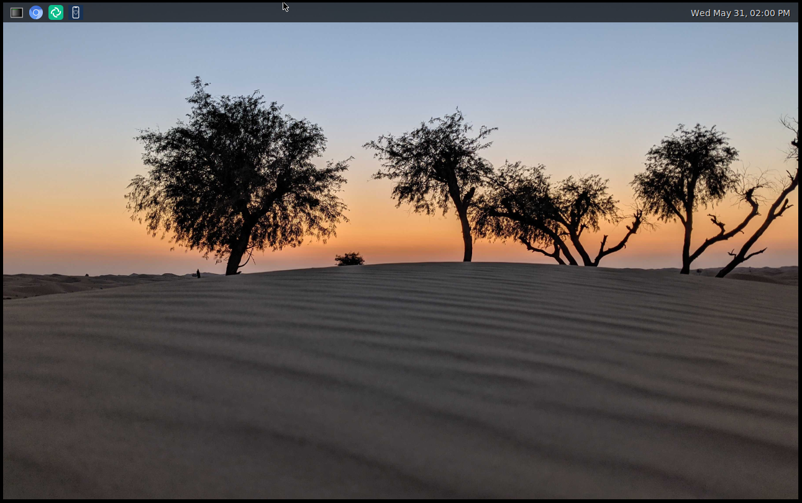
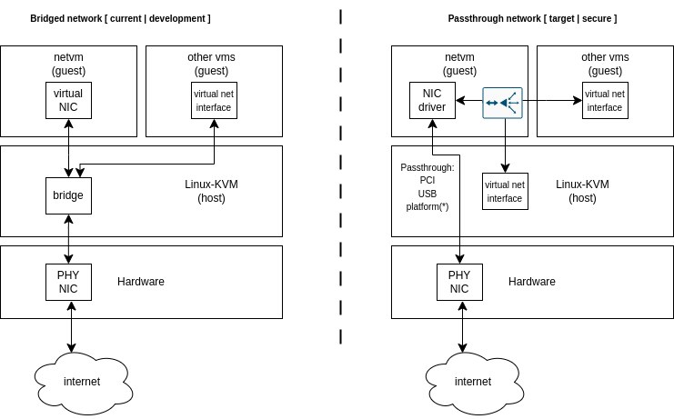
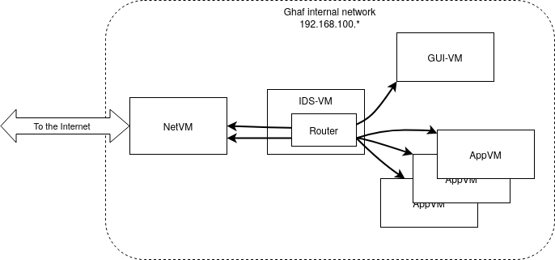
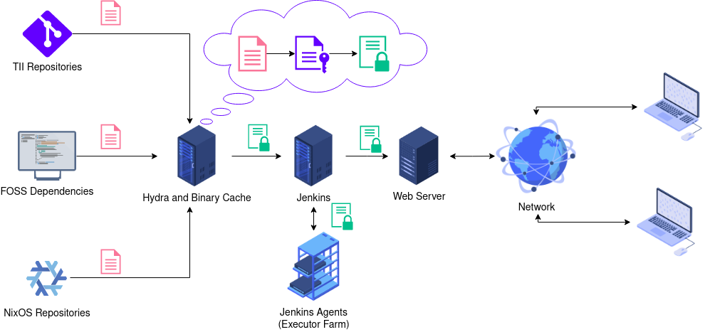

About Ghaf
Ghaf Framework is an open-source project that provides information about our work and studies in the security technologies field in the context of embedded virtualization.
The applied software research supports Secure Systems Research Center (SSRC) focus areas.
Ghaf Framework can be used to build the Ghaf Platform that will provide an edge device software architecture with key features such as modularity and scalability through virtualization, support research and development of zero trust architecture (ZTA), and allow for low maintenance efforts while keeping the main code base stable and secure. The SSRC team focus is to research on enhancing ZTA to scale horizontally across edge HW platforms (phones, drones, laptops, communication modules) and vertically across SW platforms (Linux, Android, Browser, applications).
The Ghaf Platform is a baseline software platform for edge devices, utilizing a virtualized architecture for research and product development aiming to achieve the following core objectives: apply the general security principles of zero trust within the software architecture, and act as an enabler for ZTAs within organizations.

Embedded Virtualization
Virtualization is one of the core enablers to transform the traditionally monolithic software stack within edge devices into isolated components with minimal TCB and clearly defined functionality.
The Ghaf Platform utilizes a collection of virtual machines (VMs) to define a system.
Contrary to the traditional monolithic OS, this concept allows to define and run host services in isolated environments, which breaks up the monolithic structure and allows for a modular system definition that is customizable for a specific use case. To this end, various applications and guest OSs can be deployed while simultaneously utilizing the Platform's features.
Ghaf Platform Applications
The Ghaf Platform development is focused on the transition to a modular architecture for edge devices. Products such as secure phones, drones, laptops, and other communication devices have unique challenges in their respective hardware and software ecosystems.
Enabling the integration of individual technology stacks into an organizational framework can be a challenging task. The Ghaf Platform is designed to ease this process and enable research to overcome a number of challenges.
Design Principles
The design principles influencing the architecture of the Ghaf Platform are the following:
-
Edge security
The Ghaf security architecture under development by SSRC aims to provide an understandable yet comprehensive view of security controls in the Platform so that vendors can make informed decisions and adopt the Platform for their use cases. The security architecture and subsequent research will be published by SSRC in a series of technical white papers.
-
Zero trust
The Ghaf Platform aims to apply the general security principles of zero trust within the software architecture and to act as an enabler for ZTA for edge devices within organizations.
-
Trusted computing base
The general principle for establishing the trusted Ghaf Platform code base is to rely on audited software and proven security modules while carefully evaluating and integrating new concepts. The modularized platform not only simplifies the integration of additional security measures but also facilitates the integration of hardware security features. Leveraging and contributing to open-source projects is not only a cornerstone for the Platform components' maintainability but also for the toolchain to increase transparency and auditability. By providing a hardened code base for the hypervisor and OS for the various VMs in the architecture, the Ghaf Platform leverages security benefits across all modules.
-
Configurable, declarative and reproducible
Build System and Supply Chain
As software supply chain security becomes more and more relevant to product security, it is necessary to provide mechanisms to assert reproducible builds, with a transparent chain from source code over the build environment to the final binaries. Such a system allows faster analysis of not only software bugs but also security vulnerabilities and their impact on a product without the need for extensive analysis. This approach further reduces the efforts required for patching and allows mechanisms for safe fallbacks to secure states.
For more information on Ghaf supply chain security, see Supply Chain Security.
Features
The vision for the Ghaf platform is to create a virtualized, scalable reference platform that enables the building of secure products leveraging trusted, reusable, and portable software for edge devices. For more information on reference implementation for several devices, see Reference Implementations.
Ghaf demo desktop and applications are illustrated in the screen capture below: 
Status
- ✅—integrated and tested in the
mainbranch. No known regression. - 🚧—prototyped or work in progress in the development branch.
- ❌—the feature has known regression or bugs.
Reference Devices
Orin—NVIDIA Jetson AGX Orin as the main reference device.x86—generic x86_64; tested on Intel NUC (Next Unit of Computing) or laptop.Lenovo X1—Lenovo X1 Carbon Gen 11 laptop.aarch64—generic AArch64; tested on an ARM server, laptop (e.g. Apple MacBook's), or NVIDIA Jetson AGX Orin.All variants—supported devices from Architectural Variants.
The following tables show the status of the Ghaf Platform features:
Release Builds and Hardware Architecture Support
| Feature | Status | Reference Device | Details |
|---|---|---|---|
| Ghaf in virtual machine | ✅ | x86 | nix run .#packages.x86_64-linux.vm-debug |
aarch64 reference image | ✅ | Orin | Based on Jetson Linux, OE4T and jetpack-nixos. |
aarch64 reference image | ✅ | imx8mp | Based on NXP BSP, implemented as nixos-hardware module |
x86 generic image | ✅ | x86 | Generic x86 computer, based on generic NixOS. NOTE: requires device specific configuration. |
Lenovo X1 reference image | ✅ | Lenovo X1 | x86_64 laptop computer, supports basic compartmentalized environment |
| Native build | ✅ | aarch64, x86 | Remote aarc64 nixos builders recommended |
| Cross-compilation | 🚧 | aarch64, riscv64 | Depends on NixOS nixpkgs 23.05 support for cross-compilation |
| CI builds | ✅ | All | Only main-branch, not for all PRs. |
| Emulated build | ❌ | aarch64 | binfmt, may freeze the build machine. Not recommended. See instructions. |
Development
| Feature | Status | Reference Device | Details |
|---|---|---|---|
| Quick target update | ✅ | all | nixos-rebuild --flake .#nvidia-jetson-orin-debug --target-host root@ghaf-host --fast switch |
aarch64 device flashing | ✅ | Orin | Full device software flashing using x86 machine |
| root filesystem flashing | ✅ | x86, imx8mp | dd image to bootable media - see |
| Debug: SSH | ✅ | Orin, x86 | Host access only in -debug-target, see authentication.nix |
| Debug: Serial | ✅ | all | Host access only in -debug-target - e.g. screen /dev/ttyACM0 115200 |
| Compartmentalized environment | 🚧 | Lenovo X1 | Net VM, GUI VM (with GPU passthrough) plus some App VMs |
Target Architecture
| Feature | Status | Reference Device | Details |
|---|---|---|---|
| Minimal host | 🚧 | all | See Minimal Host and PR #140. |
| Net VM | ✅ | Orin | See Net VM. Passthrough with Wi-Fi works but requires SSID/password configuration. |
| IDS VM | ✅ | Orin, Lenovo X1 | Defensive networking mechanism. |
| GUI VM | 🚧 | All, Lenovo X1 | Implemented for Lenovo X1 reference device, other devices have Wayland compositor running on the host. |
| App VM | 🚧 | All, Lenovo X1 | Implemented for Lenovo X1 reference device: Chromium, GALA and Zathura VMs. Requires GUI VM in place. |
| Admin VM | ✅ | All | Not started |
| Inter VM comms - IP-based | 🚧 | All | -debug-targets have network bridges to access VMs from host. |
| Inter VM comms - shared memory | 🚧 | All | |
| Inter VM Wayland | 🚧 | All | Currently it is waypipe over SSH, for test and demo purpose only. |
| SW update | 🚧 | All | A/B update tooling being evaluated. |
| USB passthrough | 🚧 | Orin | No reference implementation integrated yet. |
| PCI passthrough | ✅ | All | Used for reference in Net VM on Orin. |
| UART passthrough | 🚧 | Orin | See NVIDIA Jetson AGX Orin: UART Passthrough. Not integrated to any VM. |
| ARM platform bus devices passthrough | 🚧 | Orin | NVIDIA BPMP virtualization being developed |
Applications and VM Control
| Feature | Status | Reference Device | Details |
|---|---|---|---|
| Wayland-compositor | 🚧 | Orin, x86 | Implemented for Lenovo X1 |
| Chromium | 🚧 | Orin, x86 | Implemented for Lenovo X1 |
| Element | 🚧 | Orin, x86 | On host |
| Cloud Android (CVD) client application (GALA) | 🚧 | Orin, x86 | Implemented for Lenovo X1 |
| Virtualization control | 🚧 | All | See vmd design. |
Next Steps
See discussion for the outline of next steps

Architecture
The main architectural concept of the Ghaf Platform is to break up the traditional monolithic structure to modularized components, virtual machines (VM). These VMs on hardened host OS implement the Ghaf edge virtualization platform.
Embedded virtualization builds on cloud technologies in the development of end-to-end security. With hardware support for virtualization, we provide a hardened system of a small trusted computing base (TCB)—thin host—that enables isolation of use cases and their resources. Use cases are protected in guest virtual machines (VMs). Embedded targets are small devices (personal or headless) instead of high-performance cloud servers. Our scope is illustrated in the following diagram. For more information, see stack.

If you are interested in why we do something this way instead of that way, see Architecture Decision Records.
The Ghaf Platform components are used in reference configurations to build images for reference devices. For more information, see Reference Implementations.
In This Chapter
Architectural Variants
The main scope of the Ghaf platform is edge virtualization. However, to support modular development and testing of the platform, variants are supported with the following definitions:
-
Default
A default variant. Supports minimal host, GUI VM1 and netvm. May host other VMs. For more information, see Stack. -
Headless
A variant with minimal host and netvm. May host other VMs but does not have a GUI VM or graphics stack on a host. -
Host onlyA variant with minimal host only. A user can manually install software to a host, including VMs (if supported by hardware). -
No virtualizationA variant for hardware with no support for virtualization. May run any software, similar to popular Linux distributions, but cannot support guest virtual machines. May host any software deployed directly on a host.
| Variant Name | Headless | Graphics | VMs | Devices |
|---|---|---|---|---|
Default | No | GUI VM | Supported | Jetson, generic x86 |
Headless | Yes | No | Supported | Jetson, generic x86 |
Host Only | Yes | No | May be supported but not included | Jetson, generic x86 |
No Virtualization | Yes or no | Native on host | Not supported | Raspberry Pi, RISC-V |
As of early 2023, the graphics stack is deployed on a host to support application development. Work is ongoing to define the GUI VM and isolate graphics with GPU passthrough.
Architecture Decision Records
Architecturally significant decisions are recorded as architecture decision records (ADR).
The Ghaf platform decision log:
| Decision Record | Status |
|---|---|
| Minimal Host | Proposed. |
| Networking VM | Proposed, partially implemented for development and testing. |
| IDS VM | Proposed, partially implemented for development and testing. |
| Platform Bus for Rust VMM | Proposed, WIP. |
To create an architectural decision proposal, open a pull request and use the decision record template. Contributions to the Ghaf architecture decisions are welcome.
Minimal Host
Status
Proposed.
Context
Ghaf uses the default NixOS configuration as a baseline to build the target image.
The default NixOS configuration is targeted for more general use with the inclusion of multiple packages that are not supporting the Ghaf design target of a minimal TCB to protect the host. Depending on the flexibility of the NixOS configuration, Ghaf minimal host may require new development to support the requirements.
This structure in the Ghaf host configuration imports the NixOS minimal profile which suits the minimal TCB better. Even better, the modular declarative profile enables the further optimization of the minimal TCB while supporting other profiles that suit the evaluation of other objectives such as feasibility studies of additional functionality, security and performance.
Requirements
Following table describes the development requirements of minimal host. All requirements originate from TII SSRC unless otherwise noted. Scope further defines:
- target configuration:
Rfor release,Dfor debug - architectural variant:
Vfor virtualization supporting variant,Afor all, includingNo Virtualization
Compliance states the progress of requirement compliance as follows:
Dfor Designed, design requirement from TII SSRC for analysis and evaluation.Ifor Implemented, design requirement met with possible, limitations documented under Consequences.Pfor Proposed, raised for discussion but not yet designed.Mfor Met, the requirement is reviewed and approved at technology readiness level 4.
| ID | Requirement | Description | Scope | Compliance |
|---|---|---|---|---|
| MH01 | Defined in nix | Host declaration in nix | R&D,A | I |
| MH02 | Reduced profile | Remove unnecessary | R, V | I |
| MH03 | No networking | Host has no networking | R, V | D |
| MH04 | No graphics | Host has no GUI stack | R, V | D |
| MH05 | No getty | Host has no terminal | R, V | P |
| MH06 | No nix tooling | Only /nix/store, no nix | R, V | P |
| MH07 | Minimal defconfig | Host kernel is minimized | R, V | D |
| MH08 | Update via adminvm | A/B update outside host | R, V | P |
| MH09 | Read-only filesystem | Mounted RO, integrity checked | R, V | P |
This list of requirements is not yet comprehensive and may be changed based on findings of further analysis as stated in the following section.
Decision
This ADR adopts a custom developed minimal profile using nixpkgs. It reduces both image and root partition size by eliminating the host OS content per requirements and implements a minimal TCB.
The current implementation of NixOS overridden. For more information on a minimal host profile, see minimal.nix.
With the progress of implementing the requirements, the minimal host customization will be illustrated.
Consequences
Defined in nix (MH01)
Ghaf minimal host module is implemented in nix modules.
Currently, host and VM declarations are implemented using microvm.nix but this is not strict requirement for ghaf release mode declarations if the limitations or dependencies of microvm.nix do not comply with other requirements. This may require separate release mode custom nix declarations to support flexibility with microvm.nix in debug mode.
Reduced profile (MH02)
Initial Ghaf minimal profile host size reduction is implemented with metrics on host total size and break down of size of the largest dependencies. Based on the metrics, further analysis is needed on several key modules including, but not limited to, kernel, systemd and nixos.
No networking (MH03)
Currently ghaf host profile for both release and debug target has networking. Requirement of no networking on release target requires declarative host configuration where:
- The release target host kernel is built without networking support. Networking must be enabled for debug target.
- The release target host user space has no networking tools nor configurations. Access to tools on host must be enabled for debug target.
To support development of configuration changes between release and debug target, the debug target must support networking. This also supports No Virtualization-variant development in which networking must be enabled.
The exception to no networking requirement is the virtual machine manager control socket from host to guest(s). The amount of required kernel configuration dependencies and impact to different VMMs must be further analyzed.
No networking has impact on how vmd adminvm to host communication is implemented. With no networking, shared memory is proposed.
No networking may have impact on how the guest-to-guest inter virtual machine communication configuration must implemented with VMMs. This must be further analyzed.
No graphics (MH04)
Ghaf minimal host profile for release target has no graphics. Graphics will be compartmentalized to GUI VM. All graphics and display output related components and dependencies, including kernel drivers, must be removed from kernel configuration. Those are to be passed through to GUI VM.
No getty (MH05)
Ghaf host in release mode must have no terminals (TTYs) to interact with. In the current state of development, this cannot be enabled yet and has minimum requirement of system logging outside the host. Proposed design to approach this is requirement is to enable getty declaratively only in a debug serial terminal under modules/development.
No nix toolings (MH06)
Ghaf host in release mode has no nix tooling to work with the /nix/store. The /nix/store is only used to build the host system. In release mode, no modifications to nix store are possible. Changes are handled with update (MH08).
Ghaf host in debug mode must support nix tooling via read-writable host filesystem. This must be taken into account in build-time nix module declarations.
Minimal defconfig (MH07)
Ghaf host release mode kernel configuration must be minimal and hardened in the limits of HW vendor BSP. Kernel configuration per device is to be further analyzed iteratively. Limitations are to be documented per target device kernel configurations and HW support for virtualization.
Update via adminvm (MH08)
Ghaf host release mode filesystem updates are to be implemented using A/B update mechanism from adminvm. This will be designed and covered in a separate ADR.
Read-only filesystem (MH09)
Ghaf minimal host in release mode must be implemented with read-only, integrity checked (dm-verity) filesystem.
Networking Virtual Machine
Status
Proposed, partially implemented for development and testing.
Networking VM (Net VM) reference declaration is available at microvm/netvm.nix.
Context
Ghaf's high-level design target is to secure a monolithic OS by modularizing the OS to networked VMs. The key security target is to not expose the trusted host directly to the Internet. This isolates the attack surface from the Internet to Net VM.
The following context diagram illustrates development and secure scenarios:

Left: An insecure development scenario. The host is directly connected to the Internet, and the network is bridged from the host to other parts of the system.
Right: A secure scenario. The network is passed through to Net VM and routed to other parts of the system.
Decision
The development scenario simplifies the target system network access and configuration. This ADR proposes the development Net VM configuration is maintained to support system development.
The secure scenario is proposed to be implemented with the use of passthrough to DMA and remap the host physical network interface card (PHY NIC) to Net VM. This cannot be generalized for all hardware targets as it requires:
- Low-level device tree configuration for bootloader and host (at least on platform NIC).
- VMM host user space NIC bus mapping from the host to Net VM.
- Native network interface driver (not virtual) in Net VM. Native driver is bound the vendor BSP supported kernel version.
These depend on the hardware setup. The proposed target setup is that the passthrough network device(s) are implemented as declarative nix-modules for easier user hardware-specific configuration. In practice, a user may configure the declaration of a PCI or USB network card that is available to the available hardware setup.
Net VM will provide a dynamic network configuration:
- A DHCP server for Net VM to provide IP addresses for the other parts of the system, both static and dynamic.
- Routing from Net VM to the Internet and/or Inter VM.
For common reference hardware with platform NIC, the configured modules for network interface passthrough are provided. For more information, see i.MX 8QM Ethernet Passthrough.
Details of other network components, such as default firewall rules, DHCP (static and dynamic client addresses), routing, reverse proxies and security monitoring are to be described in their respective architecture decision records. In this context, these are illustrated in the context diagram on the right side of the Net VM network interface driver.
Consequences
Isolating the attack surface from the host to networking-specific guest VM makes it easier to protect the critical host system from compromise. The isolation also makes it easier to deploy further security, such as a zero trust policy engine or intrusion detection system (IDS).
Isolation makes configuration and comprehension of the system more difficult.
Intrusion Detection System Virtual Machine
Status
Proposed, partially implemented for development and testing.
Intrusion Detection VM (IDS VM) reference declaration will be available at microvm/idsvm.nix.
Context
Ghaf's high-level design target is to secure a monolithic OS by modularizing the OS to networked VMs. The key security target is to detect intrusions by analyzing the network traffic in the internal network of the OS.
Decision
The main goal is to have a networking entity in Ghaf's internal network so that all network traffic goes through that entity. Traffic then can be analyzed to detect possible intrusions in inter VM communication and outgoing network traffic (from VM to the Internet). This goal is achieved by introducing a dedicated VM and routing all networking from other VMs to go through it. Then it is possible to use various IDS software solutions in IDS VM to detect possible suspicious network activities.

Consequences
A dedicated IDS VM provides a single checkpoint to detect intrusions and anomalies in the internal network of the OS and to initiate required countermeasures.
Routing and analyzing the network traffic in a separate VM will reduce network performance.
References
rust-vmm—Bus Passthrough Support for Rust VMMs
Status
Proposed, work in progress.
Context
This ADR is a work-in-progress note for Ghaf bus passthrough implementation that will support rust-vmm-based hypervisors.
note
rust-vmm is an open-source project that empowers the community to build custom Virtual Machine Monitors (VMMs) and hypervisors. For more information, see https://github.com/rust-vmm/community.
It is crucial to have bus devices passthrough support for ARM-based hardware as the bus is mainly used to connect the peripherals. Nowadays, the only hypervisor with some support for Platform bus is QEMU but the code is dated 2013 and not frequently used.
On the other hand, one of the target hardware devices for Ghaf is NVIDIA Orin with an ARM core. To achieve Ghaf's security and hardware isolation goals, devices should support passthrough mode. Production-ready rust-vmm-based hypervisors (crosvm, Firecracker, Cloud Hypervisor) do not have support for Platform bus.
Decision
Implementation of Platform bus passthrough is a base framework for Rust VMM. This will make it possible to use this mode within production-ready rust-vmm-based hypervisors. The main candidate here is crosvm. The necessity to support Platform bus in other hypervisors is subject to discussion. Technically, the Platform bus is rather a simple bus: it manages memory mapping and interrupts. Information about devices is not dynamic but is read from the device tree during the boot stage.
The current status:
| Required Components | Status of Readiness |
|---|---|
| Host kernel side: | |
| VFIO drivers (to substitute real driver in host kernel) | -/+ |
| Host support for device trees | + |
| Guest kernel side: | |
| Device drivers for passthrough devices | + |
| Guest support for device trees | + |
| Rust VMM side: | |
| Bus support | Needs to be developed. |
| VMM support for device trees | Rudimental, needs improvement. |
Hardening
This section describes how securing Ghaf by reducing its attack surface—hardening—is done.
Kernel
Ghaf has two types of kernels: host and guest. Hardening of these kernels varies in terms of hardware support and functionality required by the guest kernel in question. Within this context, the kernel always refers to the Linux operating system kernel.
Kernel Hardening Process
NixOS provides several mechanisms to customize the kernel. The main methods are:
-
Declaring kernel custom configuration: usage in Ghaf.
Example of entering the kernel development shell to customize the
.configand build it:~/ghaf $ nix develop .#devShells.x86_64-linux.kernel-x86 ... [ghaf-kernel-devshell:~/ghaf/linux-6.6.7]$ cp ../modules/hardware/x86_64-generic/kernel/configs/ghaf_host_hardened_baseline .config [ghaf-kernel-devshell:~/ghaf/linux-6.6.7]$ make menuconfig ... [ghaf-kernel-devshell:~/ghaf/linux-6.6.7]$ make -j$(nproc) ... Kernel: arch/x86/boot/bzImage -
Booting the built kernel with QEMU:
[ghaf-kernel-devshell:~/ghaf/linux-6.6.7]$ qemu-system-x86_64 -kernel arch/x86/boot/bzImage -
Validating with kernel hardening checker:
[ghaf-kernel-devshell:~/ghaf/linux-6.6.7]$ cp ../modules/hardware/x86_64-generic/kernel/configs/ghaf_host_hardened_baseline .config [ghaf-kernel-devshell:~/ghaf/linux-6.6.7]$ HS=../modules/hardware/x86_64-generic/kernel/host/configs GS=../modules/hardware/x86_64-generic/kernel/guest/configs [ghaf-kernel-devshell:~/ghaf/linux-6.6.7]$ ./scripts/kconfig/merge_config.sh .config $HS/virtualization.config $HS/networking.config $HS/usb.config $HS/user-input-devices.config $HS/debug.config $GS/guest.config $GS/display-gpu.config [ghaf-kernel-devshell:~/ghaf/linux-6.6.7]$ kernel-hardening-checker -c .config [+] Kconfig file to check: .config [+] Detected microarchitecture: X86_64 [+] Detected kernel version: 6.6 [+] Detected compiler: GCC 120300 ... [+] Config check is finished: 'OK' - 188 / 'FAIL' - 8 [ghaf-kernel-devshell:~/ghaf/linux-6.6.7]$ kernel-hardening-checker -c .config| grep 'FAIL: ' CONFIG_CFI_CLANG |kconfig| y | kspp | self_protection | FAIL: is not found CONFIG_CFI_PERMISSIVE |kconfig| is not set | kspp | self_protection | FAIL: CONFIG_CFI_CLANG is not "y" CONFIG_MODULES |kconfig| is not set | kspp |cut_attack_surface| FAIL: "y" CONFIG_KCMP |kconfig| is not set | grsec |cut_attack_surface| FAIL: "y" CONFIG_FB |kconfig| is not set |maintainer|cut_attack_surface| FAIL: "y" CONFIG_VT |kconfig| is not set |maintainer|cut_attack_surface| FAIL: "y" CONFIG_KSM |kconfig| is not set | clipos |cut_attack_surface| FAIL: "y" CONFIG_TRIM_UNUSED_KSYMS |kconfig| y | my |cut_attack_surface| FAIL: "is not set"
Host Kernel
The host kernel runs on bare metal. The kernel is provided either with Linux upstream (x86_64) or with vendor BSP. The default Ghaf host kernel on x86_64 is maintained by Ghaf upstream package sources nixpkgs or Nix-packaged hardware-specific BSP (for example, NVIDIA Jetson-family of devices).
x86-64-linux
The host kernel hardening is based on Linux make tinyconfig. The
default tinyconfig fails to assertions on NixOS without
modifications. Assertions are fixed in the ghaf_host_hardened_baseline Linux configuration under Ghaf
modules/hardware/x86_64-generic/kernel/configs. Resulting baseline
kernel configuration is generic for x86_64 hardware architecture devices.
In addition, NixOS (Ghaf baseline dependency) requires several kernel modules that are added to the config or ignored with allowMissing = true. As of now, the kernel builds and early boots on Lenovo X1.
Virtualization Support
The host Virtualization support will add the required kernel config dependency to the Ghaf baseline by which NixOS has virtualization enabled. It can be enabled with the following flag ghaf.host.kernel_virtualization_hardening.enable for Lenovo X1.
Networking Support
The host Networking support will add the required kernel config dependency to the Ghaf baseline by which NixOS has networking enabled, It can be enabled with the following flag ghaf.host.kernel_networking_hardening.enable for Lenovo X1.
USB Support
USB support on host is for the -debug-profile builds, not for hardened host -release-builds. As of now, USB support needs to be enabled when debug support to host via USB ethernet adapter (Lenovo X1) is needed or when the user want to boot Ghaf using an external SSD. It is optional in case Ghaf is used with internal NVME.
It can be enabled with the following flag ghaf.host.kernel_usb_hardening.enable for Lenovo X1.
User Input Devices Support
The User Input Devices support will add the required kernel config dependency to the Ghaf baseline by which NixOS has user input devices enabled. It can be enabled with the following flag ghaf.host.kernel_inputdevices_hardening.enable for Lenovo X1.
To enable GUI, set Virtualization, Networking and User Input Devices support. As of now, the kernel builds and can boot on Lenovo X1.
Debug Support
The Debug support on host is for the -debug-profile builds, not for hardened host -release-builds. It can be helpful when debugging functionality is needed in a development environment.
It can be enabled with the following flag ghaf.host.kernel.debug_hardening.enable for Lenovo X1.
Guest Support
The Guest support will add the required kernel config dependency to the Ghaf baseline by which NixOS has guest enabled. The added functionality is vsock for host-to-guest and guest-to-guest communication.
It can be enabled with the following flag guest.hardening.enable for Lenovo X1.
Guest Graphics Support
The Guest Graphics support will add the required kernel config dependency to the Ghaf baseline by which NixOS has guest graphics enabled. The added functionality is for guest with graphics support enabled.
It can be enabled with the following flag guest.graphics_hardening.enable for Lenovo X1.
Secure Boot
This section describes Secure Boot and how to create secure keys.
The reader is expected to know the fundamentals of UEFI and have a basic understanding of Secure Boot UEFI specification.
Enabling Secure Boot
Secure Boot can be enabled on NixOS using Lanzaboote. Secure Boot is a UEFI feature that only allows trusted operating systems to boot. Lanzaboote has two components: lzbt and stub. lzbt signs and installs the boot files on the ESP. stub is a UEFI application that loads the kernel and initrd from the ESP.
Creating Secure Boot Keys
Secure Boot keys can be created with sbctl, a Secure Boot Manager. sbctl is available in Nixpkgs as pkgs.sbctl.
After you installed sbctl or entered a Nix shell, use the following command to create your Secure Boot keys:
$ sudo sbctl create-keys
Using "sudo sbctl create-keys" command user can create secure keys on the trusted system.
Current Implementation
For demonstration purposes, we use pre-generated secure keys which are unsecure as whoever has keys can break into the system. Currently, the Secure Boot feature is enabled in debug builds only, since secure key creation requires sudo rights.
Secure Boot Verification
-
For enabling secure boot instructions, see the Part 2: Enabling Secure Boot section of the NixOS Secure Boot Quick Start Guide.
-
Make sure your Secure Boot is enabled from the BIOS menu.
-
Once you boot your system with Secure Boot enabled, enroll keys with the following command:
$ sudo sbctl enroll-keys --microsoft
Reboot the system to activate Secure Boot in the user mode:
$ bootctl status
System:
Firmware: UEFI 2.70 (Lenovo 0.4720)
Firmware Arch: x64
Secure Boot: enabled (user)
TPM2 Support: yes
Boot into FW: supported
Stack
The Ghaf stack includes a host with VMs. The host consists of two layers—OS kernel with hypervisor and OS user space—and provides virtualization for the guest VMs: system VMs, application or service VMs, or guest OSs. The stack layers and top-level components are illustrated in the following diagram.

At the lowest levels of the stack lay hardware vendor-provided hardware, firmware, and board support package. The Ghaf project aims to use the vendor-provided components either as they are or configure them as supported by the vendor. Configuration may include, for example, host kernel hardening and including only selected components from the vendor BSP.
The Ghaf project provides the reference minimal host with user space as defined in the Minimal Host.
System VMs
Ghaf provides reference system VMs for networking, GUI and storage.
| System VM | Defined | Implementation Status |
|---|---|---|
| Networking | Yes | Partial |
| GUI (optional) | No | Reference Wayland on host, to be isolated to VM |
GUI VM is considered optional as it may not be needed in some headless configurations.
Application or Service VM
Ghaf should provide reference application VMs and service VMs that isolate respective software from the host. Depending on the use case requirements, these VMs will communicate with other parts of the system over networking and shared memory. As an example, application VMs (Wayland client) will communicate with the GUI VM (Wayland compositor) across the VM boundaries. This is called cross-domain Wayland. Another, already partially implemented area is networking VM that will securely provide Internet access to other VMs.
Guest OSs
Ghaf aims to support users with guest OSs such as other Linux distributions (Ubuntu, Fedora, etc.), Windows, and Android. Some of these have been already prototyped.
Contribution Guidelines
Improvements to code and documentation are welcome! We would love to get contributions from you. For more information, see CONTRIBUTING.md.
Some things that will increase the chance that your pull request is accepted faster:
- Spelling tools usage.
- Following our Style Guide.
- Writing a good commit message.
Reference Implementations
Our hardened OS targets are build configurations based on NixOS. The canonical URL for the upstream Nix git repository is: https://github.com/NixOS.
Build configurations define our dependencies and configuration changes to packages and build mechanisms of NixOS. If you want to try Ghaf, see Build and Run.
Approach
A build configuration is a target to build the hardened OS for a particular hardware device. Most packages used in a build configuration come from nixpkgs—NixOS Packages collection.
The upstream first approach means we aim the fix issues by contributing to nixpkgs. At the same time, we get the maintenance support of NixOS community and the benefits of the Nix language on how to build packages and track the origins of packages in the software supply chain security. For more information, see Supply Chain Security.
NixOS, a Linux OS distribution packaged with Nix, provides us with:
- generic hardware architecture support (
x86-64andAArch64) - declarative and modular mechanism to describe the system
- Nix packaging language mechanisms:
Even when unmodified upstream is often preferred, even ideal, to ensure timely security updates from upstream—customizations are sometimes required.
Example
To support a reference board without a vendor board support package (BSP)—bootloader, kernel, device drivers—is often not feasible. With this approach, we can overlay the generic NixOS Linux kernel with the vendor kernel and add a vendor bootloader to build a target image.
Often the vendor BSPs are also open source but sometimes contain unfree binary blobs from the vendor's hardware. Those are handled by allowing unfree - if the user agrees with the end-user license agreement (EULA). If not, unfree support can be dropped along with that part of the BSP support.
The same goes with the architectural variants as headless devices or end-user devices differ in terms what kind of virtual machines (VM) they contain. The user needs graphics architecture and VM support for the user interface (UI) whereas a headless device is more like a small server without the UI.
In This Chapter
Development
Ghaf Framework is free software, currently under active development.
The scope of target support is updated with development progress:
- Build and Run
- Running Remote Build on NixOS
- Installer
- Cross-Compilation
- Creating Application VM
- Hardware Configuration
- Profiles Configuration
- labwc Desktop Environment
- IDS VM Further Development
- systemd Service Hardening
Once you are up and running, you can participate in the collaborative development process by building a development build with additional options. For example, with the development username and password that are defined in accounts.nix.
If you authorize your development SSH keys in the ssh.nix module and rebuild Ghaf for your target device, you can use nixos-rebuild switch to quickly deploy your configuration changes to the target device over the network using SSH. For example:
nixos-rebuild --flake .#nvidia-jetson-orin-agx-debug --target-host root@<ip_address_of_ghaf-host> --fast switch
...
nixos-rebuild --flake .#lenovo-x1-carbon-gen11-debug --target-host root@<ip_address_of_ghaf-host> --fast switch
...
tip
With the -debug targets, the debug ethernet is enabled on host. With Lenovo X1 Carbon, you can connect USB-Ethernet adapter for the debug and development access.
Pull requests are the way for contributors to submit code to the Ghaf project. For more information, see Contribution Guidelines.
Build and Run
This tutorial assumes that you already have basic git experience.
The canonical URL for the upstream Ghaf git repository is https://github.com/tiiuae/ghaf. To try Ghaf, you can build it from the source.
warning
Cross-compilation support is currently under development and not available for the building process.
Prerequisites
First, follow the basic device-independent steps:
- Clone the git repository https://github.com/tiiuae/ghaf.
- Ghaf uses a Nix flake approach to build the framework targets, make sure to:
- Install Nix or full NixOS if needed: https://nixos.org/download.html.
- Enable flakes: https://nixos.wiki/wiki/Flakes#Enable_flakes.
To see all Ghaf-supported outputs, type
nix flake show. - Set up an AArch64 remote builder: https://nixos.org/manual/nix/stable/advanced-topics/distributed-builds.html.
Then you can use one of the following instructions for the supported targets:
| Device | Architecture | Instruction |
|---|---|---|
| Virtual Machine | x86_64 | Running Ghaf Image for x86 VM (ghaf-host) |
| Generic x86 Сomputer | x86_64 | Running Ghaf Image for x86 Computer |
| Lenovo X1 Carbon Gen 11 | x86_64 | Running Ghaf Image for Lenovo X1 |
| NVIDIA Jetson AGX Orin | AArch64 | Ghaf Image for NVIDIA Jetson Orin AGX |
| NXP i.MX 8MP-EVK | AArch64 | Building Ghaf Image for NXP i.MX 8MP-EVK |
| MICROCHIP icicle-kit | RISCV64 | Building Ghaf Image for Microchip Icicle Kit |
Running Ghaf Image for x86 VM (ghaf-host)
Before you begin, check device-independent prerequisites.
From the ghaf source directory, run the nix run .#packages.x86_64-linux.vm-debug command.
This creates ghaf-host.qcow2 copy-on-write overlay disk image in your current directory. If you do unclean shutdown for the QEMU VM, you might get weird errors the next time you boot. Simply removing ghaf-host.qcow2 should be enough. To cleanly shut down the VM, from the menu bar of the QEMU Window, click Machine and then Power Down.
Running Ghaf Image for x86 Computer
Before you begin, check device-independent prerequisites.
Do the following:
- To build the target image, run the command:
nix build github:tiiuae/ghaf#generic-x86_64-debug - After the build is completed, prepare a USB boot media with the target image you built using the
flash.shscript:./packages/flash/flash.sh -d /dev/<YOUR_USB_DRIVE> -i result/<IMAGE_NAME> - Boot the computer from the USB media.
Running Ghaf Image for Lenovo X1
Lenovo X1 is the reference x86_64 device for the Ghaf project.
Do the following:
- To build the target image, run the command:
nix build github:tiiuae/ghaf#lenovo-x1-carbon-gen11-debug - After the build is completed, prepare a USB boot media with the target image you built using the
flash.shscript:./packages/flash/flash.sh -d /dev/<YOUR_USB_DRIVE> -i result/<IMAGE_NAME> - Boot the computer from the USB media.
Ghaf Image for NVIDIA Jetson Orin AGX
Before you begin:
- Check device-independent prerequisites.
- If you use a new device, flash bootloader firmware first. Then you can build and run a Ghaf image.
Flashing NVIDIA Jetson Orin AGX
-
Run the command:
nix build github:tiiuae/ghaf#nvidia-jetson-orin-agx-debug-flash-scriptIt will build the Ghaf image and bootloader firmware, and prepare the flashing script. Give "yes" answers to all script questions. The building process takes around 1,5 hours.
-
Set up the following connections:
- Connect the board to a power supply with a USB-C cable.
- Connect a Linux laptop to the board with the USB-C cable.
- Connect the Linux laptop to the board with a Micro-USB cable to use serial interface.
For more information on the board's connections details, see the Hardware Layout section of the Jetson AGX Orin Developer Kit User Guide.
-
After the build is completed, put the board in recovery mode. For more information, see the Force Recovery Mode section in the Jetson AGX Orin Developer Kit User Guide.
-
Run the flashing script:
sudo ~/result/bin/flash-ghaf-hostThere is a time-out for this operation, so run the script within one minute after putting the device in recovery mode. If you got the error message "ERROR: might be timeout in USB write.":
- Reboot the device and put it in recovery mode again.
- Check with the
lsusbcommand if your computer can still recognize the board, and run the flash script again.
-
Restart the device after flashing is done.
Building and Running Ghaf Image for NVIDIA Jetson Orin AGX
After the latest firmware is flashed, it is possible to use a simplified process by building only the Ghaf disk image and running it from external media:
- To build the target image, run the command:
nix build github:tiiuae/ghaf#nvidia-jetson-orin-agx-debug-from-x86_64 - After the build is completed, prepare a USB boot media with the target image you built using the
flash.shscript:./packages/flash/flash.sh -d /dev/<YOUR_USB_DRIVE> -i result/sd-image/<IMAGE_NAME> - Boot the hardware from the USB media.
In the current state of Ghaf, it is a bit tricky to make NVIDIA Jetson Orin AGX boot Ghaf from a USB if the same thing has already been flashed on the boards's eMMC. To succeed, you can change partition labels on eMMC (or optionally wiping everything away by formatting):
- Log in as a root:
sudo su - Check the current labels:
lsblk -o name,path,fstype,mountpoint,label,size,uuid - Change the ext4 partition label:
e2label /dev/mmcblk0p1 nixos_emmc - Change the vfat partition label:
dosfslabel /dev/mmcblk0p2 ESP_EMMC - Verify the labels that were changed:
lsblk -o name,path,fstype,mountpoint,label,size,uuid - After these changes NVIDIA Jetson Orin AGX cannot boot from its internal eMMC. It will boot from the USB device with the correct partition labels.
Building Ghaf Image for NXP i.MX 8MP-EVK
Before you begin, check device-independent prerequisites.
In the case of i.MX8, Ghaf deployment consists of creating a bootable SD card and USB media with the Ghaf image:
-
To build and flash the Ghaf image:
- Run the
nix build .#packages.aarch64-linux.imx8mp-evk-releasecommand. - Prepare the USB boot media with the target HW image you built:
./packages/flash/flash.sh -d /dev/<YOUR_USB_DRIVE> -i result/<IMAGE_NAME>.
- Run the
-
Insert an SD card and USB boot media into the board and switch the power on.
Building Ghaf Image for Microchip Icicle Kit
Before you begin:
- Check device-independent prerequisites.
- Make sure HSS version 0.99.35-v2023.02 is programmed in your board eNVM. The version can be seen in the pre-bootloader log. Check the video guide to build HSS and program the eNVM: How to build HSS and program the eNVM?
In the case of the Icicle Kit, Ghaf deployment consists of creating an SD image with U-Boot and Linux kernel from Microchip, and Ghaf-based NixOS rootfs:
-
Build a Ghaf SD image:
a. Run the nix build .#packages.riscv64-linux.microchip-icicle-kit-release command to release the image. b. Run the nix build .#packages.riscv64-linux.microchip-icicle-kit-debug command to debug the image.
-
Flash the Ghaf SD image:
-
If you want to use a SD card:
- Prepare the SD card with the target HW image you built:
./packages/flash/flash.sh -d /dev/<YOUR_SD_CARD> -i result/<IMAGE_NAME>. - Insert an SD card into the board and switch the power on.
- Prepare the SD card with the target HW image you built:
-
If you want to use the onboard MMC:
- You can directly flash a NixOS image to an onboard MMC card:
./packages/flash/flash.sh -d /dev/<YOUR_MMC_DEVICE> -i result/<IMAGE_NAME>.
- You can directly flash a NixOS image to an onboard MMC card:
-
For more information on how to access the MMC card as a USB disk, see MPFS Icicle Kit User Guide.
Running Remote Build on NixOS
To set up a remote build on NixOS:
- Identify required SSH keys for remote SSH connection.
- Set up configurations.
If you hit an issue, check Troubleshooting.
1. Configuring SSH Keys
important
This step assumes that public SSH keys were generated and copied (ssh-copy-id) both for normal and root users. For more information, see Setting up public key authentication.
Before you begin, make sure an SSH connection is established to the remote host for both normal and root users:
ssh USER@IP_ADDRESS_OF_REMOTE_MACHINE
nix store ping --store ssh://USER@REMOTE_IP_ADDRESS
1.1. [Local Machine] Configuring SSH Keys
Do the following on a local machine:
-
Change directory to Home Directory with SSH:
cd .sshThe public keys of the remote machine are located in the known_hosts file. These keys are created and configured after the ssh-copy-id command. Make sure the keys are there. If they are not there:
- Access the remote machine.
- Run
cd /etc/ssh. - Retrieve and copy the public keys.
- Go back to the local machine and paste them into known_hosts.
-
Navigate to the
/etc/ssh/directory:cd /etc/sshMake sure the ssh_known_hosts file contains the same public keys as the remote machine (same as
.ssh/knwon_hosts). Otherwise, specify it in theconfiguration.nixfile. -
Use CMD as the root user:
sudo -i -
Make sure the root user’s keys are different from the user’s keys:
cd .ssh.sshis a user-level access and/etc/sshis system-wide.
1.2. Accessing Remote Machine Using SSH
Do the following:
-
Navigate the authorized_keys file:
ssh USER@IP_ADDRESS_OF_REMOTE_MACHINE cd .ssh sudo nano authorized_keys -
Make sure that both user and root public keys for the local machine are located there:
- The user’s public key can be obtained from
/home/username/.ssh/id_rsa.pub. - The root user's public key can be obtained from
/root/.ssh/id_rsa.pub.
- The user’s public key can be obtained from
2. Setting Up Configuration Files
2.1. [Local Machine] Setting Up Configuration Files
Do the following on a local machine:
- Set configuration variables in
configuration.nixandnix.conf:- Use the following commands:
cd /etc/nixos sudo nano configuration.nix - Add lib in the header like so:
{ config, pkgs, lib, ... }:. - Edit the
nix.conffile:
For more information, see the nix.conf section of the Nix Reference Manual.environment.etc."nix/nix.conf".text = lib.mkForce '' # Your custom nix.conf content here builders = @/etc/nix/machines require-sigs = false max-jobs = 0 # to use remote build by default not local substituters = https://cache.nixos.org/ trusted-public-keys = cache.nixos.org-1:6pb16ZPMQpcDShjY= cache.farah:STwtDRDeIDa... build-users-group = nixbld trusted-users = root farahayyad experimental-features = nix-command flakes ''; - Rebuild NixOS by running:
sudo nixos-rebuild switch
- Use the following commands:
- Create or set the machines file:
-
Use the following commands:
cd /etc/nixos sudo nano machines -
Specify the SSH settings:
[ssh://]USER@HOST target-spec [SSH identity file] [max-jobs] [speed factor] [supported-features] [mandatory-features] [ssh-public-key-encoded]- Parameters inside ‘[ ]’ are optional.
- The ssh-public-key-encoded is the base-64 encoded public key of the remote machine. Get the encoding using:
echo -n "your_public_key_here" | base64 - If omitted, SSH will use its regular known_hosts file.
For more information, see the Remote Builds section of the Nix Reference Manual.
-
2.2. [Remote Machine] Setting Up Configuration Files
Do the following on a remote machine:
- Specify the sshd_config settings:
- Use the following commands:
cd /etc/ssh sudo nano sshd_config - Make sure PubkeyAuthentication is set as yes.
- Use the following commands:
- Specify the
/etc/nix/nix.confsettings:- Use the following commands:
cd /etc/nix sudo nano nix.conf - Edit the
nix.conffile:trusted-public-keys = cache.nixos.org-1:61o0gWypbMrAURk... build-users-group = nixbld require-sigs = false trusted-users = root farahayyad jk binary-caches = https://cache.nixos.org/ substituters = https://cache.nixos.org/ system-features = nixos-test benchmark big-parallel kvm binary-cache-public-keys = cache.nixos.org-1:6NCHD59X43... experimental-features = nix-command flakes - Run the following command to restart daemon and update all the preceding changes:
systemctl restart nix-daemon.service
- Use the following commands:
Troubleshooting
- Single-User Nix Installation Issues
- VPN Setup for Remote Access
- Private Key on Local Machine Not Matching Public Key on Remote Machine
Single-User Nix Installation Issues
This issue typically arises when Nix is installed in a single-user mode on the remote machine, which can create permission issues during multi-user operations.
If an operation fails with the following error message:
could not set permissions on '/nix/var/nix/profiles/per-user' to 755: Operation not permitted
reinstall Nix in a multi-user setup:
-
Uninstall Nix using a single-user mode:
rm -rf /nix -
Install Nix in a multi-user mode:
sh <(curl -L https://nixos.org/nix/install) --daemon
For more information about Nix security modes, see the Security section of the Nix Reference Manual.
VPN Setup for Remote Access
A VPN is needed, if the local machine is not on the same local network as your remote build machine.
To set up a VPN using OpenConnect, do the following:
- Install OpenConnect:
nix-env -iA nixos.openconnect
- Establish a VPN connection:
sudo openconnect --protocol=gp -b access.tii.ae
- Once authenticated, you establish a secure connection to your network. Use
ssh USER@IP_ADDRESS_OF_REMOTE_MACHINEto check if it is possible to connect to the remote machine.
Private Key on Local Machine Not Matching Public Key on Remote Machine
Using mismatched key pairs could result in the Permission denied error.
Ensure and double-check that you are using the right key pairs.
If you choose to use/present your local’s RSA private key, make sure that it is the corresponding RSA public key that is in the remote’s authorized_file, not the ED25519 or ECDSA public keys.
Installer
Configuring and Building Installer for Ghaf
You can obtain the installation image for your Ghaf configuration.
In addition to the live USB image that Ghaf provides it is also possible to install Ghaf. This can either be achieved by downloading the desired image or by building it as described below.
Currently, only x86_64-linux systems are supported by the standalone installer.
To build, for example, the debug image for the Lenovo x1, use the following command:
nix build .#lenovo-x1-carbon-gen11-debug-installer
Flashing Installer
Once built you must transfer it to the desired installation media. It requires at least a 4GB SSD, at the time of writing.
sudo dd if=./result/iso/ghaf-<version>-x86_64-linux.iso of=/dev/<SSD_NAME> bs=32M status=progress; sync
Installing Image
caution
This operation is destructive and will overwrite your system.
Insert the SSD into the laptop, boot, and select the option to install.
Then use the following command:
sudo ghaf-install.sh
Check the available options shown in the prompt for the install target. Mind that the /dev/sdX is likely the install medium.
Once entered, include /dev and press [Enter] on the keyboard to complete the process.
sudo reboot
Remove the installer drive.
Cross-Compilation
warning
Cross-compilation is currently under development and cannot be used properly on all the supported device configurations.
Ghaf is targeted at a range of devices and form factors that support different instruction set architectures (ISA). Many small form-factor edge devices are not powerful enough to compile the needed applications or OSs that run on them. As the most common ISA used in desktops and servers is x_86, this will generally require that the code is cross-compiled for target ISA e.g. AArch64 or RISC-V.
NixOS and Nixpkgs have good support for cross-compilation, however, there are still some that can not be compiled in this way.
Cross-Compilation for Microchip Icicle Kit (RISCV64)
An SD image for the Microchip Icicle Kit can be cross-compiled from an x86 machine. To generate the release or debug an SD image run the following command:
$> nix build .#packages.riscv64-linux.microchip-icicle-kit-<release/debug>
Future Cross-Compilation Support
This will involve working with upstream package maintainers to ensure that the packages are cross-compilation aware. This will be addressed on a package-by-package basis.
binfmt Emulated Build
binfmt allows running different ISA on a development machine. This is achieved by running the target binary in an emulator such as QEMU or in a VM. So while not cross-compiled it can enable development for some embedded device configurations.
To enable binfmt, we recommend to set the following in your host systems configuration.nix:
boot.binfmt.emulatedSystems = [
"riscv64-linux"
"aarch64-linux"
];
In addition, it is recommended to enable KVM support with either
boot.kernelModules = [ "kvm-amd" ];
or
boot.kernelModules = [ "kvm-intel" ];
depending on whether your development host is running AMD or Intel processor.
Creating Application VM
Application VM (App VM) is a VM that improves trust in system components by isolating applications from the host OS and other applications. Virtualization with hardware-backed mechanisms provides better resource protection than traditional OS. This lets users use applications of different trust levels within the same system without compromising system security. While the VMs have overhead, it is acceptable as a result of improved security and usability that makes the application seem like it is running inside an ordinary OS.
As a result, both highly trusted applications and untrusted applications can be hosted in the same secure system when the concerns are separated in their own App VM.
To create an App VM, do the following:
-
Create the new configuration file for your VM in the modules/reference/appvms directory.
You can use an already existing VM file as a reference, for example:modules/reference/appvms/business.nix.Each VM has the following properties:
Property Type Unique Description Example name str yes This name is postfixed with -vmand will be shown in microvm list. The name, for example,chromium-vmwill be also the VM hostname. The length of the name must be 8 characters or less.“chromium” packages list of types.package no Packages to include in a VM. It is possible to make it empty or add several packages. [chromium top] macAddress str yes Needed for network configuration. "02:00:00:03:03:05" ramMb int, [1, …, host memory] no Memory in MB. 3072 cores int, [1, …, host cores] no Virtual CPU cores. -
Create a new option for your VM in modules/reference/appvms/default.nix. For example:
business-vm = lib.mkEnableOption "Enable the Business appvm";
new-vm = lib.mkEnableOption "Enable the New appvm"; # your new vm here
++ (lib.optionals cfg.business-vm [(import ./business.nix {inherit pkgs lib config;})])
++ (lib.optionals cfg.new-vm [(import ./new_vm_name.nix {inherit pkgs lib config;})]); # your new vm here
- Add your new VM to the profile file, for example mvp-user-trial.nix:
business-vm = true;
new-vm = true; # your new vm here
note
For more information on creating new profiles, see Profiles Configuration.
- Add an IP and the VM name in modules/common/networking/hosts.nix. For example:
{
ip = 105;
name = "business-vm";
}
-
Add an application launcher in modules/common/services/desktop.nix.
A launcher element has the following properties:
- name: the name of the launcher;
- path: path to the executable you want to run, like a graphical application;
- icon: an optional icon for the launcher. If not specified, the system will attempt to find an icon matching the
name. You can set this to the name of an icon you expect to be available in the current icon theme (currently "Papirus," defined inmodules/desktop/graphics/labwc.nix), or provide a full path to a specific icon file.
Hardware Configuration
All configuration files for reference target devices are in modules/hardware.
The ghaf-24.06 release supports the following target hardware:
- NVIDIA Jetson AGX Orin
- NVIDIA Jetson Orin NX
- Generic x86 (PC)
- Polarfire Icicle Kit
- Lenovo ThinkPad X1 Carbon Gen 11
- Lenovo ThinkPad X1 Carbon Gen 10
- NXP i.MX 8M Plus
To add a new hardware configuration file, do the following:
-
Create a separate folder for the device in modules/hardware.
-
Create the new configuration file with hardware-dependent parameters like host information, input and output device parameters, and others.
You can use an already existing file as a reference, for example modules/hardware/lenovo-x1/definitions/x1-gen11.nix.
Profiles Configuration
A profile is a set of software needed for a particular use case. All profiles configuration files are in modules/profiles.
To add a new profile, do the following:
- Create your own configuration file using modules/profiles/mvp-user-trial.nix as a reference.
- Depending on the location of your reference appvms, services, or programs change the includes to point to them.
- Create a new enable option to enable the profile, for example,
new-cool-profile. - In the lower section, under the correct area appvms, services, programs, make sure to describe additional definitions you need.
For example, a safe-and-unsave-browsing.nix file with a simple setup that includes business-vm and chrome-vm could look like this:
config = lib.mkIf cfg.enable {
ghaf = {
reference = {
appvms = {
enable = true;
chromium-vm = true;
business-vm = true;
};
services = {
enable = true;
};
programs = {
};
};
profiles = {
laptop-x86 = {
enable = true;
netvmExtraModules = [../reference/services];
guivmExtraModules = [../reference/programs];
inherit (config.ghaf.reference.appvms) enabled-app-vms;
};
};
};
};
labwc Desktop Environment
labwc is a configurable and lightweight wlroots-based Wayland-compatible desktop environment.
To use labwc as your default desktop environment, add it as a module to Ghaf:
- change the configuration option
profiles.graphics.compositor = "labwc"or - uncomment the corresponding line in the guivm.nix file.
The basis of the labwc configuration is the set of following files: rc.xml, menu.xml, autostart, and environment. These files can be edited by substituting in the labwc overlay overlays/custom-packages/labwc/default.nix.
Window Border Coloring
The border color concept illustrates the application trustworthiness in a user-friendly manner. The color shows the application's security level and allows avoiding user's mistakes. The same approach can be found in other projects, for example, QubeOS.
Ghaf uses patched labwc which makes it possible to change the border color for the chosen application. The implementation is based on window rules by substituting the server decoration colors (serverDecoration = yes). The borderColor property is responsible for the frame color.
important
According to the labwc specification, the identifier parameter is case-sensitive and relates to app_id for native Wayland windows and WM_CLASS for XWayland clients.
For example, the foot terminal with Aqua colored frame:
<windowRules>
<windowRule identifier="Foot" borderColor="#00FFFF" serverDecoration="yes" skipTaskbar="yes" />
<windowRule identifier="firefox" borderColor="#FF0000" serverDecoration="yes" skipTaskbar="yes" />
</windowRules>

IDS VM Further Development
Implementation
The IDS VM is implemented as a regular Micro VM with static IP.
The mitmproxy is included in the demonstrative interactive proxy to enable analysis of TLS-protected data on the fly. Also, Snort network intrusion detection and prevention system package is included but no dedicated UI nor proper utilization is provided.
Enforcing network traffic to go through IDS VM is crucial to the IDS VM functionality. It is achieved by setting the IDS VM to be the gateway of other VMs in dnsmasq configuration of Net VM. There is a risk that one could change the gateway settings of the VM to bypass the IDS VM. This however requires root (sudo) rights and it is assumed here that these rights are enabled only in the debug build.
mitmproxy
mitmproxy is a free and open-source interactive HTTPS proxy. It is your Swiss Army Knife for debugging, testing, privacy measurements, and penetration testing. It can be used to intercept, inspect, modify and replay web traffic such as HTTP/1, HTTP/2, WebSockets, or any other SSL/TLS-protected protocols.
In IDS VM, we use mitmweb1 tool to demonstrate mitmproxy's capabilities. It provides a web-based user interface that allows interactive examination and modification of HTTP(s) traffic. The mtmproxy package also includes a console tool that provides the same functionalities in a text-based interface and a command-line tool mitmdump to view, record, and programmatically transform HTTP(s) traffic.
The mitmweb tool is run in ids-vm as a systemd service. It starts automatically when ids-vm boots up. The UI it provides is accessible at http://localhost:8081, so it is available from ids-vm only. However, with SSH port forwarding it is possible to access the UI from other VMs. To that purpose, GUI VM has a script mitmweb-ui that creates an SSH tunnel between ids-vm and chromium-vm, launches Chromium, and connects to the UI address.
Certificates
mitmproxy can decrypt encrypted traffic on the fly, as long as the client trusts mitmproxy's built-in certificate authority (CA). CA certificates are the same for all ids-vm instances, as they are hardcoded to the IDS VM implementation. In the release version, these should be randomly generated and stored securely.
By default, any of the clients should not trust mitmproxy's CA. These CA certificates should be installed in the OS's CA storage. However, many client applications (web browsers, for example) use their own CA bundles, and importing custom certificates there can be complicated or require manual user interaction. In our case, this difficulty is circumvented in chromium-vm by disabling certificate verification errors, if the certificate chain contains a certificate which SPKI fingerprint matches that of mitmproxy's CA certificate fingerprint. This does not degrade server verification security since mitmproxy validates upstream certificates using a certified Python package which provides Mozilla's CA Bundle.
Some applications use certificate pinning to prevent man-in-the-middle attacks. As a consequence mitmproxy's certificates will not be accepted by these applications without patching applications manually. Other option is to set mitmproxy to use ignore_hosts option to prevent mitmproxy from intercepting traffic to these specific domains.
mitmproxy is an interactive, SSL/TLS-capable intercepting proxy with a console interface for HTTP/1, HTTP/2, and WebSockets. mitmweb is a web-based interface for mitmproxy. mitmdump is the command-line version of mitmproxy. Source: mitmproxy docs.
systemd Service Hardening
This document outlines systemd service configurations that significantly impact a service's exposure.
tip
For more information on troubleshooting common issues with systemd services, see Troubleshooting with systemd.
The following configurations can be utilized to enhance the security of a systemd service:
1. Networking
1.1. PrivateNetwork
PrivateNetwork is useful for preventing the service from accessing the network.
Type: Boolean.
Default: false
Options:
true: Creates a new network namespace for the service. Only the loopback device "lo" is available in this namespace, other network devices are not accessible.false: The service will use the host's network namespace, it can access all the network devices available on the host. It can communicate over the network like any other process running on a host.
1.2. IPAccounting
IPAccounting helps in detecting unusual or unexpected network activity by a service.
Type: Boolean.
Default: false
Options:
true: Enables accounting for all IPv4 and IPv6 sockets created by the service: keeps track of the data sent and received by each socket in the service.false: Disables tracking of the sockets created by the service.
1.3. IPAddressAllow, IPAddressDeny
IPAddressAllow=ADDRESS[/PREFIXLENGTH]…, IPAddressDeny=ADDRESS[/PREFIXLENGTH]…
Enables packet filtering on all IPv4 and IPv6 sockets created by the service. Useful for restricting/preventing a service from communicating only with certain IP addresses or networks.
Type: Space separated list of ip addresses and/or a symbolic name.
Default: All IP addresses are allowed and no IP addresses are explicitly denied.
Options:
- List of addresses: Specify list of addresses allowed/denied. For example,
['192.168.1.8' '192.168.1.0/24']. Any IP not explicitly allowed will be denied. - Symbolic Names: Following symbolic names can also be used.
any: Any host (i.e., '0.0.0.0/0 ::/0').
localhost: All addresses on the local loopback (i.e., '127.0.0.0/8 ::1/128').
link-local: All link-local IP addresses(i.e., '169.254.0.0/16 fe80::/64').
multicast: All IP multicasting addresses (i.e., 224.0.0.0/4 ff00::/8).
1.4. RestrictNetworkInterfaces
RestrictNetworkInterfaces is used to control which network interfaces a service has access to. This helps isolate services from the network or restrict them to specific network interfaces, enhancing security and reducing potential risk.
Type: Space-separated list of network interface names.
Default: The service can access to all available network interfaces unless other network restrictions are in place.
Options:
- Specify individual network interface names to restrict the service to using only those interfaces.
- Prefix an interface name with '~' to invert the restriction, i.e. denying access to that specific interface while allowing all others.
1.5. RestrictAddressFamilies
RestrictAddressFamilies is used to control which address families a service can use. This setting restricts the service's ability to open sockets using specific address families, such as 'AF_INET' for IPv4, 'AF_INET6' for IPv6, or others. It is a security feature that helps limit the service's network capabilities and reduces its exposure to network-related vulnerabilities.
Type: List of address family names.
Default: If not configured, the service is allowed to use all available address families.
Options:
none: Apply no restriction.- Specific Address Families: Specify one or more address families that the service is allowed to use, for example,
'AF_INET','AF_INET6','AF_UNIX'. - Inverted Restriction: Prepend character '~' to an address family name to deny access to it while allowing all others, for example,
'~AF_INET'would block IPv4 access.
Back to Top ⏫
2. File System
2.1 ProtectHome
ProtectHome is used to restrict a service's access to home directories. This security feature can be used either completely to block access to /home, /root, and /run/user or make them appear empty to the service, thereby protecting user data from unauthorized access by system services.
Type: Boolean or String.
Default: false i.e. the service has full access to home directories unless restricted by some other mean.
Options:
true: The service is completely denied access to home directories.false: The service has unrestricted access to home directories.read-only: The service can view the contents of home directories but cannot modify them.tmpfs: Mounts a temporary filesystem in place of home directories, ensuring the service cannot access or modify the actual user data. Adding the tmpfs option provides a flexible approach by creating a volatile in-memory filesystem where the service believes it has access to home but any changes it makes do not affect the actual data and are lost when the service stops. This is particularly useful for services that require a temporary space in a home.
2.2. ProtectSystem
ProtectSystem controls access to the system's root directory (/) and other essential system directories. This setting enhances security by restricting a service's ability to modify or access critical system files and directories.
Type: Boolean or String.
Default: full (Equivalent to true). The service is restricted from modifying or accessing critical system directories.
Options:
true: Mounts the directories/usr/,/boot, and/efiread-only for processes.full: Additionally mounts the/etc/directory read-only.strict: Mounts the entire file system hierarchy read-only, except for essential API file system subtrees like/dev/,/proc/, and/sys/.false: Allows the service unrestricted access to system directories.
Using true or full is recommended for services that do not require access to system directories to enhance security and stability.
2.3. ProtectProc
ProtectProc controls access to the /proc filesystem for a service. This setting enhances security by restricting a service's ability to view or manipulate processes and kernel information in the /proc directory.
Type: Boolean or String.
Default: default. No restriction is imposed from viewing or manipulating processes and kernel information in /proc.
Options:
noaccess: Restricts access to most process metadata of other users in/proc.invisible: Hides processes owned by other users from view in/proc.ptraceable: Hides processes that cannot be traced (ptrace()) by other processes.default: Imposes no restrictions on access or visibility to/proc.
2.4. ReadWritePaths, ReadOnlyPaths, InaccessiblePaths, ExecPaths, NoExecPaths
ReadWritePaths creates a new file system namespace for executed processes, enabling fine-grained control over file system access.
- ReadWritePaths=: Paths listed here are accessible with the same access modes from within the namespace as from outside it.
- ReadOnlyPaths=: Allows reading from listed paths only; write attempts are refused even if file access controls would otherwise permit it.
- InaccessiblePaths=: Makes listed paths and everything below them in the file system hierarchy inaccessible to processes within the namespace.
- NoExecPaths=: Prevents execution of files from listed paths, overriding usual file access controls. Nest
ExecPaths=withinNoExecPaths=to selectively allow execution within directories otherwise marked non-executable.
Type: Space-separated list of paths.
Default: No restriction to file system access until unless restricted by some other mechanism.
Options:
Space separated list of paths : Space-separated list of paths relative to the host's root directory. Symlinks are resolved relative to the root directory specified by RootDirectory= or RootImage=.
2.5. PrivateTmp
PrivateTmp uses a private, isolated /tmp directory for the service, enhancing security by preventing access to other processes' temporary files and ensuring data isolation.
Type: Boolean.
Default: false. If not specified, the service shares the system /tmp directory with other processes.
Options:
true: Enables private/tmpfor the service, isolating its temporary files from other processes.false: The service shares the system/tmpdirectory with other processes.
Additionally, when enabled, all temporary files created by a service in these directories will be automatically removed after the service is stopped.
2.6. PrivateMounts
PrivateMounts controls whether the service should have its mount namespace, isolating its mounts from the rest of the system. This setup ensures that any file system mount points created or removed by the unit's processes remain private to them and are not visible to the host.
Type: Boolean.
Default: false. If not specified, the service shares the same mount namespace as other processes.
Options:
true: Enables private mount namespace for the service, isolating its mounts from the rest of the system.false: The service shares the same mount namespace as other processes.
2.7. ProcSubset
ProcSubset restricts the set of /proc entries visible to the service, enhancing security by limiting access to specific process information in the /proc filesystem.
Type: String.
Default: all. If not specified, the service has access to all /proc entries.
Options:
all: Allows the service access to all/procentries.pid: Restricts the service to only its own process information (/proc/self,/proc/thread-self/).
Back to Top ⏫
3. User Separation
important
Not applicable for the service runs as root.
3.1. PrivateUsers
PrivateUsers= controls whether the service should run with a private set of UIDs and GIDs, isolating the user and group databases used by the unit from the rest of the system, and creating a secure sandbox environment. The isolation reduces the privilege escalation potential of services.
Type: Boolean.
Default: false. If not specified, the service runs with the same user and group IDs as other processes.
Options:
true: Enables private user and group IDs for the service by creating a new user namespace, isolating them from the rest of the system.false: The service runs with the same user and group IDs as other processes.
3.2. DynamicUser
DynamicUser enables systemd to dynamically allocate a unique user and group ID (UID/GID) for the service at runtime, enhancing security and resource isolation. These user and group entries are managed transiently during runtime and are not added to /etc/passwd or /etc/group.
Type: Boolean.
Default: false. If not specified, the service uses a static user and group ID defined in the service unit file or defaults to root.
Options:
true: A UNIX user and group pair are dynamically allocated when the unit is started and released as soon as it is stopped.false: The service uses a static UID/GID defined in the service unit file or defaults toroot.
Back to Top ⏫
4. Devices
4.1. PrivateDevices
PrivateDevices controls whether the service should have access to device nodes in /dev.
Type: Boolean.
Default: false. If not specified, the service has access to device nodes in /dev.
Options:
true: Restricts the service's access to device nodes in/devby creating a new/dev/mount for the executed processes and includes only pseudo devices such as/dev/null,/dev/zero, or/dev/random. Physical devices are not added to this mount. This setup is useful for disabling physical device access by the service.false: The service has access to device nodes in/dev.
4.2. DeviceAllow
DeviceAllow specifies individual device access rules for the service, allowing fine-grained control over device permissions.
Type: Space-separated list of device access rules.
Default: None. If not specified, the service does not have specific device access rules defined.
Options:
- Specify device access rules in the format:
<device path> <permission>where<permission>can ber(read),w(write), orm(mknod, allowing creation of devices).
Back to Top ⏫
5. Kernel
5.1. ProtectKernelTunables
ProtectKernelTunables controls whether the service is allowed to modify tunable kernel variables in /proc/sys, enhancing security by restricting access to critical kernel parameters.
Type: Boolean.
Default: true. If not specified, the service is restricted from modifying kernel variables.
Options:
true: Restricts the service from modifying the kernel variables accessible through paths like/proc/sys/,/sys/,/proc/sysrq-trigger,/proc/latency_stats,/proc/acpi,/proc/timer_stats,/proc/fs, and/proc/irq. These paths are made read-only to all processes of the unit.false: Allows the service to modify tunable kernel variables.
5.2. ProtectKernelModules
ProtectKernelModules controls whether the service is allowed to load or unload kernel modules, enhancing security by restricting module management capabilities.
Type: Boolean.
Default: true. If not specified, the service is restricted from loading or unloading kernel modules.
Options:
true: Restricts the service from loading or unloading kernel modules. It removesCAP_SYS_MODULEfrom the capability bounding set for the unit and installs a system call filter to block module system calls./usr/lib/modulesis also made inaccessible.false: Allows the service to load or unload kernel modules in a modular kernel.
5.3. ProtectKernelLogs
ProtectKernelLogs controls whether the service is allowed to access kernel log messages, enhancing security by restricting access to kernel logs.
Type: Boolean.
Default: false. If not specified, the service is allowed to access kernel logs.
Options:
trues: Restricts the service from accessing kernel logs from/proc/kmsgand/dev/kmsg. Enabling this option removesCAP_SYSLOGfrom the capability bounding set for the unit and installs a system call filter to block the syslog(2) system call.no: Allows the service to access kernel logs.
Back to Top ⏫
6. Misc
6.1. Delegate
Delegate controls whether systemd should delegate further control of resource management to the service's own resource management settings.
Type: Boolean.
Default: true. If not specified, systemd delegates control to the service's resource management settings.
Options:
true: Enables delegation and activates all supported controllers for the unit, allowing its processes to manage them.false: Disables delegation entirely. Systemd retains control over resource management, potentially overriding the service's settings.
6.2. KeyringMode
KeyringMode specifies the handling mode for session keyrings by the service, controlling how it manages encryption keys and credentials.
Type: String.
Default: private. If not specified, the service manages its session keyrings privately.
Options:
private: The service manages its session keyrings privately.shared: The service shares its session keyrings with other services and processes.inherit: The service inherits session keyrings from its parent process or environment.
6.3. NoNewPrivileges
NoNewPrivileges controls whether the service and its children processes are allowed to gain new privileges (capabilities).
Type: Boolean.
Default: false. If not specified, the service and its children's processes can gain new privileges.
Options:
true: Prevents the service and its children processes from gaining new privileges.false: Allows the service and its children processes to gain new privileges.
important
Some configurations may override this setting and ignore its value.
6.4. UMask
UMask sets the file mode creation mask (umask) for the service, controlling the default permissions applied to newly created files and directories.
Type: Octal numeric value.
Default: If not specified, inherits the default umask of the systemd service manager(0022).
Example: UMask=027.
6.5. ProtectHostname
ProtectHostname controls whether the service can modify its own hostname.
Type: Boolean.
Default: false.
Options:
true: Sets up a new UTS namespace for the executed processes. It prevents changes to the hostname or domainname.false: Allows the service to modify its own hostname.
6.6. ProtectClock
ProtectClock controls whether the service is allowed to manipulate the system clock.
Type: Boolean.
Default: false.
Options:
true: Prevents the service from manipulating the system clock. It removesCAP_SYS_TIMEandCAP_WAKE_ALARMfrom the capability bounding set for this unit. Also creates a system call filter to block calls that can manipulate the system clock.false: Allows the service to manipulate the system clock.
6.7. ProtectControlGroups
ProtectControlGroups controls whether the service is allowed to modify control groups (cgroups) settings.
Type: Boolean.
Default: false.
Options:
true: Prevents the service from modifying cgroups settings. Makes the Linux Control Groups (cgroups(7)) hierarchies accessible through/sys/fs/cgroup/read-only to all processes of the unit.false: Allows the service to modify cgroups settings.
6.8. RestrictNamespaces
RestrictNamespaces controls the namespace isolation settings for the service, restricting or allowing namespace access.
Type: Boolean or space-separated list of namespace type identifiers.
Default: false.
Options:
false: No restrictions on namespace creation and switching are imposed.true: Prohibits access to any kind of namespacing.- Otherwise: Specifies a space-separated list of namespace type identifiers, which can include
cgroup,ipc,net,mnt,pid,user, anduts. When the namespace identifier is prefixed with '~', it inverts the action.
6.9. LockPersonality
LockPersonality applies restriction on the service's ability to change its execution personality.
Type: Boolean.
Default: false.
Options:
true: Prevents the service from changing its execution personality. If the service runs in user mode or in system mode without theCAP_SYS_ADMINcapability (e.g., settingUser=), enabling this option impliesNoNewPrivileges=yes.false: Allows the service to change its execution personality.
6.10. MemoryDenyWriteExecute
MemoryDenyWriteExecute controls whether the service is allowed to execute code from writable memory pages.
Type: Boolean.
Default: false.
Options:
true: Prohibits attempts to create memory mappings that are writable and executable simultaneously, change existing memory mappings to become executable, or map shared memory segments as executable. This restriction is implemented by adding an appropriate system call filter.false: Allows the service to execute code from writable memory pages.
6.11. RestrictRealtime
RestrictRealtime controls whether the service is allowed to utilize real-time scheduling policies.
Type: Boolean.
Default: false.
Options:
true: Prevents the service from utilizing real-time scheduling policies. Refuses any attempts to enable realtime scheduling in processes of the unit. This restriction prevents access to realtime task scheduling policies such asSCHED_FIFO,SCHED_RR, orSCHED_DEADLINE.false: Allows the service to utilize real-time scheduling policies.
6.12. RestrictSUIDSGID
RestrictSUIDSGID controls whether the service is allowed to execute processes with SUID and SGID privileges.
Type: Boolean.
Default: false.
Options:
true: Prevents the service from executing processes with SUID and SGID privileges. Denies any attempts to set the set-user-ID (SUID) or set-group-ID (SGID) bits on files or directories. These bits are used to elevate privileges and allow users to acquire the identity of other users.false: Allows the service to execute processes with SUID and SGID privileges.
6.13. RemoveIPC
RemoveIPC controls whether to remove inter-process communication (IPC) resources associated with the service upon its termination.
Type: Boolean.
Default: false.
Options:
true: Removes IPC resources (System V and POSIX IPC objects) associated with the service upon its termination. This includes IPC objects such as message queues, semaphore sets, and shared memory segments.false: Retains IPC resources associated with the service after its termination.
6.14. SystemCallArchitectures
SystemCallArchitectures specifies the allowed system call architectures for the service to include in system call filter.
Type: Space-separated list of architecture identifiers.
Default: Empty list. No filtering is applied.
Options:
- List of architectures: Processes of this unit will only be allowed to call native system calls and system calls specific to the architectures specified in the list. e.g.
native,x86,x86-64orarm64etc.
6.15. NotifyAccess
NotifyAccess specifies how the service can send service readiness notification signals.
Type: Access specifier string.
Default: none.
Options:
none(default): No daemon status updates are accepted from the service processes; all status update messages are ignored.main: Allows sending signals using the main process identifier (PID).exec: Only service updates sent from any main or control processes originating from one of theExec*=commands are accepted.all: Allows sending signals using any process identifier (PID).
Back to Top ⏫
7. Capabilities
7.1. AmbientCapabilities
AmbientCapabilities specifies which capabilities to include in the ambient capability set for the service, which are inherited by all processes within the service.
Type: Space-separated list of capabilities.
Default: Processes inherit ambient capabilities from their parent process or the systemd service manager unless explicitly set.
Options:
- List of capabilities: Specifies the capabilities that are set as ambient for all processes within the service.
This option can be specified multiple times to merge capability sets:
- If capabilities are listed without a prefix, those capabilities are included in the ambient capability set.
- If capabilities are prefixed with "~", all capabilities except those listed are included (inverted effect).
- Assigning the empty string (
"") resets the ambient capability set to empty, overriding all prior settings.
7.2. CapabilityBoundingSet
CapabilityBoundingSet specifies the bounding set of capabilities for the service, limiting the capabilities available to processes within the service.
Type: Space-separated list of capabilities.
Default: If not explicitly specified, the bounding set of capabilities is determined by systemd defaults or the system configuration.
Options:
- List of capabilities: Specifies the capabilities that are allowed for processes within the service. If capabilities are prefixed with "~", all capabilities except those listed are included (inverted effect).
| Capability | Description |
|---|---|
| CAP_AUDIT_CONTROL | Allows processes to control kernel auditing behavior, including enabling and disabling auditing, and changing audit rules. |
| CAP_AUDIT_READ | Allows processes to read audit log via unicast netlink socket. |
| CAP_AUDIT_WRITE | Allows processes to write records to kernel auditing log. |
| CAP_BLOCK_SUSPEND | Allows processes to prevent the system from entering suspend mode. |
| CAP_CHOWN | Allows processes to change the ownership of files. |
| CAP_DAC_OVERRIDE | Allows processes to bypass file read, write, and execute permission checks. |
| CAP_DAC_READ_SEARCH | Allows processes to bypass file read permission checks and directory read and execute permission checks. |
| CAP_FOWNER | Allows processes to bypass permission checks on operations that normally require the filesystem UID of the file to match the calling process's UID. |
| CAP_FSETID | Allows processes to set arbitrary process and file capabilities. |
| CAP_IPC_LOCK | Allows processes to lock memory segments into RAM. |
| CAP_IPC_OWNER | Allows processes to perform various System V IPC operations, such as message queue management and shared memory management. |
| CAP_KILL | Allows processes to send signals to arbitrary processes. |
| CAP_LEASE | Allows processes to establish leases on open files. |
| CAP_LINUX_IMMUTABLE | Allows processes to modify the immutable and append-only flags of files. |
| CAP_MAC_ADMIN | Allows processes to perform MAC configuration changes. |
| CAP_MAC_OVERRIDE | Bypasses Mandatory Access Control (MAC) policies. |
| CAP_MKNOD | Allows processes to create special files using mknod(). |
| CAP_NET_ADMIN | Allows processes to perform network administration tasks, such as configuring network interfaces, setting routing tables, etc. |
| CAP_NET_BIND_SERVICE | Allows processes to bind to privileged ports (ports below 1024). |
| CAP_NET_BROADCAST | Allows processes to transmit packets to broadcast addresses. |
| CAP_NET_RAW | Allows processes to use raw and packet sockets. |
| CAP_SETGID | Allows processes to change their GID to any value. |
| CAP_SETFCAP | Allows processes to set any file capabilities. |
| CAP_SETPCAP | Allows processes to set the capabilities of other processes. |
| CAP_SETUID | Allows processes to change their UID to any value. |
| CAP_SYS_ADMIN | Allows processes to perform a range of system administration tasks, such as mounting filesystems, configuring network interfaces, loading kernel modules, etc. |
| CAP_SYS_BOOT | Allows processes to reboot or shut down the system. |
| CAP_SYS_CHROOT | Allows processes to use chroot(). |
| CAP_SYS_MODULE | Allows processes to load and unload kernel modules. |
| CAP_SYS_NICE | Allows processes to increase their scheduling priority. |
| CAP_SYS_PACCT | Allows processes to configure process accounting. |
| CAP_SYS_PTRACE | Allows processes to trace arbitrary processes using ptrace(). |
| CAP_SYS_RAWIO | Allows processes to perform I/O operations directly to hardware devices. |
| CAP_SYS_RESOURCE | Allows processes to override resource limits. |
| CAP_SYS_TIME | Allows processes to set system time and timers. |
| CAP_SYS_TTY_CONFIG | Allows processes to configure tty devices. |
| CAP_WAKE_ALARM | Allows processes to use the RTC wakeup alarm. |
Back to Top ⏫
8. System Calls
8.1. SystemCallFilter
SystemCallFilter specifies a system call filter for the service, restricting the types of system calls that processes within the service can make.
Type: Space-separated list of system calls.
Default: If not explicitly specified, there are no restrictions imposed by systemd on system calls.
Options:
- List of system calls: Specifies the allowed system calls for processes within the service. If the list begins with "~", the effect is inverted, meaning only the listed system calls will result in termination.
tip
Predefined sets of system calls are available, starting with "@" followed by the name of the set.
| Filter Set | Description |
|---|---|
| @clock | Allows clock and timer-related system calls, such as clock_gettime, nanosleep, etc. This is essential for time-related operations. |
| @cpu-emulation | Allows CPU emulation-related system calls, typically used by virtualization software. |
| @debug | Allows debug-related system calls, which are often used for debugging purposes and may not be necessary for regular operations. |
| @keyring | Allows keyring-related system calls, which are used for managing security-related keys and keyrings. |
| @module | Allows module-related system calls, which are used for loading and unloading kernel modules. This can be restricted to prevent module loading for security purposes. |
| @mount | Allows mount-related system calls, which are essential for mounting and unmounting filesystems. |
| @network | Allows network-related system calls, which are crucial for networking operations such as socket creation, packet transmission, etc. |
| @obsolete | Allows obsolete system calls, which are no longer in common use and are often deprecated. |
| @privileged | Allows privileged system calls, which typically require elevated privileges or are potentially risky if misused. |
| @raw-io | Allows raw I/O-related system calls, which provide direct access to hardware devices. This can be restricted to prevent unauthorized access to hardware. |
| @reboot | Allows reboot-related system calls, which are necessary for initiating system reboots or shutdowns. |
| @swap | Allows swap-related system calls, which are used for managing swap space. |
| @syslog | Allows syslog-related system calls, which are used for system logging. |
| @system-service | Allows system service-related system calls, which are used for managing system services. |
| @timer | Allows timer-related system calls, which are essential for setting and managing timers. |
Back to Top ⏫
Troubleshooting
Troubleshooting with systemd
Ghaf uses systemd and systemctl to manage services.
This document focuses on troubleshooting common issues with systemd services on Ghaf.
tip
For more information on configurations that can be utilized to enhance the security of a systemd service, see systemd Service Hardening.
Since security is the utmost priority, every service has restricted access to resources, which is achieved through hardened service configurations. While these restrictions enhance security, they may also limit the functionality of certain services. If a service fails, it may be necessary to adjust its configuration to restore functionality.
Our current troubleshooting scenarios are the following:
- Analyzing system logs
- Debugging systemd using systemctl
- Inspecting services with systemd-analyze
- Using strace for debugging the initialization sequence
- Early shell access
Analyzing System Log
systemd has a centralized logging mechanism that collects logs from all user processes in the system and kernel. It is called journal. systemd runs a journal daemon journald, which collects messages from the kernel, initrd (initial RAM disk), services, and etc.
Analyzing logs is the most effective way to diagnose issues with any systemd service. Ghaf's default systemd log level is set to info. To gain deeper insights into the service state, the log level can be elevated to debug with the following option:
ghaf.systemd.logLevel = "debug";
While it is possible to elevate the log level on a live system using systemctl, this option is particularly useful when you need to inspect the startup sequence of critical services that cannot be restarted in a live environment.
To change the log level to debug, run the following systemctl command:
$> sudo systemctl log-level debug
It will change the log level for the systemd daemon and all systemd managed services.
After adjusting the log level, we recommended to reload the systemd daemon and restart the service you are debugging.
Using journalctl
When journalctl command is run without any option, it will show all the messages, which can be pretty long.
-
You can see logs of specific boot using -b option for example:
$> journalctl -b #Log from current boot $> journalctl -b -1 #Log from previous boo -
To list available boots, use the following command:
$> journalctl --list-boots -
To view the logs generated by any systemd unit, use the
-uoption. For example, the command below displays all logs recorded by the logind service. You can specify multiple units by using the-uswitch more than once.$> journalctl -u logind.service -
You can see log messages in real-time, similar to the
tailcommand in Linux. To do this, use the-foption:$> journalctl -f -
Similar to the
tailcommand, the-noption allows you to display a specific number of the most recent log entries. The following command shows the last 50 messages logged:$> journalctl -n 50 -
Log messages can be filtered based on their priority using
-poption, for example the following command shows only error message from service logind:$> journalctl -p error -u logind.service -
To see kernel message, use:
$> journalctl -k $> journalctl -t kernel -
The
-roption displays log entries in reverse chronological order with the latest messages shown first.
Debugging systemd Using systemctl
To debug failed services using systemctl:
-
List failed services in the system:
$> sudo systemctl --failedYou will get a list of failed services. To see a list of all the services in the system, use the command:
$> sudo systemctl list-unit-files --type=service -
Check status of the failed service for more detailed information:
$> sudo systemctl status <service_name>.service -
See the service logs for more insight:
$> sudo journalctl -b -u <service_name>.service -
You can further increase the log level to get debug level information:
$> sudo systemctl log-level debugReload the systemd daemon and restart a service:
$> sudo systemctl daemon-reload $> sudo systemctl restart <service_name>.serviceNow you can see debug level information in the service log.
-
You can also attach
stracewith the service daemon to see system call and signal status:-
Get the PID of the main process from service status. It is listed as
Main PID:. -
Attach strace with the PID:
$> sudo strace -f -s 100 -p <Main_PID>
-
-
Retune the service configuration in runtime:
$> systemctl edit --runtime <service_name>.service-
Uncomment the
[Service]section and the configuration you want to enable or disable. You can add any new configuration. This basically overrides your base configuration. -
Save the configuration as
/run/systemd/system/<service_name>.d/override.conf. -
Reload the systemd daemon and restart the service as mentioned in step 4.
-
You can check if your service is using the new configuration with the command:
$> sudo systemctl show <service_name>.service -
For checking the base configuration:
$> sudo systemctl cat <service_name>.service
-
-
If the new configuration works for you, you can check the exposure level of the service using the command:
$> systemd-analyze security $> systemd-analyze security <service_name>.service #For detailed information -
Update the configuration in the Ghaf repository and build it. Hardened service configs are available in the directory
ghaf/modules/common/systemd/hardened-configs.
Inspecting Services with systemd-analyze
systemd-analyze is a powerful tool that helps diagnose and troubleshoot issues related to systemd services. It provides various commands to analyze the performance and dependencies of services, as well as to pinpoint issues during the boot process.
Steps to Analyze Systemd Services
1. Analyze Boot Performance
systemd-analyze can help you understand how long each service takes to start during boot. This is useful for identifying services that are slowing down the boot process.
-
To get a summary of the boot time:
$> systemd-analyzeThis command shows the overall time taken to boot, including the kernel, initrd, and user space times.
-
To see a detailed breakdown of how long each service took to start:
$> systemd-analyze blameThis lists all services in order of their startup time, with the slowest services listed first.
-
For a graphical representation of the boot process, use:
$> system-analyze plot > boot-time.svgThis command generates an SVG file that visually represents the startup times of all services. You can view this file in any web browser.
2. View Service Dependencies
To troubleshoot issues related to service dependencies, you can visualize the dependency tree of a specific service. To display the dependency tree of a service:
systemd-analyze critical-chain <service_name>.service
This command shows the critical path that affects the startup time of the service, highlighting any dependencies that may delay its startup.
3. Verify Unit Files
To verify the configuration of a service's unit file:
$> systemd-analyze verify <service-name>.service
This command checks the syntax and can help identify configuration issues.
4. Check for Cyclic Dependencies
Cyclic dependencies can cause services to fail or hang during boot. systemd-analyze can check for these issues:
To check for any cyclic dependencies:
$> systemd-analyze verify --man=your-service-name.service
This will warn you about any loops or issues within the unit's dependency tree.
5. Analyze Security Settings
systemd-analyze can also assess the security of your service’s configuration:
-
To evaluate the overall threat exposure of systemd services, use:
$> systemd-analyze security -
To evaluate the security of a specific service:
$> systemd-analyze security <service-name>.serviceThis command provides a security assessment, scoring the service based on various hardening options and highlighting potential weaknesses.
Using strace for Debugging Initialization Sequence
strace can give detailed information about system calls made by a service. This is helpful in debugging restrictions applied to system calls and the capability of any service. Though we can attach strace with the PID of a running process, sometimes we may need to debug the service initialization sequence.
To debug the initialization sequence:
-
Attach
stracewith the service binary inExecStart. For that, find out the existingExecStartof the service by using the command:$> systemctl cat <service-name>.service | grep ExecStartIt will give command line options used with service binary.
-
Override
ExecStartof the service to attachstrace. We will use the same options withstraceto replicate the same scenario. For example, to attachstracewithauditdservice we will use the following configuration at a suitable location:systemd.services."auditd".serviceConfig.ExecStart = lib.mkForce "${pkgs.strace}/bin/strace -o /etc/auditd_trace.log ${pkgs.audit}/bin/auditd -l -n -s nochange";The
${pkgs.audit}/bin/auditd -l -n -s nochangecommand is used in the regularExecStartofauditdservice. In the above command, we attachedstracewith the command, which will generate system call traces in/etc/auditd_trace.logfile. -
After modifying above configuration, rebuild and load a Ghaf image.
The log may give you information about the system call restriction that caused the service failure. You can tune your service config accordingly.
Early Shell Access
In some cases, the system may fail to boot due to the failure of a critical service. If this happens, you can follow these steps to diagnose the issue with systemd services:
-
Increase the systemd log level using the previously mentioned option, and load the image.
-
Reboot the system. As expected, you will encounter a boot failure.
-
Force reboot the machine. When the machine starts again, interrupt the bootloader and add the following to the bootloader command line:
rescue systemd.setenv=SYSTEMD_SULOGIN_FORCE=1To modify the bootloader command, select the boot option and then press the
ekey. -
You will now enter an early shell environment. Here, you can access the logs from the previous boot using
journalctl. The logs will help you identify any service failures.
Ghaf as Library: Templates
Ghaf is a framework for creating virtualized edge devices, it is therefore expected that projects wishing to use Ghaf should import it to create a derived work for the specific use case.
In practice, projects should import Ghaf and its dependencies into an external version control (git) repository. Ghaf provides templates for the reference hardware to ease this process. In this section:
- overview of Ghaf usage and upstream dependencies
- required steps to create a Ghaf-based project
- updating the project to get the latest changes
- customization of the project using Ghaf-modules and Nix-supported mechanisms
The possible Ghaf usage in your project is illustrated in the following diagram:

The Ghaf Platform repository provides declarative modules and reference implementations to help with declaring your customized secure system.
External repositories help make various HW options, system image generators, and reference board-support packages available.
Using Ghaf Templates
-
Check the available target templates:
nix flake show github:tiiuae/ghaf -
Select the appropriate template based on reference implementation, for example,
target-aarch64-nvidia-orin-agx:nix flake new --template github:tiiuae/ghaf#target-aarch64-nvidia-orin-agx ~/ghaf-example wrote: ~/ghaf-example/flake.nix -
See your project template outputs:
cd ~/ghaf-example/ nix flake show git+file://~/ghaf-example ├───formatter │ ├───aarch64-linux: package 'alejandra-3.0.0' │ └───x86_64-linux: package 'alejandra-3.0.0' ├───nixosConfigurations │ └───PROJ_NAME-ghaf-debug: NixOS configuration └───packages ├───aarch64-linux │ └───PROJ_NAME-ghaf-debug: package 'nixos-disk-image' └───x86_64-linux └───PROJ_NAME-ghaf-debug-flash-script: package 'flash-ghaf' -
Change the placeholder
<PROJ NAME>to the name of your projectyour_project:sed -i 's/PROJ_NAME/your_project/g' flake.nix
Updating Ghaf Revision
To update your project, run nix flake update. This checks the inputs for updates and based on the availability of the updates, and then generates an updated flake.lock which locks the specific versions to support the reproducible builds without side effects.
In practice, a Nix flake does not allow floating inputs but all the inputs and declared packages must be mapped to specific hashes to get exact revisions of your inputs. This mechanism also supports the supply-chain security: if someone changes the upstream project, for example, by overwriting a part of the input so that the hash changes, you will notice.
After updating, reviewing, and testing: commit the updated flake.lock to your version history to share reproducible builds within your project.
Customizing Ghaf Modules
To use the Ghaf declarative module system, check what you need in your system and choose the modules options you need. For example, import the ghaf graphics-module and declare that you will need the reference Wayland compositor Weston and the demo applications:
{
ghaf.graphics.weston = {
enable = false;
enableDemoApplications = false;
};
}
After the change, rebuild the system and switch it into use in your target device and it will run with the GUI and apps removed. After testing, you can commit the changes and share them with your colleagues to build the same system (even a system image) as needed in your project.
Example Project
The compartmentalization could be applied to many specific x86_64 computers and laptops with some customization applied to the Ghaf.
The best way to do the Ghaf customization is by using Ghaf templates:
- Create a template project as described in the Ghaf as Library section.
- Adjust your system configuration in accordance with your HW specification. Determine all VIDs and PIDs of the devices that are passed to the VMs.
- Add GUI VM configuration, NetworkVM configuration, and optionally some AppVMs.
- Set up Weston panel shortcuts.
You can refer to the existing project example for Lenovo T14 and Lenovo X1 laptops.
Creating the structure that includes all necessary data for the device passthrough:
# File 'my-hardware/lenovo-t14.nix':
# Copyright 2022-2024 TII (SSRC) and the Ghaf contributors
# SPDX-License-Identifier: Apache-2.0
#
# Generic x86_64 computer -target
{
deviceName = "lenovo-t14";
networkPciAddr = "0000:00:14.3";
networkPciVid = "8086";
networkPciPid = "02f0";
gpuPciAddr = "0000:00:02.0";
gpuPciVid = "8086";
gpuPciPid = "9b41";
usbInputVid = "046d";
usbInputPid = "c52b";
}
The fields of that structure are self-explanatory. Use the lspci -nnk command to get this data from any Linux OS running on the device.
Troubleshooting for Lenovo X1 Laptop
If after booting you see a black screen, try the following to detect the issue:
- Add a Wi-Fi network name and password to the lenovo-x1-carbon.nix file instead of
#networks."ssid".psk = "psk". - Build and run the image. For more information, see Running Ghaf Image for Lenovo X1.
- Identify an IP address by a MAC address with the
arpcommand. If a MAC address is unknown, you can boot into the NixOS image or any other OS to find it, or try the latest addresses thatarpreturns. - Connect using SSH (login/password ghaf/ghaf). Then connect from netvm to the host using
ssh 192.168.101.2(login/password ghaf/ghaf). - Check running VMs with
microvm -l. - Check a GUI VM log using
journalctl -u microvm@guivm. - If GUI VM does not start, you can try to start it manually with
/var/lib/microvms/guivm/current/bin/microvm-run.
In case when GUI VM did not start with the error message that the device /dev/mouse or /dev/touchpad was not found, it means that the model of the touchpad in the laptop is different since it was bought in another country and has a different SKU (stock keeping unit). To add support for a new touchpad, do the following:
-
On the ghaf host, check the devices in
/dev/input/by-paththat contain “-event-” in the name. Use the command likeudevadm info -q all -a /dev/input/by-path/pci-0000:00:15.0-platform-i2c_designware.0-event-mouse | grep namefor the name of each of these devices.By name you can understand which devices belong to the touchpad. For example, on laptops in Finland they look like “SYNA8016:00 06CB:CEB3 Mouse” and “SYNA8016:00 06CB:CEB3 Touchpad”, and in the UAE they are “ELAN067C:00 04F3:31F9 Mouse” and “ELAN067C:00 04F3:31F9 Touchpad.”
-
If there are no such devices in
/dev/input/by-path, then you can check the devices /dev/input/event* with a similar command. -
When the necessary device names are found, add them to
services.udev.extraRulesin the lenovo-x1-carbon.nix file, rebuild the image and test the changes.
ghaf.boot.loader.systemd-boot-dtb.enable
Whether to enable systemd-boot-dtb.
Type: boolean
Default:
false
Example:
true
Declared by:
ghaf.common.appHosts
List of app hosts currently enabled.
Type: list of string
Default:
[ ]
Declared by:
ghaf.common.systemHosts
List of system hosts currently enabled.
Type: list of string
Default:
[ ]
Declared by:
ghaf.common.vms
List of VMs currently enabled.
Type: list of string
Default:
[ ]
Declared by:
ghaf.development.debug.tools.enable
Whether to enable Debug Tools.
Type: boolean
Default:
false
Example:
true
Declared by:
ghaf.development.nix-setup.enable
Whether to enable Target Nix config options.
Type: boolean
Default:
false
Example:
true
Declared by:
ghaf.development.nix-setup.automatic-gc.enable
Whether to enable Enable automatic garbage collection.
Type: boolean
Default:
false
Example:
true
Declared by:
ghaf.development.nix-setup.nixpkgs
Path to the nixpkgs repository
Type: null or absolute path
Default:
null
Declared by:
ghaf.development.ssh.daemon.enable
Whether to enable ssh daemon.
Type: boolean
Default:
false
Example:
true
Declared by:
ghaf.development.usb-serial.enable
Whether to enable Usb-Serial.
Type: boolean
Default:
false
Example:
true
Declared by:
ghaf.firewall.kernel-modules.enable
Whether to enable kernel modules required for firewall.
Type: boolean
Default:
false
Example:
true
Declared by:
ghaf.givc.enable
Whether to enable Enable gRPC inter-vm communication.
Type: boolean
Default:
false
Example:
true
Declared by:
ghaf.givc.enableTls
Enable TLS for gRPC communication globally, or disable for debugging.
Type: boolean
Default:
true
Declared by:
ghaf.givc.adminConfig
Admin server configuration.
Type: submodule
Declared by:
ghaf.givc.adminConfig.addresses
Addresses of admin server
Type: list of (submodule)
Declared by:
ghaf.givc.adminConfig.addresses.*.addr
IP address of admin server
Type: string
Declared by:
ghaf.givc.adminConfig.addresses.*.name
Name of the IP range for parsing
Type: string
Declared by:
ghaf.givc.adminConfig.addresses.*.port
Port of admin server
Type: string
Declared by:
ghaf.givc.adminConfig.addresses.*.protocol
Protocol of admin server
Type: one of “tcp”, “unix”, “vsock”
Declared by:
ghaf.givc.adminConfig.name
Host name of admin server
Type: string
Declared by:
ghaf.givc.appPrefix
Common application path prefix.
Type: string
Declared by:
ghaf.givc.cliArgs
Arguments for the givc-cli to contact the admin service.
Type: string
Declared by:
ghaf.givc.debug
Whether to enable Enable givc debug mode.
Type: boolean
Default:
false
Example:
true
Declared by:
ghaf.givc.host.enable
Whether to enable Enable host givc module…
Type: boolean
Default:
false
Example:
true
Declared by:
ghaf.givc.idsExtraArgs
Extra arguments for applications when IDS/MITM is enabled.
Type: string
Declared by:
ghaf.graphics.enableDemoApplications
Whether to enable some applications for demoing.
Type: boolean
Default:
false
Example:
true
Declared by:
ghaf.graphics.boot.enable
Enables graphical boot with plymouth.
Type: boolean
Default:
false
Declared by:
ghaf.graphics.demo-apps.chromium
Include package Chromium browser to menu and system environment
Type: boolean
Default:
false
Declared by:
ghaf.graphics.demo-apps.element-desktop
Include package Element desktop to menu and system environment
Type: boolean
Default:
false
Declared by:
ghaf.graphics.demo-apps.firefox
Include package Firefox browser to menu and system environment
Type: boolean
Default:
false
Declared by:
ghaf.graphics.demo-apps.gala-app
Include package Gala App to menu and system environment
Type: boolean
Default:
false
Declared by:
ghaf.graphics.demo-apps.google-chrome
Include package Google Chrome browser to menu and system environment
Type: boolean
Default:
false
Declared by:
ghaf.graphics.demo-apps.zathura
Include package zathura to menu and system environment
Type: boolean
Default:
false
Declared by:
ghaf.graphics.labwc.enable
Whether to enable labwc.
Type: boolean
Default:
false
Example:
true
Declared by:
ghaf.graphics.labwc.autolock.enable
Whether to enable screen autolocking.
Type: boolean
Default:
true
Declared by:
ghaf.graphics.labwc.autolock.duration
Timeout for screen autolock in seconds.
Type: signed integer
Default:
300
Declared by:
ghaf.graphics.labwc.autologinUser
Username of the account that will be automatically logged in to the desktop. If unspecified, the login manager is shown as usual.
Type: null or string
Default:
"ghaf"
Declared by:
ghaf.graphics.labwc.extraAutostart
These lines go to the end of labwc autoconfig
Type: string
Default:
""
Declared by:
ghaf.graphics.labwc.frameColouring
List of applications and their frame colours
Type: list of (submodule)
Default:
[
{
colour = "#006305";
identifier = "foot";
}
]
Declared by:
ghaf.graphics.labwc.frameColouring.*.colour
Colour of the window frame
Type: string
Example:
"#006305"
Declared by:
ghaf.graphics.labwc.frameColouring.*.identifier
Identifier of the application
Type: string
Example:
"foot"
Declared by:
ghaf.graphics.labwc.gtk
Global gtk+ configuration
Type: submodule
Default:
{
colorScheme = "prefer-dark";
fontName = "Inter";
fontSize = "11";
iconTheme = "Papirus-Dark";
theme = "Adwaita";
}
Declared by:
ghaf.graphics.labwc.gtk.colorScheme
The preferred color scheme for gtk+. Valid values are ‘default’, ‘prefer-dark’, ‘prefer-light’.
Type: one of “default”, “prefer-dark”, “prefer-light”
Example:
"prefer-dark"
Declared by:
ghaf.graphics.labwc.gtk.fontName
The preferred font family.
Type: string
Example:
"Cantarell"
Declared by:
ghaf.graphics.labwc.gtk.fontSize
The preferred default font size.
Type: null or string
Example:
"11"
Declared by:
ghaf.graphics.labwc.gtk.iconTheme
Name of the default icon theme used by gtk+.
Type: string
Example:
"Papirus"
Declared by:
ghaf.graphics.labwc.gtk.theme
Basename of the default theme used by gtk+.
Type: string
Example:
"Adwaita"
Declared by:
ghaf.graphics.labwc.maxDesktops
Max number of virtual desktops. Valid values are 1 - 8.
Type: signed integer
Default:
4
Declared by:
ghaf.graphics.labwc.securityContext
Wayland security context settings
Type: list of (submodule)
Default:
[ ]
Declared by:
ghaf.graphics.labwc.securityContext.*.color
Window frame color
Type: string
Example:
"#006305"
Declared by:
ghaf.graphics.labwc.securityContext.*.identifier
The identifier attached to the security context
Type: string
Declared by:
ghaf.graphics.labwc.wallpaper
Path to the wallpaper image
Type: absolute path
Default:
"/nix/store/0376s5fm8cjczdi0f04lsx67mb4zmnaw-ghaf-artwork-0.1.0/ghaf-desert-sunset.jpg"
Declared by:
ghaf.graphics.launchers
Application launchers to show in the system drawer or launcher.
Type: list of (submodule)
Default:
[ ]
Declared by:
ghaf.graphics.launchers.*.description
Description of the application
Type: string
Default:
"Secured Ghaf Application"
Declared by:
ghaf.graphics.launchers.*.icon
Optional icon for the launcher. If unspecified, active icon theme will be searched to find an icon matching the launcher name. Can be set to an icon name from the current theme (Papirus) or a full path to an icon file.
Type: null or string
Default:
null
Declared by:
ghaf.graphics.launchers.*.name
Name of the application
Type: string
Declared by:
ghaf.graphics.launchers.*.path
Path to the executable to be launched
Type: absolute path
Declared by:
ghaf.graphics.launchers.*.vm
VM name in case this launches an isolated application.
Type: null or string
Default:
null
Declared by:
ghaf.graphics.login-manager.enable
Whether to enable login manager using greetd.
Type: boolean
Default:
false
Example:
true
Declared by:
ghaf.guest.kernel.hardening.enable
Enable Ghaf Guest hardening feature
Type: boolean
Default:
false
Declared by:
ghaf.guest.kernel.hardening.graphics.enable
Enable support for Graphics in the Ghaf Guest
Type: boolean
Default:
false
Declared by:
ghaf.hardware.definition.audio.acpiPath
Path to ACPI file to add to a VM
Type: null or string
Default:
null
Declared by:
ghaf.hardware.definition.audio.kernelConfig
Hardware specific kernel configuration for audio devices
Type: submodule
Default:
{ }
Declared by:
ghaf.hardware.definition.audio.kernelConfig.kernelParams
Hardware specific kernel parameters
Type: list of string
Default:
[ ]
Example:
[
"intel_iommu=on,sm_on"
"iommu=pt"
"module_blacklist=i915"
"acpi_backlight=vendor"
"acpi_osi=linux"
]
Declared by:
ghaf.hardware.definition.audio.kernelConfig.stage1.kernelModules
Hardware specific kernel modules
Type: list of string
Default:
[ ]
Example:
[
"i915"
]
Declared by:
ghaf.hardware.definition.audio.kernelConfig.stage2.kernelModules
Hardware specific kernel modules
Type: list of string
Default:
[ ]
Example:
[
"i915"
]
Declared by:
ghaf.hardware.definition.audio.pciDevices
PCI Devices to passthrough to AudioVM
Type: list of (submodule)
Default:
[ ]
Example:
[
{
path = "0000:00:1f.0";
vendorId = "8086";
productId = "519d";
}
{
path = "0000:00:1f.3";
vendorId = "8086";
productId = "51ca";
}
{
path = "0000:00:1f.4";
vendorId = "8086";
productId = "51a3";
}
{
path = "0000:00:1f.5";
vendorId = "8086";
productId = "51a4";
}
]
Declared by:
ghaf.hardware.definition.audio.pciDevices.*.name
PCI device name (optional)
Type: null or string
Default:
null
Declared by:
ghaf.hardware.definition.audio.pciDevices.*.path
PCI device path
Type: string
Declared by:
ghaf.hardware.definition.audio.pciDevices.*.productId
PCI Product ID (optional)
Type: null or string
Default:
null
Declared by:
ghaf.hardware.definition.audio.pciDevices.*.qemu.deviceExtraArgs
Device additional arguments (optional)
Type: null or string
Default:
null
Declared by:
ghaf.hardware.definition.audio.pciDevices.*.vendorId
PCI Vendor ID (optional)
Type: null or string
Default:
null
Declared by:
ghaf.hardware.definition.audio.removePciDevice
PCI Device path to remove at VM reboot
Type: null or string
Default:
null
Declared by:
ghaf.hardware.definition.audio.rescanPciDevice
PCI Device path to rescan at VM reboot
Type: null or string
Default:
null
Declared by:
ghaf.hardware.definition.disks
Disks to format and mount
Type: attribute set of (submodule)
Default:
{ }
Example:
{
disk1.device = "/dev/nvme0n1";
}
Declared by:
ghaf.hardware.definition.disks.<name>.device
Path to the disk
Type: string
Declared by:
ghaf.hardware.definition.gpu.kernelConfig
Hardware specific kernel configuration for gpu devices
Type: submodule
Default:
{ }
Declared by:
ghaf.hardware.definition.gpu.kernelConfig.kernelParams
Hardware specific kernel parameters
Type: list of string
Default:
[ ]
Example:
[
"intel_iommu=on,sm_on"
"iommu=pt"
"module_blacklist=i915"
"acpi_backlight=vendor"
"acpi_osi=linux"
]
Declared by:
ghaf.hardware.definition.gpu.kernelConfig.stage1.kernelModules
Hardware specific kernel modules
Type: list of string
Default:
[ ]
Example:
[
"i915"
]
Declared by:
ghaf.hardware.definition.gpu.kernelConfig.stage2.kernelModules
Hardware specific kernel modules
Type: list of string
Default:
[ ]
Example:
[
"i915"
]
Declared by:
ghaf.hardware.definition.gpu.pciDevices
PCI Devices to passthrough to GuiVM
Type: list of (submodule)
Default:
[ ]
Example:
[{
path = "0000:00:02.0";
vendorId = "8086";
productId = "a7a1";
qemu.deviceExtraArgs = "x-igd-opregion=on"
}]
Declared by:
ghaf.hardware.definition.gpu.pciDevices.*.name
PCI device name (optional)
Type: null or string
Default:
null
Declared by:
ghaf.hardware.definition.gpu.pciDevices.*.path
PCI device path
Type: string
Declared by:
ghaf.hardware.definition.gpu.pciDevices.*.productId
PCI Product ID (optional)
Type: null or string
Default:
null
Declared by:
ghaf.hardware.definition.gpu.pciDevices.*.qemu.deviceExtraArgs
Device additional arguments (optional)
Type: null or string
Default:
null
Declared by:
ghaf.hardware.definition.gpu.pciDevices.*.vendorId
PCI Vendor ID (optional)
Type: null or string
Default:
null
Declared by:
ghaf.hardware.definition.host.kernelConfig
Host kernel configuration
Type: submodule
Default:
{ }
Declared by:
ghaf.hardware.definition.host.kernelConfig.kernelParams
Hardware specific kernel parameters
Type: list of string
Default:
[ ]
Example:
[
"intel_iommu=on,sm_on"
"iommu=pt"
"module_blacklist=i915"
"acpi_backlight=vendor"
"acpi_osi=linux"
]
Declared by:
ghaf.hardware.definition.host.kernelConfig.stage1.kernelModules
Hardware specific kernel modules
Type: list of string
Default:
[ ]
Example:
[
"i915"
]
Declared by:
ghaf.hardware.definition.host.kernelConfig.stage2.kernelModules
Hardware specific kernel modules
Type: list of string
Default:
[ ]
Example:
[
"i915"
]
Declared by:
ghaf.hardware.definition.input.keyboard
Name of the keyboard device(s)
Type: submodule
Default:
{ }
Declared by:
ghaf.hardware.definition.input.keyboard.evdev
List of event devices.
Type: list of string
Default:
[ ]
Declared by:
ghaf.hardware.definition.input.keyboard.name
List of input device names. Can either be a string, or a list of strings. The list option allows to bind several input device names to the same evdev. This allows to create one generic hardware definition for multiple SKUs.
Type: list of raw value
Default:
[ ]
Declared by:
ghaf.hardware.definition.input.misc
Name of the misc device(s)
Type: submodule
Default:
{ }
Declared by:
ghaf.hardware.definition.input.misc.evdev
List of event devices.
Type: list of string
Default:
[ ]
Declared by:
ghaf.hardware.definition.input.misc.name
List of input device names. Can either be a string, or a list of strings. The list option allows to bind several input device names to the same evdev. This allows to create one generic hardware definition for multiple SKUs.
Type: list of raw value
Default:
[ ]
Declared by:
ghaf.hardware.definition.input.mouse
Name of the mouse device(s)
Type: submodule
Default:
{ }
Declared by:
ghaf.hardware.definition.input.mouse.evdev
List of event devices.
Type: list of string
Default:
[ ]
Declared by:
ghaf.hardware.definition.input.mouse.name
List of input device names. Can either be a string, or a list of strings. The list option allows to bind several input device names to the same evdev. This allows to create one generic hardware definition for multiple SKUs.
Type: list of raw value
Default:
[ ]
Declared by:
ghaf.hardware.definition.input.touchpad
Name of the touchpad device(s)
Type: submodule
Default:
{ }
Declared by:
ghaf.hardware.definition.input.touchpad.evdev
List of event devices.
Type: list of string
Default:
[ ]
Declared by:
ghaf.hardware.definition.input.touchpad.name
List of input device names. Can either be a string, or a list of strings. The list option allows to bind several input device names to the same evdev. This allows to create one generic hardware definition for multiple SKUs.
Type: list of raw value
Default:
[ ]
Declared by:
ghaf.hardware.definition.name
Name of the hardware
Type: string
Default:
""
Declared by:
ghaf.hardware.definition.network.kernelConfig
Hardware specific kernel configuration for network devices
Type: submodule
Default:
{ }
Declared by:
ghaf.hardware.definition.network.kernelConfig.kernelParams
Hardware specific kernel parameters
Type: list of string
Default:
[ ]
Example:
[
"intel_iommu=on,sm_on"
"iommu=pt"
"module_blacklist=i915"
"acpi_backlight=vendor"
"acpi_osi=linux"
]
Declared by:
ghaf.hardware.definition.network.kernelConfig.stage1.kernelModules
Hardware specific kernel modules
Type: list of string
Default:
[ ]
Example:
[
"i915"
]
Declared by:
ghaf.hardware.definition.network.kernelConfig.stage2.kernelModules
Hardware specific kernel modules
Type: list of string
Default:
[ ]
Example:
[
"i915"
]
Declared by:
ghaf.hardware.definition.network.pciDevices
PCI Devices to passthrough to NetVM
Type: list of (submodule)
Default:
[ ]
Example:
[{
path = "0000:00:14.3";
vendorId = "8086";
productId = "51f1";
}]
Declared by:
ghaf.hardware.definition.network.pciDevices.*.name
PCI device name (optional)
Type: null or string
Default:
null
Declared by:
ghaf.hardware.definition.network.pciDevices.*.path
PCI device path
Type: string
Declared by:
ghaf.hardware.definition.network.pciDevices.*.productId
PCI Product ID (optional)
Type: null or string
Default:
null
Declared by:
ghaf.hardware.definition.network.pciDevices.*.qemu.deviceExtraArgs
Device additional arguments (optional)
Type: null or string
Default:
null
Declared by:
ghaf.hardware.definition.network.pciDevices.*.vendorId
PCI Vendor ID (optional)
Type: null or string
Default:
null
Declared by:
ghaf.hardware.definition.skus
List of hardware SKUs (Stock Keeping Unit) covered with this definition
Type: list of string
Default:
[ ]
Declared by:
ghaf.hardware.definition.usb.external
External USB device(s) to passthrough. Requires name, vendorId, and productId.
Type: list of (submodule)
Default:
[ ]
Example:
[
{
name = "external-device-1";
vendorId = "0123";
productId = "0123";
}
{
name = "external-device-2";
vendorId = "0123";
productId = "0123";
}
]
Declared by:
ghaf.hardware.definition.usb.external.*.hostbus
USB device bus number (optional). If this is set, the hostport must also be set.
Type: null or string
Default:
null
Declared by:
ghaf.hardware.definition.usb.external.*.hostport
USB device device number (optional). If this is set, the hostbus must also be set.
Type: null or string
Default:
null
Declared by:
ghaf.hardware.definition.usb.external.*.name
USB device name. NOT optional for external devices, in which case it must not contain spaces or extravagant characters.
Type: null or string
Default:
null
Declared by:
ghaf.hardware.definition.usb.external.*.productId
USB Product ID (optional). If this is set, the vendorId must also be set.
Type: null or string
Default:
null
Declared by:
ghaf.hardware.definition.usb.external.*.vendorId
USB Vendor ID (optional). If this is set, the productId must also be set.
Type: null or string
Default:
null
Declared by:
ghaf.hardware.definition.usb.internal
Internal USB device(s) to passthrough.
Each device definition requires a name, and either vendorId and productId, or hostbus and hostport. The latter is useful for addressing devices that may have different vendor and product IDs in the same hardware generation.
Note that internal devices must follow the naming convention to be correctly identified and subsequently used. Current special names are:
- ‘cam0’ for the internal cam0 device
- ‘fpr0’ for the internal fingerprint reader device
Type: list of (submodule)
Default:
[ ]
Example:
[
{
name = "cam0";
vendorId = "0123";
productId = "0123";
}
{
name = "fpr0";
hostbus = "3";
hostport = "3";
}
]
Declared by:
ghaf.hardware.definition.usb.internal.*.hostbus
USB device bus number (optional). If this is set, the hostport must also be set.
Type: null or string
Default:
null
Declared by:
ghaf.hardware.definition.usb.internal.*.hostport
USB device device number (optional). If this is set, the hostbus must also be set.
Type: null or string
Default:
null
Declared by:
ghaf.hardware.definition.usb.internal.*.name
USB device name. NOT optional for external devices, in which case it must not contain spaces or extravagant characters.
Type: null or string
Default:
null
Declared by:
ghaf.hardware.definition.usb.internal.*.productId
USB Product ID (optional). If this is set, the vendorId must also be set.
Type: null or string
Default:
null
Declared by:
ghaf.hardware.definition.usb.internal.*.vendorId
USB Vendor ID (optional). If this is set, the productId must also be set.
Type: null or string
Default:
null
Declared by:
ghaf.hardware.devices.audiovmPCIPassthroughModule
PCI devices to passthrough to the audiovm.
Type: attribute set of anything
Default:
{ }
Declared by:
ghaf.hardware.devices.guivmPCIPassthroughModule
PCI devices to passthrough to the guivm.
Type: attribute set of anything
Default:
{ }
Declared by:
ghaf.hardware.devices.guivmVirtioInputHostEvdevModule
Virtio evdev paths’ to passthrough to the guivm.
Type: attribute set of anything
Default:
{ }
Declared by:
ghaf.hardware.devices.netvmPCIPassthroughModule
PCI devices to passthrough to the netvm.
Type: attribute set of anything
Default:
{ }
Declared by:
ghaf.hardware.tpm2.enable
Whether to enable TPM2 PKCS#11 interface.
Type: boolean
Default:
false
Example:
true
Declared by:
ghaf.hardware.usb.external.enable
Whether to enable Enable external USB device(s) passthrough support.
Type: boolean
Default:
false
Example:
true
Declared by:
ghaf.hardware.usb.external.qemuExtraArgs
Extra arguments to pass to qemu when enabling the external USB device(s). Since there can be several devices that may need to be passed to different machines, the device names are used as keys to access the qemu arguments.
Type: attribute set of anything
Default:
{ }
Example:
{
"device1" = ["-device" "qemu-xhci" "-device" "usb-host,vendorid=0x1234,productid=0x1234"];
"device2" = ["-device" "qemu-xhci" "-device" "usb-host,vendorid=0x0001,productid=0x0001"];
}
Declared by:
ghaf.hardware.usb.internal.enable
Whether to enable Enable internal USB device(s) passthrough support.
Type: boolean
Default:
false
Example:
true
Declared by:
ghaf.hardware.usb.internal.qemuExtraArgs
Extra arguments to pass to qemu when enabling the internal USB device(s). Since there could be several devices that may need to be passed to different machines, the device names are used as keys to access the qemu arguments. Note that some devices require special names to be used correctly.
Type: attribute set of anything
Default:
{ }
Example:
{
"device1" = ["-device" "qemu-xhci" "-device" "usb-host,vendorid=0x1234,productid=0x1234"];
"device2" = ["-device" "qemu-xhci" "-device" "usb-host,vendorid=0x0001,productid=0x0001"];
}
Declared by:
ghaf.hardware.usb.vhotplug.enable
Whether to enable Enable hot plugging of USB devices.
Type: boolean
Default:
false
Example:
true
Declared by:
ghaf.hardware.usb.vhotplug.enableEvdevPassthrough
Enable passthrough of non-USB input devices on startup using QEMU virtio-input-host-pci device.
Type: boolean
Default:
true
Declared by:
ghaf.hardware.usb.vhotplug.pcieBusPrefix
PCIe bus prefix used for the pcie-root-port QEMU device when evdev passthrough is enabled.
Type: null or string
Default:
"rp"
Declared by:
ghaf.hardware.usb.vhotplug.pciePortCount
The number of PCIe ports used for hot-plugging virtio-input-host-pci devices.
Type: signed integer
Default:
5
Declared by:
ghaf.hardware.usb.vhotplug.rules
List of virtual machines with USB hot plugging rules.
Type: list of (attribute set)
Default:
[
{
evdevPassthrough = {
enable = true;
pcieBusPrefix = "rp";
};
name = "GUIVM";
qmpSocket = "/var/lib/microvms/gui-vm/gui-vm.sock";
usbPassthrough = [
{
class = 3;
description = "HID Keyboard";
protocol = 1;
}
{
class = 3;
description = "HID Mouse";
protocol = 2;
}
{
class = 11;
description = "Chip/SmartCard (e.g. YubiKey)";
}
{
class = 224;
description = "Bluetooth";
disable = true;
protocol = 1;
subclass = 1;
}
{
class = 8;
description = "Mass Storage - SCSI (USB drives)";
subclass = 6;
}
];
}
{
name = "NetVM";
qmpSocket = "/var/lib/microvms/net-vm/net-vm.sock";
usbPassthrough = [
{
class = 2;
description = "Communications - Ethernet Networking";
subclass = 6;
}
{
description = "ASIX Elec. Corp. AX88179 UE306 Ethernet Adapter";
productId = "1790";
vendorId = "0b95";
}
];
}
{
name = "ChromeVM";
qmpSocket = "/var/lib/microvms/chrome-vm/chrome-vm.sock";
usbPassthrough = [
{
class = 14;
description = "Video (USB Webcams)";
ignore = [
{
description = "Lenovo X1 Integrated Camera";
productId = "b751";
vendorId = "04f2";
}
{
description = "Lenovo X1 Integrated Camera";
productId = "2145";
vendorId = "5986";
}
{
description = "Lenovo X1 Integrated Camera";
productId = "0052";
vendorId = "30c9";
}
{
description = "Lenovo X1 Integrated Camera";
productId = "005f";
vendorId = "30c9";
}
];
}
];
}
{
name = "AudioVM";
qmpSocket = "/var/lib/microvms/audio-vm/audio-vm.sock";
usbPassthrough = [
{
class = 1;
description = "Audio";
}
];
}
]
Example:
[
{
name = "GUIVM";
qmpSocket = "/var/lib/microvms/gui-vm/gui-vm.sock";
usbPassthrough = [
{
class = 3;
protocol = 1;
description = "HID Keyboard";
ignore = [
{
vendorId = "046d";
productId = "c52b";
description = "Logitech, Inc. Unifying Receiver";
}
];
}
{
vendorId = "067b";
productId = "23a3";
description = "Prolific Technology, Inc. USB-Serial Controller";
disable = true;
}
];
}
{
name = "NetVM";
qmpSocket = "/var/lib/microvms/net-vm/net-vm.sock";
usbPassthrough = [
{
productName = ".*ethernet.*";
description = "Ethernet devices";
}
];
}
];
Declared by:
ghaf.hardware.x86_64.common.enable
Whether to enable Common x86 configs.
Type: boolean
Default:
false
Example:
true
Declared by:
ghaf.host.kernel.hardening.enable
Enable Ghaf Host hardening feature
Type: boolean
Default:
false
Declared by:
ghaf.host.kernel.hardening.debug.enable
Enable support for debug features in the Ghaf Host
Type: boolean
Default:
false
Declared by:
ghaf.host.kernel.hardening.hypervisor.enable
Enable Hypervisor hardening feature
Type: boolean
Default:
false
Declared by:
ghaf.host.kernel.hardening.inputdevices.enable
Enable support for input devices in the Ghaf Host
Type: boolean
Default:
false
Declared by:
ghaf.host.kernel.hardening.networking.enable
Enable support for networking in the Ghaf Host
Type: boolean
Default:
false
Declared by:
ghaf.host.kernel.hardening.usb.enable
Enable support for USB in the Ghaf Host
Type: boolean
Default:
false
Declared by:
ghaf.host.kernel.hardening.virtualization.enable
Enable support for virtualization in the Ghaf Host
Type: boolean
Default:
false
Declared by:
ghaf.host.networking.enable
Whether to enable Host networking.
Type: boolean
Default:
false
Example:
true
Declared by:
ghaf.host.powercontrol.enable
Enable host power control
Type: boolean
Default:
false
Declared by:
ghaf.host.secureboot.enable
Whether to enable Host secureboot.
Type: boolean
Default:
false
Example:
true
Declared by:
ghaf.imageBuilder.compression
Compression algorithm used for the install image
Type: one of “none”, “zstd”
Default:
"zstd"
Declared by:
ghaf.kernel.audiovm
AudioVM kernel configuration
Type: attribute set
Default:
{ }
Declared by:
ghaf.kernel.guivm
GuiVM kernel configuration
Type: attribute set
Default:
{ }
Declared by:
ghaf.kernel.host
Host kernel configuration
Type: attribute set
Default:
{ }
Declared by:
ghaf.logging.client.enable
Enable logging client service. Currently we have grafana alloy running as client which will upload system journal logs to grafana alloy running in admin-vm.
Type: boolean
Default:
false
Declared by:
ghaf.logging.client.endpoint
Assign endpoint url value to the alloy.service running in different log producers. This endpoint URL will include protocol, upstream, address along with port value.
Type: string
Declared by:
ghaf.logging.listener.address
Listener address will be used where log producers will push logs and where admin-vm alloy.service will be keep on listening or receiving logs.
Type: string
Declared by:
ghaf.logging.listener.port
Listener port for the logproto endpoint which will be used to receive logs from different log producers. Also this port value will be used to open the port in the admin-vm firewall.
Type: 16 bit unsigned integer; between 0 and 65535 (both inclusive)
Default:
9999
Declared by:
ghaf.networking.hosts
List of hosts entries.
Type: attribute set of (submodule)
Default:
null
Declared by:
ghaf.networking.hosts.<name>.ipv4
IPv4 address as string.
Type: string
Declared by:
ghaf.networking.hosts.<name>.ipv6
IPv6 address as string.
Type: string
Declared by:
ghaf.networking.hosts.<name>.mac
MAC address as string.
Type: string
Declared by:
ghaf.networking.hosts.<name>.name
Host name as string.
Type: string
Declared by:
ghaf.profiles.applications.enable
Whether to enable Some sample applications.
Type: boolean
Default:
false
Example:
true
Declared by:
ghaf.profiles.debug.enable
Whether to enable debug profile.
Type: boolean
Default:
true
Example:
true
Declared by:
ghaf.profiles.graphics.enable
Whether to enable Graphics profile.
Type: boolean
Default:
false
Example:
true
Declared by:
ghaf.profiles.graphics.compositor
Which Wayland compositor to use.
Choose one of: labwc
Type: value “labwc” (singular enum)
Default:
"labwc"
Declared by:
ghaf.profiles.graphics.renderer
Which wlroots renderer to use.
Choose one of: vulkan,pixman,gles2
Type: one of “vulkan”, “pixman”, “gles2”
Default:
"gles2"
Declared by:
ghaf.profiles.host-hardening.enable
Whether to enable Host hardening profile.
Type: boolean
Default:
false
Example:
true
Declared by:
ghaf.profiles.release.enable
Whether to enable release profile.
Type: boolean
Default:
false
Example:
true
Declared by:
ghaf.qemu.audiovm
Extra qemu arguments for AudioVM
Type: attribute set
Default:
{ }
Declared by:
ghaf.qemu.guivm
Extra qemu arguments for GuiVM
Type: attribute set
Default:
{ }
Declared by:
ghaf.reference.appvms.enable
Whether to enable Enable the Ghaf reference appvms module.
Type: boolean
Default:
false
Example:
true
Declared by:
ghaf.reference.appvms.enabled-app-vms
List of appvms to include in the Ghaf reference appvms module
Type: list of (attribute set)
Default:
[ ]
Declared by:
ghaf.reference.appvms.business-vm
Whether to enable Enable the Business appvm.
Type: boolean
Default:
false
Example:
true
Declared by:
ghaf.reference.appvms.chrome-vm
Whether to enable Enable the Google Chrome appvm.
Type: boolean
Default:
false
Example:
true
Declared by:
ghaf.reference.appvms.chromium-vm
Whether to enable Enable the Chromium appvm.
Type: boolean
Default:
false
Example:
true
Declared by:
ghaf.reference.appvms.comms-vm
Whether to enable Enable the communications appvm
- Element
- Slack
- Zoom .
Type: boolean
Default:
false
Example:
true
Declared by:
ghaf.reference.appvms.gala-vm
Whether to enable Enable the Gala appvm.
Type: boolean
Default:
false
Example:
true
Declared by:
ghaf.reference.appvms.zathura-vm
Whether to enable Enable the Zathura appvm.
Type: boolean
Default:
false
Example:
true
Declared by:
ghaf.reference.desktop.applications.enable
Whether to enable desktop applications.
Type: boolean
Default:
false
Example:
true
Declared by:
ghaf.reference.personalize.keys.enable
Whether to enable Enable personalization of keys for dev team.
Type: boolean
Default:
false
Example:
true
Declared by:
ghaf.reference.profiles.laptop-x86.enable
Whether to enable Enable the basic x86 laptop config.
Type: boolean
Default:
false
Example:
true
Declared by:
ghaf.reference.profiles.laptop-x86.enabled-app-vms
List of appvms to include in the Ghaf reference appvms module
Type: list of (attribute set)
Default:
[ ]
Declared by:
ghaf.reference.profiles.laptop-x86.guivmExtraModules
List of additional modules to be passed to the guivm.
Type: unspecified value
Default:
[ ]
Declared by:
ghaf.reference.profiles.laptop-x86.netvmExtraModules
List of additional modules to be passed to the netvm.
Type: unspecified value
Default:
[ ]
Declared by:
ghaf.reference.profiles.mvp-user-trial.enable
Whether to enable Enable the mvp configuration for apps and services.
Type: boolean
Default:
false
Example:
true
Declared by:
ghaf.reference.profiles.mvp-user-trial-extras.enable
Whether to enable Enable the mvp configuration for apps and services.
Type: boolean
Default:
false
Example:
true
Declared by:
ghaf.reference.programs.chromium.enable
Whether to enable Enable Chromium program settings.
Type: boolean
Default:
false
Example:
true
Declared by:
ghaf.reference.programs.chromium.openInNormalExtension
Whether to enable browser extension to open links in the normal browser.
Type: boolean
Default:
false
Example:
true
Declared by:
ghaf.reference.programs.element-desktop.enable
Whether to enable element-desktop program settings.
Type: boolean
Default:
false
Example:
true
Declared by:
ghaf.reference.programs.google-chrome.enable
Whether to enable Enable Google chrome program settings.
Type: boolean
Default:
false
Example:
true
Declared by:
ghaf.reference.programs.google-chrome.defaultPolicy
Google chrome policy options. A list of available policies can be found in the Chrome Enterprise documentation: https://cloud.google.com/docs/chrome-enterprise/policies/ Make sure the selected policy is supported on Linux and your browser version.
Type: attribute set
Default:
{
AlwaysOpenPdfExternally = true;
DefaultBrowserSettingEnabled = true;
MetricsReportingEnabled = false;
PromptForDownloadLocation = true;
}
Example:
{
PromptForDownloadLocation=true;
}
Declared by:
ghaf.reference.programs.google-chrome.extraOpts
Extra google chrome policy options. A list of available policies can be found in the Chrome Enterprise documentation: https://cloud.google.com/docs/chrome-enterprise/policies/ Make sure the selected policy is supported on Linux and your browser version.
Type: attribute set
Default:
{ }
Example:
{
"BrowserSignin" = 0;
"SyncDisabled" = true;
"PasswordManagerEnabled" = false;
"SpellcheckEnabled" = true;
"SpellcheckLanguage" = [
"de"
"en-US"
];
}
Declared by:
ghaf.reference.programs.google-chrome.openInNormalExtension
Whether to enable browser extension to open links in the normal browser.
Type: boolean
Default:
false
Example:
true
Declared by:
ghaf.reference.programs.google-chrome.policyOwner
Policy files owner
Type: string
Default:
"root"
Declared by:
ghaf.reference.programs.google-chrome.policyOwnerGroup
Policy files group
Type: string
Default:
"root"
Declared by:
ghaf.reference.programs.windows-launcher.enable
Whether to enable Windows launcher.
Type: boolean
Default:
false
Example:
true
Declared by:
ghaf.reference.programs.windows-launcher.spice
Whether to enable remote access to the virtual machine using spice.
Type: boolean
Default:
false
Example:
true
Declared by:
ghaf.reference.programs.windows-launcher.spice-host
Spice host
Type: string
Default:
"192.168.100.2"
Declared by:
ghaf.reference.programs.windows-launcher.spice-port
Spice port
Type: signed integer
Default:
5900
Declared by:
ghaf.reference.programs.zathura.enable
Whether to enable Enable Zathura program settings.
Type: boolean
Default:
false
Example:
true
Declared by:
ghaf.reference.services.enable
Whether to enable Ghaf reference services.
Type: boolean
Default:
false
Example:
true
Declared by:
ghaf.reference.services.chromecast.enable
Whether to enable Enable chromecast service.
Type: boolean
Default:
false
Example:
true
Declared by:
ghaf.reference.services.chromecast.externalNic
External network interface
Type: string
Default:
""
Declared by:
ghaf.reference.services.chromecast.internalNic
Internal network interface
Type: string
Default:
""
Declared by:
ghaf.reference.services.chromecast.tcpPorts
Chromecast tcp ports
Type: list of 16 bit unsigned integer; between 0 and 65535 (both inclusive) (read only)
Default:
[
8008
8009
]
Declared by:
ghaf.reference.services.chromecast.udpPorts
Chromecast udp ports
Type: list of 16 bit unsigned integer; between 0 and 65535 (both inclusive) (read only)
Default:
[
1900
5353
]
Declared by:
ghaf.reference.services.dendrite
Whether to enable dendrite-pinecone service.
Type: boolean
Default:
false
Example:
true
Declared by:
ghaf.reference.services.dendrite-pinecone.enable
Whether to enable Enable dendrite pinecone module.
Type: boolean
Default:
false
Example:
true
Declared by:
ghaf.reference.services.dendrite-pinecone.externalNic
External network interface
Type: string
Default:
""
Declared by:
ghaf.reference.services.dendrite-pinecone.internalNic
Internal network interface
Type: string
Default:
""
Declared by:
ghaf.reference.services.dendrite-pinecone.serverIpAddr
Dendrite Server Ip address
Type: string
Default:
""
Declared by:
ghaf.reference.services.google-chromecast
Whether to enable Chromecast service.
Type: boolean
Default:
false
Example:
true
Declared by:
ghaf.reference.services.ollama
Whether to enable ollama service.
Type: boolean
Default:
false
Example:
true
Declared by:
ghaf.reference.services.proxy-business
Whether to enable Enable the proxy server service.
Type: boolean
Default:
false
Example:
true
Declared by:
ghaf.reference.services.proxy-server.enable
Whether to enable Enable proxy server module.
Type: boolean
Default:
false
Example:
true
Declared by:
ghaf.reference.services.proxy-server.bindPort
Bind port for proxy server
Type: signed integer
Default:
3128
Declared by:
ghaf.reference.services.proxy-server.internalAddress
Internal address for proxy server
Type: string
Default:
"192.168.100.1"
Declared by:
ghaf.security.apparmor.enable
Enable Apparmor security.
Type: boolean
Default:
false
Declared by:
ghaf.security.sshKeys.getAuthKeysFileName
The name of the get-auth-keys file
Type: string
Default:
"get-auth-keys"
Declared by:
ghaf.security.sshKeys.getAuthKeysFilePathInEtc
The path to the SSH host key relative to /etc
Type: string
Default:
"ssh/get-auth-keys"
Declared by:
ghaf.security.sshKeys.sshAuthorizedKeysCommand
The authorized_keys command
Type: attribute set
Default:
{
authorizedKeysCommand = "/etc/ssh/get-auth-keys";
authorizedKeysCommandUser = "nobody";
}
Declared by:
ghaf.security.sshKeys.sshKeyPath
The ssh privatekey
Type: string
Default:
"/run/waypipe-ssh/id_ed25519"
Declared by:
ghaf.security.sshKeys.waypipeSshPublicKeyDir
The path to the Waypipe public key
Type: string
Default:
"/run/waypipe-ssh-public-key"
Declared by:
ghaf.security.sshKeys.waypipeSshPublicKeyFile
The Waypipe public key
Type: string
Default:
"/run/waypipe-ssh-public-key/id_ed25519.pub"
Declared by:
ghaf.security.sshKeys.waypipeSshPublicKeyName
The name of the Waypipe public key
Type: string
Default:
"waypipe-ssh-public-key"
Declared by:
ghaf.services.audio.enable
Whether to enable Enable audio service for audio VM.
Type: boolean
Default:
false
Example:
true
Declared by:
ghaf.services.audio.pulseaudioTcpControlPort
TCP port used by Pipewire-pulseaudio control
Type: signed integer
Default:
4714
Declared by:
ghaf.services.audio.pulseaudioTcpPort
TCP port used by Pipewire-pulseaudio service
Type: signed integer
Default:
4713
Declared by:
ghaf.services.bluetooth.enable
Whether to enable Bluetooth configurations.
Type: boolean
Default:
false
Example:
true
Declared by:
ghaf.services.disks.enable
Whether to enable Enable disk mount daemon.
Type: boolean
Default:
false
Example:
true
Declared by:
ghaf.services.disks.fileManager
The program to open mounted directories
Type: string
Default:
"xdg-open"
Declared by:
ghaf.services.firmware.enable
Whether to enable PLaceholder for firmware handling.
Type: boolean
Default:
false
Example:
true
Declared by:
ghaf.services.fprint.enable
Whether to enable Enable fingerprint reader support.
Type: boolean
Default:
false
Example:
true
Declared by:
ghaf.services.wifi.enable
Whether to enable Wifi configuration for the net-vm.
Type: boolean
Default:
false
Example:
true
Declared by:
ghaf.services.yubikey.enable
Whether to enable Enable yubikey support which provide 2FA.
Type: boolean
Default:
false
Example:
true
Declared by:
ghaf.services.yubikey.u2fKeys
It will contain U2F Keys / public keys reterived from Yubikey hardware
Type: string
Default:
[ ]
Example:
"ghaf:SZ2CwN7EAE4Ujfxhm+CediUaT9ngoaMOqsKRDrOC+wUkTriKlc1cVtsxkOSav2r9ztaNKn/OwoHiN3BmsBYdZA==,oIdGgoGmkVrVis1kdzpvX3kXrOmBe2noFrpHqh4VKlq/WxrFk+Du670BL7DzLas+GxIPNjgdDCHo9daVzthIwQ==,es256,+presence:9CEdjOg0YGpvNeisK5OW1hjjg0nRvJDBpr7X8Q4QPtxJP4iC5C6dShTxEpxmLAkqAi8x/jKCDwpt146AYAXfFg==,q8ddSEI2tIyRwB2MhRlrGZRv6ZDkEC2RYn/n33fdmK1KjBkcMy6ELUMQQDVGtsvsiQFbRS3v4qxjsgXF5BVD0A==,es256,+presence+pin"
Declared by:
ghaf.shm.enable
Enables shared memory communication between virtual machines (VMs)
Type: boolean
Default:
false
Declared by:
ghaf.shm.enable_host
Enables the memsocket functionality on the host system
Type: boolean
Default:
false
Declared by:
ghaf.shm.clientSocketPath
Specifies the location of the output socket, which will connected to in order to receive data from AppVMs. This socket must be created by another application, such as Waypipe, when operating in client mode
Type: absolute path
Default:
"/run/user/1000/memsocket-client.sock"
Declared by:
ghaf.shm.display
Enables the use of shared memory with Waypipe for Wayland-enabled applications running on virtual machines (VMs), facilitating efficient inter-VM communication
Type: boolean
Default:
false
Declared by:
ghaf.shm.flataddr
Maps the shared memory to a physical address if set to a non-zero value. The address must be platform-specific and arbitrarily chosen to avoid conflicts with other memory areas, such as PCI regions.
Type: string
Default:
"0x920000000"
Declared by:
ghaf.shm.hostSocketPath
Specifies the path to the shared memory socket, used by QEMU instances for inter-VM memory sharing and interrupt signaling
Type: absolute path
Default:
"/tmp/ivshmem_socket"
Declared by:
ghaf.shm.hugePageSz
Specifies the size of the large memory page area. Supported kernel values are 2 MB and 1 GB
Type: string
Default:
"2M"
Declared by:
ghaf.shm.instancesCount
Number of memory slots allocated in the shared memory region
Type: signed integer
Default:
0
Declared by:
ghaf.shm.memSize
Specifies the size of the shared memory region, measured in megabytes (MB)
Type: signed integer
Default:
16
Declared by:
ghaf.shm.serverSocketPath
Specifies the path of the listening socket, which is used by Waypipe or other server applications as the output socket in server mode for data transmission
Type: absolute path
Default:
"/run/user/1000/memsocket-server.sock"
Declared by:
ghaf.shm.vms_enabled
List of vms having access to shared memory
Type: list of string
Default:
[ ]
Declared by:
ghaf.systemd.enable
Whether to enable Enable minimal systemd configuration…
Type: boolean
Default:
false
Example:
true
Declared by:
ghaf.systemd.boot.enable
Enable systemd in stage 1 of the boot (initrd).
Type: unspecified value
Default:
false
Declared by:
ghaf.systemd.logLevel
Systemd log verbosity. Must be one of ‘debug’, ‘info’, ‘notice’, ‘warning’, ‘err’, ‘crit’, ‘alert’, ‘emerg’. Defaults to ‘info’.
Type: one of “debug”, “info”, “notice”, “warning”, “err”, “crit”, “alert”, “emerg”
Default:
"info"
Declared by:
ghaf.systemd.withApparmor
Enable systemd apparmor functionality.
Type: boolean
Default:
false
Declared by:
ghaf.systemd.withAudio
Enable audio functionality.
Type: boolean
Default:
false
Declared by:
ghaf.systemd.withAudit
Enable systemd audit functionality.
Type: boolean
Default:
false
Declared by:
ghaf.systemd.withBluetooth
Enable bluetooth functionality.
Type: boolean
Default:
false
Declared by:
ghaf.systemd.withBootloader
Enable systemd bootloader functionality.
Type: boolean
Default:
true
Declared by:
ghaf.systemd.withCryptsetup
Enable systemd LUKS2 functionality.
Type: boolean
Default:
false
Declared by:
ghaf.systemd.withDebug
Enable systemd debug functionality.
Type: boolean
Default:
false
Declared by:
ghaf.systemd.withEfi
Enable systemd EFI functionality.
Type: boolean
Default:
true
Declared by:
ghaf.systemd.withFido2
Enable systemd Fido2 token functionality.
Type: boolean
Default:
false
Declared by:
ghaf.systemd.withHardenedConfigs
Enable common hardened configs.
Type: boolean
Default:
false
Declared by:
ghaf.systemd.withHomed
Enable systemd homed for users home functionality.
Type: boolean
Default:
false
Declared by:
ghaf.systemd.withHostnamed
Enable systemd hostname daemon.
Type: boolean
Default:
false
Declared by:
ghaf.systemd.withJournal
Enable systemd journal daemon.
Type: boolean
Default:
true
Declared by:
ghaf.systemd.withLocaled
Enable systemd locale daemon.
Type: boolean
Default:
false
Declared by:
ghaf.systemd.withLogind
Enable systemd login daemon.
Type: boolean
Default:
true
Declared by:
ghaf.systemd.withMachines
Enable systemd container and VM functionality.
Type: boolean
Default:
false
Declared by:
ghaf.systemd.withName
Set systemd name.
Type: string
Default:
"base-systemd"
Declared by:
ghaf.systemd.withNetworkd
Enable systemd networking daemon.
Type: boolean
Default:
true
Declared by:
ghaf.systemd.withNss
Enable systemd Name Service Switch (NSS) functionality.
Type: boolean
Default:
false
Declared by:
ghaf.systemd.withPolkit
Enable systemd polkit functionality.
Type: boolean
Default:
false
Declared by:
ghaf.systemd.withRepart
Enable systemd repart functionality.
Type: boolean
Default:
false
Declared by:
ghaf.systemd.withResolved
Enable systemd resolve daemon.
Type: boolean
Default:
false
Declared by:
ghaf.systemd.withSerial
Enable systemd serial console.
Type: boolean
Default:
false
Declared by:
ghaf.systemd.withTimesyncd
Enable systemd timesync daemon.
Type: boolean
Default:
false
Declared by:
ghaf.systemd.withTpm2Tss
Enable systemd TPM functionality.
Type: boolean
Default:
false
Declared by:
ghaf.systemd.withUkify
Enable systemd UKI functionality.
Type: boolean
Default:
true
Declared by:
ghaf.type
Type of the ghaf component. One of ‘host’, ‘system-vm’, or ‘app-vm’.
Type: one of “host”, “system-vm”, “app-vm”
Declared by:
ghaf.users.admin.enable
Enable the admin user account. Enabled by default.
Type: boolean
Default:
true
Declared by:
ghaf.users.admin.createHome
Boolean value whether to create admin home folder. Defaults to false, which sets it to ‘/var/empty’. A value of true will create the home directory as /home/<name>.
Type: boolean
Default:
false
Declared by:
ghaf.users.admin.extraGroups
Extra groups for the admin user.
Type: list of string
Default:
[ ]
Declared by:
ghaf.users.admin.hashedPassword
Hashed password for live updates.
Type: null or string
Default:
null
Declared by:
ghaf.users.admin.initialHashedPassword
Initial hashed password for the admin user account.
Type: null or string
Default:
null
Declared by:
ghaf.users.admin.initialPassword
Default password for the admin user account.
Type: null or string
Default:
"ghaf"
Declared by:
ghaf.users.admin.name
Admin account name. Defaults to ‘ghaf’.
Type: string
Default:
"ghaf"
Declared by:
ghaf.users.admin.uid
User identifier (uid) for the admin account.
Type: signed integer
Default:
1001
Declared by:
ghaf.users.appUser
User account to run applications.
Type: submodule
Declared by:
ghaf.users.appUser.enable
Whether to enable Enable auxiliary user account…
Type: boolean
Default:
false
Example:
true
Declared by:
ghaf.users.appUser.extraGroups
Extra groups for the auxiliary user.
Type: list of string
Default:
[ ]
Declared by:
ghaf.users.appUser.name
Auxiliary user’s name.
Type: string
Declared by:
ghaf.users.loginUser
User account for desktop login.
Type: submodule
Default:
{ }
Declared by:
ghaf.users.loginUser.enable
Whether to enable Enable desktop login user account…
Type: boolean
Default:
false
Example:
true
Declared by:
ghaf.users.loginUser.extraGroups
Extra groups for the login user.
Type: list of string
Default:
[
"audio"
"video"
]
Declared by:
ghaf.users.loginUser.homeSize
Size of the home directory for the login user in MB (integer). The integer size is inherited from the microvm volume size parameter. Defaults to 800 GB (800000 MB).
Type: signed integer
Default:
800000
Declared by:
ghaf.users.loginUser.uid
Login user identifier (uid). Defaults to 1000 for compatibility.
Type: signed integer
Default:
1000
Declared by:
ghaf.users.managed
List of declarativively managed user accounts.
The ghaf user interface for declarative users has the following options:
- No enable flag, a specified account is enabled by default [mandatory]
- name: User name
- vms: List of VMs (or host) the user is enabled in [optional]
- initialPassword: Default password for the user account
- initialHashedPassword: Initial hashed password for the user account
- hashedPassword: Hashed password for live updates
- uid: Optional user identifier (uid). Defaults to null
- gid: Optional primary group identifier (gid). Defaults to null
- createHome: Create home directory for the user
- linger: Enable lingering for the user
- extraGroups: Extra groups for the user
These, as any additional user option, may be set through the usual NixOS user options.
Type: list of (submodule)
Default:
[ ]
Declared by:
ghaf.users.managed.*.createHome
Create home directory for the user.
Type: boolean
Default:
true
Declared by:
ghaf.users.managed.*.extraGroups
Extra groups for the user.
Type: list of string
Default:
[ ]
Declared by:
ghaf.users.managed.*.gid
Optional primary group identifier (gid). Defaults to null.
Type: null or signed integer
Default:
null
Declared by:
ghaf.users.managed.*.hashedPassword
Hashed password for live updates.
Type: null or string
Default:
null
Declared by:
ghaf.users.managed.*.initialHashedPassword
Initial hashed password for the admin user account.
Type: null or string
Default:
null
Declared by:
ghaf.users.managed.*.initialPassword
Initial password for the admin user account.
Type: null or string
Default:
null
Declared by:
ghaf.users.managed.*.linger
Enable lingering for the user.
Type: boolean
Default:
false
Declared by:
ghaf.users.managed.*.name
User name
Type: null or string
Default:
null
Declared by:
ghaf.users.managed.*.uid
Optional user identifier (uid). Defaults to null.
Type: null or signed integer
Default:
null
Declared by:
ghaf.users.managed.*.vms
List of VMs (or host) the user is enabled in.
Type: list of string
Default:
[ ]
Declared by:
ghaf.users.proxyUser
User account for dbus proxy functionality.
Type: submodule
Declared by:
ghaf.users.proxyUser.enable
Whether to enable Enable auxiliary user account…
Type: boolean
Default:
false
Example:
true
Declared by:
ghaf.users.proxyUser.extraGroups
Extra groups for the auxiliary user.
Type: list of string
Default:
[ ]
Declared by:
ghaf.users.proxyUser.name
Auxiliary user’s name.
Type: string
Declared by:
ghaf.version
The version of Ghaf
Type: string (read only)
Default:
"24.12.4"
Declared by:
ghaf.virtualization.docker.daemon.enable
Whether to enable Docker Daemon.
Type: boolean
Default:
false
Example:
true
Declared by:
ghaf.virtualization.microvm.adminvm.enable
Whether to enable AdminVM.
Type: boolean
Default:
false
Example:
true
Declared by:
- [https://github.com/tiiuae/ghaf/blob/main/modules/microvm/flake-module.nix, via option flake.nixosModules.microvm](https://github.com/tiiuae/ghaf/blob/main/modules/microvm/flake-module.nix, via option flake.nixosModules.microvm)
ghaf.virtualization.microvm.adminvm.extraModules
List of additional modules to be imported and evaluated as part of AdminVM’s NixOS configuration.
Type: unspecified value
Default:
[ ]
Declared by:
- [https://github.com/tiiuae/ghaf/blob/main/modules/microvm/flake-module.nix, via option flake.nixosModules.microvm](https://github.com/tiiuae/ghaf/blob/main/modules/microvm/flake-module.nix, via option flake.nixosModules.microvm)
ghaf.virtualization.microvm.appvm.enable
Whether to enable appvm.
Type: boolean
Default:
false
Example:
true
Declared by:
- [https://github.com/tiiuae/ghaf/blob/main/modules/microvm/flake-module.nix, via option flake.nixosModules.microvm](https://github.com/tiiuae/ghaf/blob/main/modules/microvm/flake-module.nix, via option flake.nixosModules.microvm)
ghaf.virtualization.microvm.appvm.extraModules
List of additional modules to be imported and evaluated as part of appvm’s NixOS configuration.
Type: unspecified value
Default:
[ ]
Declared by:
- [https://github.com/tiiuae/ghaf/blob/main/modules/microvm/flake-module.nix, via option flake.nixosModules.microvm](https://github.com/tiiuae/ghaf/blob/main/modules/microvm/flake-module.nix, via option flake.nixosModules.microvm)
ghaf.virtualization.microvm.appvm.vms
List of AppVMs to be created
Type: list of (submodule)
Default:
[ ]
Declared by:
- [https://github.com/tiiuae/ghaf/blob/main/modules/microvm/flake-module.nix, via option flake.nixosModules.microvm](https://github.com/tiiuae/ghaf/blob/main/modules/microvm/flake-module.nix, via option flake.nixosModules.microvm)
ghaf.virtualization.microvm.appvm.vms.*.packages
Packages that are included into the AppVM
Type: list of package
Default:
[ ]
Declared by:
- [https://github.com/tiiuae/ghaf/blob/main/modules/microvm/flake-module.nix, via option flake.nixosModules.microvm](https://github.com/tiiuae/ghaf/blob/main/modules/microvm/flake-module.nix, via option flake.nixosModules.microvm)
ghaf.virtualization.microvm.appvm.vms.*.applications
Applications to include in the AppVM
Type: list of (submodule)
Default:
[ ]
Declared by:
- [https://github.com/tiiuae/ghaf/blob/main/modules/microvm/flake-module.nix, via option flake.nixosModules.microvm](https://github.com/tiiuae/ghaf/blob/main/modules/microvm/flake-module.nix, via option flake.nixosModules.microvm)
ghaf.virtualization.microvm.appvm.vms.*.applications.*.packages
A list of packages required for the application
Type: list of package
Default:
[ ]
Declared by:
- [https://github.com/tiiuae/ghaf/blob/main/modules/microvm/flake-module.nix, via option flake.nixosModules.microvm](https://github.com/tiiuae/ghaf/blob/main/modules/microvm/flake-module.nix, via option flake.nixosModules.microvm)
ghaf.virtualization.microvm.appvm.vms.*.applications.*.command
The command to run the application
Type: string
Default:
null
Declared by:
- [https://github.com/tiiuae/ghaf/blob/main/modules/microvm/flake-module.nix, via option flake.nixosModules.microvm](https://github.com/tiiuae/ghaf/blob/main/modules/microvm/flake-module.nix, via option flake.nixosModules.microvm)
ghaf.virtualization.microvm.appvm.vms.*.applications.*.description
A brief description of the application
Type: string
Declared by:
- [https://github.com/tiiuae/ghaf/blob/main/modules/microvm/flake-module.nix, via option flake.nixosModules.microvm](https://github.com/tiiuae/ghaf/blob/main/modules/microvm/flake-module.nix, via option flake.nixosModules.microvm)
ghaf.virtualization.microvm.appvm.vms.*.applications.*.extraModules
Additional modules required for the application
Type: list of (attribute set)
Default:
[ ]
Declared by:
- [https://github.com/tiiuae/ghaf/blob/main/modules/microvm/flake-module.nix, via option flake.nixosModules.microvm](https://github.com/tiiuae/ghaf/blob/main/modules/microvm/flake-module.nix, via option flake.nixosModules.microvm)
ghaf.virtualization.microvm.appvm.vms.*.applications.*.givcArgs
A list of GIVC arguments for the application
Type: list of string
Default:
[ ]
Declared by:
- [https://github.com/tiiuae/ghaf/blob/main/modules/microvm/flake-module.nix, via option flake.nixosModules.microvm](https://github.com/tiiuae/ghaf/blob/main/modules/microvm/flake-module.nix, via option flake.nixosModules.microvm)
ghaf.virtualization.microvm.appvm.vms.*.applications.*.givcName
GIVC name for the application
Type: string
Declared by:
- [https://github.com/tiiuae/ghaf/blob/main/modules/microvm/flake-module.nix, via option flake.nixosModules.microvm](https://github.com/tiiuae/ghaf/blob/main/modules/microvm/flake-module.nix, via option flake.nixosModules.microvm)
ghaf.virtualization.microvm.appvm.vms.*.applications.*.icon
Application icon
Type: string
Default:
null
Declared by:
- [https://github.com/tiiuae/ghaf/blob/main/modules/microvm/flake-module.nix, via option flake.nixosModules.microvm](https://github.com/tiiuae/ghaf/blob/main/modules/microvm/flake-module.nix, via option flake.nixosModules.microvm)
ghaf.virtualization.microvm.appvm.vms.*.applications.*.name
The name of the application
Type: string
Declared by:
- [https://github.com/tiiuae/ghaf/blob/main/modules/microvm/flake-module.nix, via option flake.nixosModules.microvm](https://github.com/tiiuae/ghaf/blob/main/modules/microvm/flake-module.nix, via option flake.nixosModules.microvm)
ghaf.virtualization.microvm.appvm.vms.*.borderColor
Border color of the AppVM window
Type: null or string
Default:
null
Declared by:
- [https://github.com/tiiuae/ghaf/blob/main/modules/microvm/flake-module.nix, via option flake.nixosModules.microvm](https://github.com/tiiuae/ghaf/blob/main/modules/microvm/flake-module.nix, via option flake.nixosModules.microvm)
ghaf.virtualization.microvm.appvm.vms.*.cid
VSOCK context identifier (CID) for the AppVM Default value 0 means auto-assign using vsockBaseCID and AppVM index
Type: signed integer
Default:
0
Declared by:
- [https://github.com/tiiuae/ghaf/blob/main/modules/microvm/flake-module.nix, via option flake.nixosModules.microvm](https://github.com/tiiuae/ghaf/blob/main/modules/microvm/flake-module.nix, via option flake.nixosModules.microvm)
ghaf.virtualization.microvm.appvm.vms.*.cores
Amount of processor cores for this AppVM
Type: signed integer
Declared by:
- [https://github.com/tiiuae/ghaf/blob/main/modules/microvm/flake-module.nix, via option flake.nixosModules.microvm](https://github.com/tiiuae/ghaf/blob/main/modules/microvm/flake-module.nix, via option flake.nixosModules.microvm)
ghaf.virtualization.microvm.appvm.vms.*.extraModules
List of additional modules to be imported and evaluated as part of appvm’s NixOS configuration.
Type: unspecified value
Default:
[ ]
Declared by:
- [https://github.com/tiiuae/ghaf/blob/main/modules/microvm/flake-module.nix, via option flake.nixosModules.microvm](https://github.com/tiiuae/ghaf/blob/main/modules/microvm/flake-module.nix, via option flake.nixosModules.microvm)
ghaf.virtualization.microvm.appvm.vms.*.ghafAudio.enable
Whether to enable Ghaf application audio support.
Type: boolean
Default:
false
Example:
true
Declared by:
- [https://github.com/tiiuae/ghaf/blob/main/modules/microvm/flake-module.nix, via option flake.nixosModules.microvm](https://github.com/tiiuae/ghaf/blob/main/modules/microvm/flake-module.nix, via option flake.nixosModules.microvm)
ghaf.virtualization.microvm.appvm.vms.*.ghafAudio.useTunneling
Whether to enable Use Pulseaudio tunneling.
Type: boolean
Default:
false
Example:
true
Declared by:
- [https://github.com/tiiuae/ghaf/blob/main/modules/microvm/flake-module.nix, via option flake.nixosModules.microvm](https://github.com/tiiuae/ghaf/blob/main/modules/microvm/flake-module.nix, via option flake.nixosModules.microvm)
ghaf.virtualization.microvm.appvm.vms.*.macAddress
AppVM’s network interface MAC address
Type: string
Declared by:
- [https://github.com/tiiuae/ghaf/blob/main/modules/microvm/flake-module.nix, via option flake.nixosModules.microvm](https://github.com/tiiuae/ghaf/blob/main/modules/microvm/flake-module.nix, via option flake.nixosModules.microvm)
ghaf.virtualization.microvm.appvm.vms.*.name
Name of the AppVM
Type: string
Declared by:
- [https://github.com/tiiuae/ghaf/blob/main/modules/microvm/flake-module.nix, via option flake.nixosModules.microvm](https://github.com/tiiuae/ghaf/blob/main/modules/microvm/flake-module.nix, via option flake.nixosModules.microvm)
ghaf.virtualization.microvm.appvm.vms.*.ramMb
Amount of RAM for this AppVM
Type: signed integer
Declared by:
- [https://github.com/tiiuae/ghaf/blob/main/modules/microvm/flake-module.nix, via option flake.nixosModules.microvm](https://github.com/tiiuae/ghaf/blob/main/modules/microvm/flake-module.nix, via option flake.nixosModules.microvm)
ghaf.virtualization.microvm.appvm.vms.*.vtpm.enable
Whether to enable vTPM support in the virtual machine.
Type: boolean
Default:
false
Example:
true
Declared by:
- [https://github.com/tiiuae/ghaf/blob/main/modules/microvm/flake-module.nix, via option flake.nixosModules.microvm](https://github.com/tiiuae/ghaf/blob/main/modules/microvm/flake-module.nix, via option flake.nixosModules.microvm)
ghaf.virtualization.microvm.appvm.vsockBaseCID
Context Identifier (CID) of the AppVM VSOCK
Type: signed integer
Default:
100
Declared by:
- [https://github.com/tiiuae/ghaf/blob/main/modules/microvm/flake-module.nix, via option flake.nixosModules.microvm](https://github.com/tiiuae/ghaf/blob/main/modules/microvm/flake-module.nix, via option flake.nixosModules.microvm)
ghaf.virtualization.microvm.appvm.waypipeBasePort
Waypipe base port number for AppVMs
Type: signed integer
Default:
1100
Declared by:
- [https://github.com/tiiuae/ghaf/blob/main/modules/microvm/flake-module.nix, via option flake.nixosModules.microvm](https://github.com/tiiuae/ghaf/blob/main/modules/microvm/flake-module.nix, via option flake.nixosModules.microvm)
ghaf.virtualization.microvm.audiovm.enable
Whether to enable AudioVM.
Type: boolean
Default:
false
Example:
true
Declared by:
- [https://github.com/tiiuae/ghaf/blob/main/modules/microvm/flake-module.nix, via option flake.nixosModules.microvm](https://github.com/tiiuae/ghaf/blob/main/modules/microvm/flake-module.nix, via option flake.nixosModules.microvm)
ghaf.virtualization.microvm.audiovm.audio
Enable Audio module configuration.
Type: boolean
Default:
false
Declared by:
ghaf.virtualization.microvm.audiovm.extraModules
List of additional modules to be imported and evaluated as part of AudioVM’s NixOS configuration.
Type: unspecified value
Default:
[ ]
Declared by:
- [https://github.com/tiiuae/ghaf/blob/main/modules/microvm/flake-module.nix, via option flake.nixosModules.microvm](https://github.com/tiiuae/ghaf/blob/main/modules/microvm/flake-module.nix, via option flake.nixosModules.microvm)
ghaf.virtualization.microvm.guivm.enable
Whether to enable GUIVM.
Type: boolean
Default:
false
Example:
true
Declared by:
- [https://github.com/tiiuae/ghaf/blob/main/modules/microvm/flake-module.nix, via option flake.nixosModules.microvm](https://github.com/tiiuae/ghaf/blob/main/modules/microvm/flake-module.nix, via option flake.nixosModules.microvm)
ghaf.virtualization.microvm.guivm.applications
Applications to include in the GUIVM
Type: list of (submodule)
Default:
[ ]
Declared by:
- [https://github.com/tiiuae/ghaf/blob/main/modules/microvm/flake-module.nix, via option flake.nixosModules.microvm](https://github.com/tiiuae/ghaf/blob/main/modules/microvm/flake-module.nix, via option flake.nixosModules.microvm)
ghaf.virtualization.microvm.guivm.applications.*.command
The command to run the application
Type: string
Default:
null
Declared by:
- [https://github.com/tiiuae/ghaf/blob/main/modules/microvm/flake-module.nix, via option flake.nixosModules.microvm](https://github.com/tiiuae/ghaf/blob/main/modules/microvm/flake-module.nix, via option flake.nixosModules.microvm)
ghaf.virtualization.microvm.guivm.applications.*.description
A brief description of the application
Type: string
Declared by:
- [https://github.com/tiiuae/ghaf/blob/main/modules/microvm/flake-module.nix, via option flake.nixosModules.microvm](https://github.com/tiiuae/ghaf/blob/main/modules/microvm/flake-module.nix, via option flake.nixosModules.microvm)
ghaf.virtualization.microvm.guivm.applications.*.icon
Application icon
Type: string
Default:
null
Declared by:
- [https://github.com/tiiuae/ghaf/blob/main/modules/microvm/flake-module.nix, via option flake.nixosModules.microvm](https://github.com/tiiuae/ghaf/blob/main/modules/microvm/flake-module.nix, via option flake.nixosModules.microvm)
ghaf.virtualization.microvm.guivm.applications.*.name
The name of the application
Type: string
Declared by:
- [https://github.com/tiiuae/ghaf/blob/main/modules/microvm/flake-module.nix, via option flake.nixosModules.microvm](https://github.com/tiiuae/ghaf/blob/main/modules/microvm/flake-module.nix, via option flake.nixosModules.microvm)
ghaf.virtualization.microvm.guivm.extraModules
List of additional modules to be imported and evaluated as part of GUIVM’s NixOS configuration.
Type: unspecified value
Default:
[ ]
Declared by:
- [https://github.com/tiiuae/ghaf/blob/main/modules/microvm/flake-module.nix, via option flake.nixosModules.microvm](https://github.com/tiiuae/ghaf/blob/main/modules/microvm/flake-module.nix, via option flake.nixosModules.microvm)
ghaf.virtualization.microvm.guivm.fprint
Enable Fingerprint module configuration.
Type: boolean
Default:
false
Declared by:
ghaf.virtualization.microvm.guivm.vsockCID
Context Identifier (CID) of the GUIVM VSOCK
Type: signed integer
Default:
3
Declared by:
- [https://github.com/tiiuae/ghaf/blob/main/modules/microvm/flake-module.nix, via option flake.nixosModules.microvm](https://github.com/tiiuae/ghaf/blob/main/modules/microvm/flake-module.nix, via option flake.nixosModules.microvm)
ghaf.virtualization.microvm.guivm.yubikey
Enable Yubikey module configuration.
Type: boolean
Default:
false
Declared by:
ghaf.virtualization.microvm.idsvm.enable
Whether to enable Whether to enable IDS-VM on the system.
Type: boolean
Default:
false
Example:
true
Declared by:
- [https://github.com/tiiuae/ghaf/blob/main/modules/microvm/flake-module.nix, via option flake.nixosModules.microvm](https://github.com/tiiuae/ghaf/blob/main/modules/microvm/flake-module.nix, via option flake.nixosModules.microvm)
ghaf.virtualization.microvm.idsvm.extraModules
List of additional modules to be imported and evaluated as part of IDSVM’s NixOS configuration.
Type: unspecified value
Default:
[ ]
Declared by:
- [https://github.com/tiiuae/ghaf/blob/main/modules/microvm/flake-module.nix, via option flake.nixosModules.microvm](https://github.com/tiiuae/ghaf/blob/main/modules/microvm/flake-module.nix, via option flake.nixosModules.microvm)
ghaf.virtualization.microvm.idsvm.mitmproxy.enable
Whether to enable Whether to enable mitmproxy on ids-vm.
Type: boolean
Default:
false
Example:
true
Declared by:
ghaf.virtualization.microvm.netvm.enable
Whether to enable NetVM.
Type: boolean
Default:
false
Example:
true
Declared by:
- [https://github.com/tiiuae/ghaf/blob/main/modules/microvm/flake-module.nix, via option flake.nixosModules.microvm](https://github.com/tiiuae/ghaf/blob/main/modules/microvm/flake-module.nix, via option flake.nixosModules.microvm)
ghaf.virtualization.microvm.netvm.extraModules
List of additional modules to be imported and evaluated as part of NetVM’s NixOS configuration.
Type: unspecified value
Default:
[ ]
Declared by:
- [https://github.com/tiiuae/ghaf/blob/main/modules/microvm/flake-module.nix, via option flake.nixosModules.microvm](https://github.com/tiiuae/ghaf/blob/main/modules/microvm/flake-module.nix, via option flake.nixosModules.microvm)
ghaf.virtualization.microvm.netvm.wifi
Enable Wifi module configuration.
Type: boolean
Default:
false
Declared by:
ghaf.virtualization.microvm-host.enable
Whether to enable MicroVM Host.
Type: boolean
Default:
false
Example:
true
Declared by:
- [https://github.com/tiiuae/ghaf/blob/main/modules/microvm/flake-module.nix, via option flake.nixosModules.microvm](https://github.com/tiiuae/ghaf/blob/main/modules/microvm/flake-module.nix, via option flake.nixosModules.microvm)
ghaf.virtualization.microvm-host.networkSupport
Whether to enable Network support services to run host applications…
Type: boolean
Default:
false
Example:
true
Declared by:
- [https://github.com/tiiuae/ghaf/blob/main/modules/microvm/flake-module.nix, via option flake.nixosModules.microvm](https://github.com/tiiuae/ghaf/blob/main/modules/microvm/flake-module.nix, via option flake.nixosModules.microvm)
ghaf.virtualization.microvm-host.sharedVmDirectory.enable
Whether to enable shared directory.
Type: boolean
Default:
true
Example:
true
Declared by:
- [https://github.com/tiiuae/ghaf/blob/main/modules/microvm/flake-module.nix, via option flake.nixosModules.microvm](https://github.com/tiiuae/ghaf/blob/main/modules/microvm/flake-module.nix, via option flake.nixosModules.microvm)
ghaf.virtualization.microvm-host.sharedVmDirectory.vms
List of names of virtual machines for which unsafe shared folder will be enabled.
Type: list of string
Default:
[ ]
Declared by:
- [https://github.com/tiiuae/ghaf/blob/main/modules/microvm/flake-module.nix, via option flake.nixosModules.microvm](https://github.com/tiiuae/ghaf/blob/main/modules/microvm/flake-module.nix, via option flake.nixosModules.microvm)
Technologies
Embedded virtualization builds on technologies from cloud security. Cloud services provide scalable but isolated computation — your business case is isolated from someone else's business case.
At the hardware level. Similarly, hardware support in modern personal devices has enabled the isolation of device resources with virtualization. This provides the baseline for secure system design for use case protection.
In practice, the user can use the same device with a trusted application and with an untrusted application. Both applications are isolated from each other to protect valuable user data and privacy.
Our systems are built using Nixpkgs and various Nix-based tools and configurations. For more information on Nix ecosystem, see nix.dev.
Hardware Requirements for Virtualization
Protected computation resources include CPU, memory, storage, and other IO devices. Allocation of these resources is managed with the hypervisor.
In our reference implementation, we use KVM (Kernel Virtual Machine) from Linux to virtualize hardware access. From hardware, this requires MMU (memory management unit) for CPU physical to virtual address mapping and IOMMU for direct memory access (DMA) capable device virtual addresses to physical addresses of the main memory. Many 64-bit CPUs support virtualization via hypervisor extensions already. Our reference implementation supports x86-64 and Aarch64, and we follow RISC-V hypervisor extensions development.
Virtual Machine Manager (VMM)
On top of OS kernel hypervisor support with KVM. We allocate virtual resources for use cases with user-space virtual machine manager (VMM) using rust-vmm based projects such as cloud-hypervisor and crosvm. QEMU is enabled for certain development use cases.
In addition, we have also experimental, Aarch64 demonstrated support for a KVM variant—KVMS—which adds security features to standard KVM.
In This Chapter
- Compartmentalization
- Passthrough
- NVIDIA Jetson AGX Orin: Boot and Power Management Processor Virtualization
- Hypervisor Options
Compartmentalization
Compartmentalization is the technique of separating parts of a system to decrease attack surface and prevent malfunctions from cascading in the system. In Ghaf architecture, there is a separate VM for every vital function of the system.
Current implementation supports GUI VM, Networking VM and a couple of Application VMs, such as the Chromium web browser and the Zathura document viewer.
The GUI VM owns a computer's GPU and performs desktop environment and application windows rendering. Wayland protocol for applications in this case is proxified by waypipe over SSH. This approach is used temporarily before moving to more sophisticated solutions.
A VM compartmentalization requires all necessary devices passthrough in place. More specifically, you need to know the PCI VID and PID of a device and also its number on the PCI bus. In the case of a USB device passthrough, it is enough to know the device's VID and PID.
For more information on actual implementation, see Ghaf as Library and Creating Application VM.
Devices Passthrough
Devices passthrough to virtual machines (VM) allows us to isolate the device drivers and their memory access in one or several VMs. This reduces the Trusted Code Base (TCB) in the host, due to the passed-through device drivers can be removed completely from the host kernel.
Whether the device platform is x86 or ARM, the passthrough device needs to be bound to the VFIO device driver by the host system before it can be passed through to the guest environment. For more information, see Binding Device to VFIO Driver.
Our current supported passthrough devices implementations:
- NVIDIA Jetson AGX Orin: UART Passthrough
- NVIDIA Jetson AGX Orin: PCIe Passthrough
- Generic x86: PCIe Passthrough on crosvm
- NVIDIA Jetson: UARTI Passthrough to netvm
- Device Tree Overlays for Passthrough
Binding Devices to VFIO Driver to Allow Passthrough
An example of binding a PCI device to the VFIO driver manually:
export DEVICE="0001:01:00.0"
export VENDOR_ID=$(cat /sys/bus/pci/devices/$DEVICE/vendor)
export DEVICE_ID=$(cat /sys/bus/pci/devices/$DEVICE/device)
echo "$DEVICE" > /sys/bus/pci/devices/$DEVICE/driver/unbind
echo "$VENDOR_ID $DEVICE_ID" > /sys/bus/pci/drivers/vfio-pci/new_id
Similar approach also works for platform devices. The device path for platform
devices is /sys/bus/platform/devices/$DEVICE/.
export DEVICE="31d0000.serial"
echo vfio-platform > /sys/bus/platform/devices/$DEVICE/driver_override
echo "$DEVICE" > /sys/bus/platform/drivers/vfio-platform/bind
Using driverctl Package
driverctl is an open-source device
driver control utility for Linux systems. With driverctl it is easier to set
up VFIO or change the driver for a device:
export DEVICE="0001:01:00.0"
driverctl --nosave set-override ${DEVICE} vfio-pci
or for platform bus device passthrough
export DEVICE="31d0000.serial"
driverctl --nosave --bus platform set-override ${DEVICE} vfio-platform
It is important to note that by default driverctl stores the set driver
overrides and reactivates the override after a device reboot. With VFIO this
can cause issues since some hardware devices may be required while the device
starts up. This behavior can be effected by using the --nosave option as in
the example above so that the override is reset back to default at reboot.
The driverctl tool also features a way to list devices based on their bus type
with the list-devices command.
# Default usage of the tool is for pci bus
driverctl list-devices
# Using command line option --bus platform sets the usage for platform bus
driverctl --bus platform list-devices
driverctl can also reset the default driver by using the unset-override
command.
export DEVICE="0001:01:00.0"
driverctl unset-override ${DEVICE}
NVIDIA Jetson AGX Orin: UART Passthrough
This document describes the UART passthrough implementations on the NVIDIA Jetson AGX Orin board. The goal of this document is to guide more complex devices passthrough implementations.
UART Connections
There are eight UART units in the System on Chip (SoC) and two Server Base System Architecture (SBSA) UART units:
- The SoC UART units are named with an alphabetical suffix:
- UARTA, UARTB, UARTC, UARTD, UARTE, UARTF, UARTG, UARTH (which may be referred to as UART1, UART2, UART3, UART4, UART5, UART6, UART7, and UART8).
- The SBRA UART units are named UARTI and UARTJ. These units are pin-muxed with the UARTE and UARTC respectively.
The following table describes the UART units mapping and connections:
| Device tree def. | CPU pin | SoC pin | Connected to |
|---|---|---|---|
| uarta: serial@3100000 | UART1 | UART1 | 40 pin header 3v3 |
| uartb: serial@3110000 | UART2 | UART5 | M.2 key E (WiFi card) |
| uartc: serial@c280000 | UART3 | UART3 | USB Debug ttyACM0 |
| uartd: serial@3130000 | UART4 | UART4 | Camera connector |
| uarte: serial@3140000 | Not mapped | ||
| uartf: serial@3150000 | Not mapped | ||
| uartg: not on dtb | UART7 | UART7 | Optional, USB Debug ttyACM1 |
| uarth: serial@3170000 | Not mapped | ||
| uarti: serial@31d0000 | UART5 | UART2 | USB Debug ttyACM1 |
| uartj: serial@c270000 | Not mapped |
In this table:
- The first column shows how the UART units are defined in the UART device tree file tegra234-soc-uart.dtsi 1.
- The second and third columns show the CPU and SoC pin connections. Note that for UART2 and UART5 these are swapped. The pin mapping configuration is described in the file tegra234-mb1-bct-pinmux-p3701-0000.dtsi 2. This device tree file is automatically generated by the macro Excel file Jetson_AGX_Orin_Series_Pinmux_Config_Template_1.5.xlsm which is available at the official Jetson Download Center as the Jetson AGX Orin Series Pinmux.
- The last column describes where the UART units are connected to the exterior.
note
Only two UART units are connected to the micro USB debug interface. The UART7 is not connected by default but it can be connected to the debug interface ttyACM1 by swapping the fuse resistors (see Debug MCU page 7 on P3737_A04_Concept_schematics.pdf 3).
UARTI Selected for Passthrough
The UARTI unit was selected to do the first "Hello world" passthrough implementation as it does not show any dependencies on its device tree:
uarti: serial@31d0000 {
compatible = "arm,sbsa-uart";
reg = <0x0 0x31d0000 0x0 0x10000>;
interrupts = <0x0 TEGRA234_IRQ_UARTI 0x04>;
current-speed = <115200>;
status = "disabled";
};
Host Device Tree
To prepare the UARTI on the host for the passthrough:
-
Modify the UARTI node in the tegra234-soc-uart.dtsi device tree file 1:
- compatible: put a dummy driver associated to this node so that the kernel will not bind any driver to this UART unit.
- iommus: add the iommus field with the test stream ID TEGRA_SID_NISO1_SMMU_TEST which by default is not used by any other device.
uarti: serial@31d0000 { compatible = "arm,dummy"; iommus = <&smmu_niso0 TEGRA_SID_NISO1_SMMU_TEST>; reg = <0x0 0x31d0000 0x0 0x10000>; interrupts = <0x0 TEGRA234_IRQ_UARTI 0x04>; current-speed = <115200>; status = "disabled"; }; -
Include the modifications, compile the kernel to update the output DTB, and then flash it to the internal eMMC device tree A and B partitions with the following command:
dd if=./arch/arm64/boot/dts/nvidia/tegra234-p3701-0000-p3737-0000.dtb of=/dev/mmcblk0p3 dd if=./arch/arm64/boot/dts/nvidia/tegra234-p3701-0000-p3737-0000.dtb of=/dev/mmcblk0p6
Guest Device Tree
The guest device tree is based on the device tree extracted from QEMU VM.
To get the base QEMU device tree, run the following command:
qemu-system-aarch64 -machine virt,accel=kvm,dumpdtb=virt.dtb -cpu host
Add the passthrough devices inside the platform node to this device tree:
platform@c000000 {
interrupt-parent = <0x8001>;
ranges = <0xc000000 0x00 0xc000000 0x2000000>;
#address-cells = <0x01>;
#size-cells = <0x01>;
compatible = "qemu,platform\0simple-bus";
uarti: serial@c000000 {
compatible = "arm,sbsa-uart";
current-speed = <0x1c200>;
interrupts = <0x00 0x70 0x04>;
reg = <0x0c000000 0x10000>;
status = "okay";
};
};
In this example, the uarti node was added to the platform node. For this node the interrupt number was replaced to 0x70 and the reg address to the one that was obtained from the QEMU monitor command: info mtree -f.
Starting Guest VM
To start the guest VM:
-
Bind the UARTI to the VFIO driver:
echo vfio-platform > /sys/bus/platform/devices/31d0000.serial/driver_override echo 31d0000.serial > /sys/bus/platform/drivers/vfio-platform/bindThe VFIO gives the user-level an access to the devices, in this case, QEMU.
-
Connect the NVIDIA Jetson AGX Orin Debug USB to your PC and open the serial port ttyACM1 at 115200 bps. You can use picocom with the next command:
picocom -b 115200 /dev/ttyACM1 -
Run the guest VM with the following QEMU command:
qemu-system-aarch64 \ -nographic \ -machine virt,accel=kvm \ -cpu host \ -m 1024 \ -no-reboot \ -kernel Image \ -drive file=focal-server-cloudimg-arm64.raw,if=virtio,format=raw \ -device vfio-platform,host=31d0000.serial\ -dtb uart.dtb \ -append "rootwait root=/dev/vda1 console=ttyAMA0"
When the guest VM is launched you can see the VM Linux command line in the opened ttyACM1 terminal.
kernel_src/hardware/nvidia/soc/t23x/kernel-dts/tegra234-soc/tegra234-soc-uart.dtsi
bootloader/t186ref/BCT/tegra234-mb1-bct-pinmux-p3701-0000.dtsi available in the BSP sources on: https://developer.nvidia.com/embedded/jetson-linux-r3521
Jetson_AGX_Orin_DevKit_Carrier_Board_Design_Files_A04_20221003/P3737_A04_Concept_schematics.pdf available in https://developer.nvidia.com/jetson-agx-orin-developer-kit-carrier-board-design-files-a04
NVIDIA Jetson AGX Orin: PCIe passthrough
This document describes the PCIe passthrough implementations on the NVIDIA Jetson AGX Orin board. The goal of this document is to give an overview of passing through different PCIe devices and the limitations of PCIe in the board.
PCIe Slots in NVIDIA Jetson AGX Orin
There are two (or actually three) PCIe slots in the Jetson AGX Orin board:
- One of the connectors is a full-size PCIe 8x slot located under a black plastic cover above the micro USB serial debug port on the side of the board.
- The other slot is a smaller M.2 slot that is located at the bottom of the board. By default, the slot is in use of the included Wi-Fi and Bluetooth module.
- The third slot is actually an NVMe slot which can be used to add an NVMe SSD to the board.
For more information on the board's connections details, see the Hardware Layout section of the Jetson AGX Orin Developer Kit User Guide.
When using one of the slots:
- First and foremost, always turn off and disconnect any power sources from the board and its peripherals when connecting or disconnecting devices to any of the PCIe buses connect.
- When adding or removing devices to the board, there is always a risk of setting off an electrical discharge in one of the components which may damage the connected device or the board itself.
Full-Size PCIe Slot
The full-size PCIe connector is under the black plastic cover on one of the sides of the device. The cover is held in place with a fairly strong magnet. There is a small connector ribbon and a few delicate wires going from the board internals to a Wi-Fi antenna on the cover.
important
Make sure to remove the cover carefully for not ripping the whole cover off along with the antenna cables.
The PCIe slot is simular to one inside a desktop computer. One key difference: the Jetson AGX Orin board has limited 12V power output capabilities and can only output a maximum of 40W power to its PCIe slot. Regular desktop PCIe slot can output 75W at 12V so some more power-hungry PCIe cards 1 may not work with the Jetson AGX Orin board. There may also be a risk of damaging the board if a card tries to pull too much power from the PCIe socket.
important
We recommend to check carefully the power requirements of a device before turning the device on.
A good rule of thumb might be if the device has a cooler to actively cool it down then some care should be taken before starting to use the card. Some trials have been done with GPU devices that use at maximum 30-34W power. The devices seem to work well in Jetson AGX Orin, but it is difficult to say how much power the card actually pulls from the slot at any given time. No real performance or stress tests have been done but under usual GUI and simple 3d application usage the cards (NVIDIA Quadro P1000 and NVIDIA Quadro T600) seem to work fine.
PCIe M.2 Slot
The PCIe M.2 slot with key type A+E is at the bottom of the board. By default, this slot is in use of the internal Wi-Fi and Bluetooth card. There are different types of M.2 slots all of which are not compatible with one another. The slot in Jetson AGX Orin is type A+E, and it supports PCIe 2x and USB transport buses.
PCIe M.2 NVMe for SSD
The third slot is M.2 NVMe 2280 (22 mm width and 80 mm length) and can be used for NVMe SSD. Passing through this interface has not been tested as the SSD is in most cases used by the host.
Enabling PCIe Devices for VFIO
As in the UART Passthrough, the default device tree requires some modifications.
With the default configuration, the PCI devices are set to the same VFIO group as the PCI bus itself. The trouble here is that the PCI bus is a platform bus device which is a bit tricky to pass through to the guest. It is possible to pass through only the individual PCI devices and not the whole bus.
To pass through individual PCI devices one by one, set the devices in their individual VFIO groups or remove the PCI bus from the same VFIO group:
/*
* Modify the 'pcie_c1_rp' pci-e bus by removing its
* iommu group definition.
* This is to remove the pci bus from vfio group which
* leaves the m2 pci device alone in the group.
* This change is for the m2 pci-e "wifi" slot.
*/
&pcie_c1_rp {
/delete-property/ iommus;
};
/*
* Modify the 'pci_c5_rp' pci bus by removing its
* iommu group definition.
* This is to remove the pci bus from vfio group which
* leaves the pci device alone in the group.
* This change is for the full size pci-e slot.
*/
&pcie_c5_rp {
/delete-property/ iommus;
};
Binding Device for VFIO
To set up the device for VFIO, unload the device driver and then replac it with the vfio-pci driver.
The example below can be used for a device in the PCI bus 0001.
The device 0001:01:00.0 in the first bus is the Jetson AGX Orin board with the M.2 Wi-Fi card. The full size PCI bus id is 0005. It is possible that a single PCI card contains multiple devices. In that case, all the devices need to be passed through together as they are in the same VFIO group. Usually the graphics card also contains some sound output device as a separate device.
export DEVICE="0001:01:00.0"
export VENDOR_ID=$(cat /sys/bus/pci/devices/$DEVICE/vendor)
export DEVICE_ID=$(cat /sys/bus/pci/devices/$DEVICE/device)
echo "$DEVICE" > /sys/bus/pci/devices/$DEVICE/driver/unbind
echo "$VENDOR_ID $DEVICE_ID" > /sys/bus/pci/drivers/vfio-pci/new_id
In case of success, this device is bound to VFIO. The VFIO nodes are usually owned by the root and in some cases may be group accessible by the VFIO group. To use the VFIO devices, the user who starts QEMU needs access to the VFIO device node:
# List of vfio device <id> nodes
ls /dev/vfio/
# List of devices within each iommu group
ls /sys/kernel/iommu_groups/<id>/devices/
You can also check the kernel logs to know which device belongs to which VFIO IOMMU group.
Starting Guest VM
After binding a device to VFIO, you can access the device in a VM. To do so, use a command line argument (as in the example) for the PCI device to pass through to QEMU.
note
It does not matter which VFIO node ID was assigned to the device earlier, as long as all the devices with the same VFIO node are passed through, and none of the devices in the same group is left behind.
The QEMU command line argument for passthrough uses the PCIe device ID as identifier for the devices. Each
device which is passed through needs its own QEMU -device argument as below:
-device vfio-pci,host="0001:01:00.0"
ARM64 PCI Device Interrupts
Modern PCI devices use the Message Signaled Interrupts (MSI) method to limit the need for physical hardware interrupt pins. As passing through PCI or any other devices is fairly new to QEMU, it seems MSI in ARM64 is not supported by QEMU 2.
To get interrupts to work in the guest, we need to signal the kernel to disable MSI for our passthrough device. There are two ways of doing it:
- To modify the host device tree by disabling MSI completely from the whole PCI bus.
- To disable MSI only from the guest by using the
pci=nomsikernel argument with QEMU. Disabling MSI is not required for the x86 QEMU guest as it has MSI support.
The command below is provided only as a test example for passing through a PCI device for AArch64 3:
qemu-system-aarch64 \
-nographic \
-machine virt,accel=kvm \
-cpu host \
-m 1024 \
-no-reboot \
-kernel Image \
-drive file=focal-server-cloudimg-arm64.raw,if=virtio,format=raw \
-device vfio-pci,host=0001:01:00.0\
-append "rootwait root=/dev/vda1 console=ttyAMA0 pci=nomsi"
More Work for ARM64
The information above is enough for x86 and also for ARM64 processor architecture when using some simple or a bit older PCIe devices. A bit more complex PCIe device which has a larger internal RAM pool needs some modifications with QEMU sources.
The problem with passing through such devices is that the memory address range reserved for PCIe devices is not large enough to map the internal memory of the PCI device. Some graphics cards have several gigabytes of internal RAM which needs to be accessible for the VM guest.
You can extend the VIRT_PCIE_ECAM memory address range in the QEMU source code to allow mapping the whole PCIe device memory range. In most cases a few gigabytes is sufficient:
diff --git a/hw/arm/virt.c b/hw/arm/virt.c
index ac626b3bef..d6fb597aee 100644
--- a/hw/arm/virt.c
+++ b/hw/arm/virt.c
@@ -161,9 +161,10 @@ static const MemMapEntry base_memmap[] = {
[VIRT_SECURE_MEM] = { 0x0e000000, 0x01000000 },
[VIRT_PCIE_MMIO] = { 0x10000000, 0x2eff0000 },
[VIRT_PCIE_PIO] = { 0x3eff0000, 0x00010000 },
- [VIRT_PCIE_ECAM] = { 0x3f000000, 0x01000000 },
+ /* ..Reserved 11Gb range for pcie = 11*1024*1024*1024b */
+ [VIRT_PCIE_ECAM] = { 0x40000000, 0x2C0000000 },
/* Actual RAM size depends on initial RAM and device memory settings */
- [VIRT_MEM] = { GiB, LEGACY_RAMLIMIT_BYTES },
+ [VIRT_MEM] = { 0x300000000, LEGACY_RAMLIMIT_BYTES },
};
After these changes, compile QEMU and install it on the host system.
An example of a power-hungry card is a graphics accelerator card.
Our approach of using ARM as a VM host with passthroughs fairly new so it is hard to search for help or references online, but this bug qemu-system-aarch64 error seems to be close enough. The main hint of MSI not being fully supported yet by QEMU on ARM64 comes from the case when the device starts working only with MSI disabled from the guest kernel argument.
It may require some changes for real usage.
x86 PCIe Device Passthrough with crosvm
Enabling PCIe Devices for VFIO with driverctl
As with other passthroughs, first, we need to set the target device to use VFIO driver. This can be done manually or by using the driverctl tool as below.
important
Running driverctl requires root permissions.
export BUS="0000:01:00.0"
driverctl --nosave set-override ${BUS} vfio-pci
Let's consider the example of starting crosvm.
In some cases, crosvm may need privileged permissions to work properly. This applies specially for passthrough hardware devices as vfio devices are generally owned by the root user or the vfio group. For simplicity, it may be easier to run crosvm as the root user but it is be possible to set up correct permissions so that running as root is not needed.
Crosvm expects the device's system path as its --vfio argument.
The device identifier is different when comparing how passthrough devices are
refrenced in QEMU. Using the guest-address option is not strictly required
by the source documentation but it gives a bit more control for handling the
passthrough device on the guest side.
export BUS="0000:01:00.0"
export GUESTBUS="00:08.0"
./target/debug/crosvm run \
--mem=8192 \
--block ./ubuntu-22.10.img \
-i /boot/initrd.img-5.19.0-31-generic /boot/vmlinuz-5.19.0-31-generic \
-p "root=/dev/vda2 loglevel=8 earlycon earlyprintk debug" \
--vfio /sys/bus/pci/devices/${BUS},guest-address=${GUESTBUS},iommu=viommu
Reseting Driver to Original State Afterwards
The driverctl tool can reset the original device driver afterward:
export BUS="0000:01:00.0"
driverctl unset-override ${BUS}
NVIDIA Jetson Orin AGX: UARTI Passthrough to netvm
This document describes the UARTI (UART port I) passthrough to the netvm in Ghaf.
NOTE: This implementation works only with NVIDIA Jetson AGX Orin, as it is the only NVIDIA Jetson Orin with the UARTI port available.
UARTI Connection
The UARTI is mapped as serial@31d0000 in the device tree information. This UARTI is connected to the NVIDIA Jetson AGX Orin Micro-USB debugging port (ttyACM1) with a default speed of 115200 bps.
For more information on the UART ports connections in NVIDIA Jetson AGX Orin, see: NVIDIA Jetson AGX Orin: UART Passthrough
UARTI Passthrough Configuration
This section describes how the UARTI passthrough is configured in Ghaf for microvm. We recommend to read NVIDIA Jetson AGX Orin: UART Passthrough before continuing.
The UARTI passthrough configuration declaration UARTI to netvm includes:
- The microvm QEMU extra argument to add the 31d0000.serial to the netvm.
- The microvm QEMU extra argument to specify a custom device tree (dtb) for the netvm that includes the 31d0000.serial as a platform device.
- The microvm disable default serial console, to add virtual PCI serial console.
- A binding service (bindSerial31d0000) for the 31d0000.serial in order to bind this device to the VFIO driver to make it available to microvm.
- A kernel patch to add a custom device tree (dtb) source code for the netvm.
- A device tree overlay to host device tree to assign an IOMMU to the 31d0000.serial device, and also a dummy driver
Note: Due to the Linux kernel being unable to use the console in two UART ports of the same kind, a virtual PCI Serial console was used as QEMU console output.
Also, a new udev rule is defined to group all KVM devices that bind to VFIO in the IOMMU group 59.
services.udev.extraRules = ''
# Make group kvm all devices that bind to vfio in iommu group 59
SUBSYSTEM=="vfio",KERNEL=="59",GROUP="kvm"
'';
The passthroughs.uarti_net_vm.enable flag enables the UARTI passthrough to the netvm. Make sure to enable the flag as it allows access to netvm through the debugging USB port when the SSH connection does not work.
hardware.nvidia = {
virtualization.enable = true;
virtualization.host.bpmp.enable = false;
passthroughs.host.uarta.enable = false;
passthroughs.uarti_net_vm.enable = true;
};
Enable the virtualization.enable flag as well, as it is a pre-requirement for passthroughs.uarti_net_vm.enable.
Testing the UARTI on netvm
Connect the NVIDIA Jetson AGX Orin debug Micro-USB to your computer and open the serial port on ttyACM1 at 115200 bps. Use Picocom with the next command:
picocom -b 115200 /dev/ttyACM1
After the netvm boots, you will see the message:
<<< Welcome to NixOS 23.11pre-git (aarch64) - ttyAMA0 >>>
Run 'nixos-help' for the NixOS manual.
net-vm login:
Device Tree Overlays for Passthrough
The device tree blob (DTB) is a data structure that describes the hardware components of a particular system so that the operating system can use and manage those components. For passthrough, the hardware description in the host needs some modifications, which include:
- Removing the device's driver to passthrough by assigning a dummy string to the compatible property.
- Adding the iommus property to the device to passthrough.
- Removing or adding other properties that cause conflicts during the passthrough.
Modifying the host device tree could be done by applying patches to DTS files. Nevertheless, this option is not scalable if we need to apply different patches to the same .dts from different configurations.
A better and more scalable approach for modifying a device tree is using device tree overlays. The device tree overlay contains information about the nodes to modify (in nodes called fragment@0 ...) and the overlay of the properties that we want to affect. For more information on the overlays, see Overlay notes.
Nix hardware.deviceTree Module
The Nix hardware.deviceTree module helps to work with the device trees and their overlays:
- To define the device tree overlay file to use.
- To use a filter to apply the overlay only to specific files.
- To define included paths to build the device tree overlay.
Device Tree Overlay Example
In this section, you can find an example of an overlay for the UARTI passthrough. Suppose that we want to passthrough the UARTI to a VM. To do this, we need to modify and add these properties:
- compatible: put a dummy driver associated with this node so that the kernel will not bind any driver to this UART unit.
- iommus: add the iommus field with the test stream ID TEGRA_SID_NISO1_SMMU_TEST which by default is not used by any other device
The original properties of the UARTI in Nvidia Jetson Orin AGX are defined in hardware/nvidia/soc/t23x/kernel-dts/tegra234-soc/tegra234-soc-uart.dtsi as follows:
uarti: serial@31d0000 {
compatible = "arm,dummy";
iommus = <&smmu_niso0 TEGRA_SID_NISO1_SMMU_TEST>;
reg = <0x0 0x31d0000 0x0 0x10000>;
interrupts = <0x0 TEGRA234_IRQ_UARTI 0x04>;
current-speed = <115200>;
status = "disabled";
};
We have defined an overlay as follows for the passthrough:
/*
* Copyright 2022-2024 TII (SSRC) and the Ghaf contributors
* SPDX-License-Identifier: CC-BY-SA-4.0
*/
/dts-v1/;
/plugin/;
#include <dt-bindings/memory/tegra234-smmu-streamid.h>
/{
overlay-name = "UARTI passthrough on host";
compatible = "nvidia,p3737-0000+p3701-0000";
fragment@0 {
target = <&uarti>;
__overlay__ {
compatible = "arm,dummy";
iommus = <&smmu_niso0 TEGRA_SID_NISO1_SMMU_TEST>;
status = "okay";
};
};
};
We will describe here all the components:
-
#include <dt-bindings/memory/tegra234-smmu-streamid.h>: the included headers files for the macro definitions used in the device tree overlay.
-
overlay-name: briefly describes the purpose of the device tree
-
compatible: this must be at least one of the root (/) compatibles of the source device tree that we want to overlay, because the hardware.deviceTree module will apply only to each .dtb file matching "compatible" of the overlay.
-
fragment@0: node with the information of the source node to modify.
-
fragment@0/target: label to the node to modify. For this case we can use the label uarti, but also we can use the path with path: target-path="/serial@31d0000"
-
overlay: contains the properties that we want to add or modify from the source node.
In Nix you can enable the hardware.deviceTree module and define the device tree path as follows:
# Enable hardware.deviceTree for handle host dtb overlays
hardware.deviceTree.enable = true;
# Apply the device tree overlay only to tegra234-p3701-host-passthrough.dtb
hardware.deviceTree.overlays = [
{
name = "uarti_pt_host_overlay";
dtsFile = ./uarti_pt_host_overlay.dts;
# Apply overlay only to host passthrough device tree
filter = "tegra234-p3701-host-passthrough.dtb";
}
];
Also, in jetson-orin.nix the dtboBuildExtraIncludePaths is defined with the path needed to include the tegra234-smmu-streamid.h header file.
hardware.deviceTree =
{
enable = lib.mkDefault true;
# Add the include paths to build the dtb overlays
dtboBuildExtraIncludePaths = [
"${lib.getDev config.hardware.deviceTree.kernelPackage}/lib/modules/${config.hardware.deviceTree.kernelPackage.modDirVersion}/source/nvidia/soc/t23x/kernel-include"
];
}
You can find this full implementation in the Nix module: uarti-net-vm
NVIDIA Jetson AGX Orin: Boot and Power Management Processor Virtualization
Boot and Power Management Processor (BPMP) is the NVIDIA processor, which is designed for booting process handling and offloading the power management, clock management, and reset control tasks from the CPU.
The BPMP virtualization on the NVIDIA Jetson AGX Orin involves enabling VMs to access specific BPMP resources. This capability is crucial for passing through platform devices where control over resets and clocks configurations is required.
Architectural Overview
- Resource Access: The BPMP virtualization allows VMs to access and manage resources such as device clocks and resets.
- Foundation for Device Virtualization: This setup lays the groundwork for future virtualization of more complex devices like GPUs.
- Module Introduction: A new
virtualizationmodule is introduced, divided intocommonandhostmodules with a plan to add aguestmodule for NixOS-based guests. - Device Tree Configurations: Modifications are made with patching to support virtualization features.
- Compatibility: The current implementation supports a Ghaf host with an Ubuntu guest.
Use Cases
The current implementation includes a host configuration for the UARTA passthrough as a test case demonstrating the practical application of the BPMP virtualization. At the same time, the current implementation still requires manually built Ubuntu guest. Work continues to integrate microvm.nix declared guest that supports NVIDIA BPMP virtualization with the UARTA passthrough demo. This work is generally important for future NVIDIA Jetson platform bus GPU passthrough. With this feature it is possible to virtualize the NVIDIA-Jetson-integrated GPU connected to the platform bus.
Using BPMP Virtualization Options on NVIDIA Jetson AGX Orin
-
Enable NVIDIA BPMP virtualization on a Ghaf host for an NVIDIA Jetson-target using the following configuration options:
hardware.nvidia = { virtualization.enable = true; passthroughs.uarta.enable = true; };These options are integrated to NVIDIA Jetson Orin targets but disabled by default until the implementation is finished.
-
Build the target and boot the image. You can write the image to an SSD for testing with a recent NVIDIA UEFI FW.
Testing
Host Testing
-
Check the
bpmp-hostdevice:[ghaf@ghaf-host:~]$ ls /dev | grep bpmp-host bpmp-host -
Check that
vfio-platformbinding is successful:ghaf@ghaf-host:~]$ ls -l /sys/bus/platform/drivers/vfio-platform/3100000.serial lrwxrwxrwx 1 root root 0 Dec 8 08:26 /sys/bus/platform/drivers/vfio-platform/3100000.serial -> ../../../../devices/platform/3100000.serial
Guest for UARTA Testing
tip
UARTA is an UART unit with a port A connection. For more information, see UART Connections.
-
Build a guest kernel according to UARTA passthrough instructions1 and use the following script to start the VM:
IMG is the kernel image, and FS is the rootfs.
IMG=$1 FS=$2 qemu-system-aarch64 \ -nographic \ -machine virt,accel=kvm \ -cpu host \ -m 1G \ -no-reboot \ -kernel $IMG \ -drive file=$FS,if=virtio,format=qcow2 \ -net user,hostfwd=tcp::2222-:22 -net nic \ -device vfio-platform,host=3100000.serial \ -dtb virt.dtb \ -append "rootwait root=/dev/vda console=ttyAMA0" -
With UARTA connected start Minicom on the working machine:
minicom -b 9600 -D /dev/ttyUSB0 -
Test UARTA by echoing a string to the correct
ttyin the VM:echo 123 > /dev/ttyTHS0
Related Topics
NVIDIA Jetson AGX Orin: UART Passthrough
That documentation is in the bpmp-virt side repository, as that approach does not use microvm.
Ghaf-Specific microvm Hypervisor Options
microvm is the component defining a VM's launch services generated for systemd. It inputs a set of options mapped to the hypervisor command line call.
Nevertheless, it may happen that some hypervisor options are not supported by microvm. For example, adding specific devices. This document considers such cases.
Options Definitions
A VM is defined under Ghaf’s subdirectory microvmConfigurations/VM_NAME/default.nix, for example:
modules/virtualization/microvm/netvm.nix
https://github.com/tiiuae/ghaf/blob/main/modules/virtualization/microvm/netvm.nix
This file contains hypervisor’s options for running the VM. For each hypervisor there is a bunch of microvm’s defined options: https://astro.github.io/microvm.nix/options.html
The way they are processed can be found in corresponding .nix files (runners) in the astro/microvm.nix repository:
The formula for setting hypervisor option is microvm.option = value;. For example:
microvm.mem = 512;
microvm.vcpu = 2;
Generated Hypervisor Start Commands
As a result of building the Ghaf tree, command lines for starting the VMs are generated. They reflect all parameters specified above—both those specified explicitly and defaults. They are located under the Ghaf’s /var/lib/microvms/ directory.
ls /var/lib/microvms/memsharevm-vm-debug/current/bin
microvm-balloon
microvm-console
microvm-run
microvm-shutdown
The command which starts the hypervisor is the microvm-run bash script. Here is a sample generated:
#! /nix/store/96ky1zdkpq871h2dlk198fz0zvklr1dr-bash-5.1-p16/bin/bash -e
exec '/nix/store/zsf59dn5sak8pbq4l3g5kqp7adyv3fph-qemu-host-cpu-only-7.1.0/bin/qemu-system-x86_64' '-
name' 'memshare' '-M' 'microvm,accel=kvm:tcg,x-option-roms=off,isa-serial=off,pit=off,pic=off,rtc=off,
mem-merge=on' '-m' '2512' '-cpu' 'host' '-smp' '17' '-machine' 'virt,accel=kvm' '-nodefaults' '-no-
user-config' '-nographic' '-no-reboot' '-serial' 'null' '-device' 'virtio-serial-device' '-chardev'
'pty,id=con0' '-device' 'virtconsole,chardev=con0' '-chardev' 'stdio,mux=on,id=con1,signal=off' '-
device' 'virtconsole,chardev=con1' '-device' 'virtio-rng-device' '-drive' 'id=root,format=raw,
media=cdrom,file=/nix/store/xnnqb3sb1l4kbx7s0ijazph5r0c0xhx5-rootfs.squashfs,if=none,aio=io_uring' '-
device' 'virtio-blk-device,drive=root' '-kernel' '/nix/store/ds5cmyby0p4ikw91afmrzihkz351kls7-linux-
6.2/bzImage' '-append' 'console=hvc1 console=hvc0 reboot=t panic=-1 root=/dev/vda ro init=/init
devtmpfs.mount=0 stage2init=/nix/store/0mbhpna8hplbsaz1il3n99f0zincr4vs-nixos-system-memshare-
22.11.20230310.824f886/init boot.panic_on_fail loglevel=4 regInfo=/nix/store
/j8id92qsd58qjnzq4xz6v5l38rlpq6is-closure-info/registration' '-sandbox' 'on' '-qmp' 'unix:memshare.
sock,server,nowait' '-device' 'virtio-balloon' '--option 1 --option 2'
for the input parameters:
microvm.hypervisor = "qemu";
Note that microvm sets several others.
microvm.mem = 2000;
microvm.balloonMem = 512;
microvm.vcpu = 17;
microvm.qemu.extraArgs = [ "--option 1 --option 2" ];
Adding Option to Hypervisor Command Line
microvm may not supply parameters for all possible options as adding specific devices. Processing of all microvm configuration options is done in the mentioned above hypervisor’s runner .nix file.
The runners support the extraArgs parameter. It allows setting any option in QEMU command line invocation. Its value is a list of strings.
important
Support for the crosvm’s extraArgs parameter was added on April 7, 2023. Make sure to verify that your flakes.lock file refers to the proper version.
In this example the following extraArgs definition:
microvm.qemu.extraArgs = [
"-object memory-backend-file,id=mem1,mem-path=/dev/shm/virtio_pmem.img"
"-device virtio-pmem-pci,memdev=mem1,id=nv1"
];
results in the generated command line parameters:
'-object memory-backend-file,id=mem1,mem-path=/dev/shm/virtio_pmem.img' '-device v
irtio-pmem-pci,memdev=mem1,id=nv1'
Continuous Integration and Distribution
Ghaf Framework uses a CI/CD (Continuous Integration and Continuous Delivery) approach that aims to automate the process of building, testing, and deploying software.
Our goal is to have the ability to deploy code quickly and safely: once a build is deployed, the next build undergoes testing, while the latest build is being coded.
important
Currently, Continuous Deployment is not set up.
General Process

The software delivery pipeline consists of several stages:
-
Contributors make changes in the code and create a pull/merge request to merge changes from one personal fork or branch into the upstream repository/branch.
-
Builder Controller checks source code repositories for changes and fetches them.
-
Builder Controller arranges builds on Remote Builders to make disk images and other release artifacts.
-
After the building is done, Remote Builder sends disk images to Builder Controller to create provenance files and sign disk images and provenance files.
-
On build failure, Builder Controller sends failure notifications to Message Service.
-
Builder Controller uploads all build artifacts to Binary Cache.
-
Test Automation fetches disk images from the Controller and runs the hardware test on them.
-
Test Automation sends test reports to the Controller.
-
Users can download images and test reports from the Controller
Supply Chain Security
To be aware of what is exactly in our software supply chain, it is reviewed for security issues and known vulnerabilities.

We implement a supply chain security (SCS) — process of securing the machinery of the development, building, and release environment. That means that every component that a software artifact might be touching on its way from the developer to the consumer will be secured.
The software artifact should be encrypted on each possible transition phase and its integrity should be verified at each destination. Each build should be accompanied by means of software bill of materials (SBOM), identifying all the components that the software package consists of.
SBOM containing reference to each dependency, its source and version together with provenance, containing build information are collected at the build time, signed, and used for vulnerability analysis during the next steps.
The software artifact, SBOM, and provenance are signed by the build machinery at the build time, and the signature is verifiable at every destination of the package. The certificates that are used for signing and verification are provided by the public key infrastructure (PKI) system and are signed by the same root certificate authority (CA). That allows you to confirm the author of the signature (build machinery) and guarantees that the package has not been tampered with since the build time.
In This Chapter
SLSA Framework
Supply chain Levels for Software Artifacts (SLSA) is a security framework for tampering prevention, integrity improvement, and securing packages and infrastructure of a project. For more information about the SLSA framework, see the offical website https://slsa.dev.
SLSA Terminology
Immutable reference: An identifier, guaranteed to always point to the same, immutable artifact.
Provenance: Metadata about how an artifact was produced.
Revision: An immutable, coherent state of a source.
Levels of Assurance
One of the requirements for the solution is to reach SLSA Level 4 and even go beyond that. This requires a lot of process changes as well as technical work.
The SLSA model consists of 4 levels, offering an incremental level of anti-tampering protection. Levels 1-3 represent milestones with certain integrity guarantees, whereas level 4 is an ideal end state.
Level 0 means no SLSA compliance and no guarantees are given.
Level 1 demands a fully scripted / automated build process and provenance generation. It offers basic confidence in the origin of the software but doesn’t provide any tamper resistance.
Level 2 Introduces authenticated provenance generated by a hosted build at the same time demanding version control system usage. Provenance prevents tampering and offers trust in the build service.
Level 3 offers auditability of the source and the integrity of the provenance. Much stronger tampering protection is provided by preventing specific classes of threats such as cross-build contamination.
Level 4 requires two-peer source code review and a hermetic, reproducible build process. Overall Level 4 offers a high degree of confidence in the anti-tampering protection of the software.
SLSA level is not transitive, thus level of the artifact is not dependent on the level of dependencies, which are expected to have their own SLSA levels. This makes it possible to build a Level 4 artifact from Level 0 dependencies.
Requirements
| Requirements | Level 1 | Level 2 | Level 3 | Level 4 |
|---|---|---|---|---|
| Source — Version controlled | ✓ | ✓ | ✓ | |
| Source — Verified history | ✓ | ✓ | ||
| Source — Retained indefinitely | ✓ | ✓ | ||
| Source — Two-person reviewed | ✓ | |||
| Build — Scripted build | ✓ | ✓ | ✓ | ✓ |
| Build — Build service | ✓ | ✓ | ✓ | |
| Build — Build as code | ✓ | ✓ | ||
| Build — Ephemeral environment | ✓ | ✓ | ||
| Build — Isolated | ✓ | ✓ | ||
| Build — Parameterless | ✓ | |||
| Build — Hermetic | ✓ | |||
| Build — Reproducible | ○ | |||
| Provenance — Available | ✓ | ✓ | ✓ | ✓ |
| Provenance — Authenticated | ✓ | ✓ | ✓ | |
| Provenance — Service generated | ✓ | ✓ | ✓ | |
| Provenance — Non-falsifiable | ✓ | ✓ | ||
| Provenance — Dependencies complete | ✓ | |||
| Common — Security | ✓ | |||
| Common — Access | ✓ | |||
| Common — Superusers | ✓ |
✓ — required
○ — required unless justified otherwise
empty cell — not required
Basic Security Measures
Source Code / Version Control Security
The source code security is based on the fact that the source code is two-person reviewed, version controlled, and the history is verified and retained indefinitely.
Commit Signing
All the commits to repositories must be GPG-signed. This can be achieved by enabling GPG commit signatures in the config:
git config --global commit.gpgsign true
For more detailed information, see the Signing commits article of the GitHub Docs.
Branch Protection
In the case of GitHub the following settings should be considered:
- Require pull request reviews before merging (req: two-person reviewed source).
- Require status checks before merging.
- Require conversation resolution before merging.
- Require signed commits.
- Deletions should be forbidden (req: immutable history).
Software Signing
Software signing is an important measure to validate the author and ensure that the code has not been altered on the way from the developer to the customer. Nix tooling is offering means to sign the derivations using libsodium with EdDSA, however, as the modular system is assumed, scripts need to be developed to support signing mechanisms in an absence of Nix tooling.
By default, the software image is signed only at the binary cache per request. Which leaves the path from Hydra to the binary cache unsecured. The problem can be resolved in two ways:
- Enabling the image signing on Hydra
- Shared Nix Store
Enabling Image Signing on Hydra
Enabling the image signing on Hydra requires some extra work due to the lack of well-documented support of image signing at Hydra at the time of writing this document. As already mentioned, NixOS is using libsodium-based EdDSA solution for image signing. So similar scripts can be implemented. For example, in Python by using existing libsodium bindings, such as PyNaCl.

Shared Nix Store
The shared NixStore option is rather straightforward if Hydra is combined with the binary cache. This kind of setup is lacking the extra transition path. Thus the packages signed by the binary cache will be served straight from the Hydra NixStore.

Data Encryption in Transit
All the data should be transported over secure encrypted channels. Since all the transportation is done over TCP/IP protocol stack, it is possible to use native solutions like TLS to secure the traffic between the nodes. Version 1.2 is a minimum requirement.
Software Bill of Materials (SBOM)
Software bill of materials (SBOM) is a formal, machine-readable document that provides a list of software components that make up the target software and all its dependencies.
SBOM Formats and Specifications
There are three main delivery formats and specifications for SBOM: CycloneDX, SPDX, and SWID.
CycloneDX is an open-source standard with origins in the OWASP community. The specification's original focus is on security. There's a large growing community and open source tooling that support CycloneDX format.
SPDX is also a product of an open-source community, with the original focus on licensing. SPDX is run and maintained by Linux Foundation. Similarly to CycloneDX, many open-source tools support the SPDX format.
SWID is a standard that originates from NIST. SWID tags aim to help organizations create accurate software inventories. While SWID can serve as an SBOM too, it is not as widely used SBOM format in open source as the two other specifications.
SBOM Usage in Ghaf
Ghaf framework will use SBOMs for:
- Vulnerability identification: automatic correlation of SBOM against known vulnerabilities.
- Vulnerability remediation: automatic process to suggest fixes for identified vulnerabilities.
- Dependency analysis: categorization of open-source and closed source software dependencies.
- Dependency analysis: creation of a directed acyclic graph
- License compliance: know and comply with the license obligations.
- Market signal: publish SBOM together with other release artifacts.
SBOM Tooling in Ghaf
Ghaf is based on Nix, therefore, the selected SBOM tooling needs to support creating SBOMs for nix artifacts. As part of the Ghaf project, we have created the sbomnix tool to support SBOM generation for Ghaf and, more generally, for any Nix-based targets. For more details on the SBOM tooling in Ghaf, see sbomnix and nixgraph. sbomnix supports CycloneDX as well as SPDX SBOM specification.
References
- https://ntia.gov/page/software-bill-materials
- https://slsa.dev/blog/2022/05/slsa-sbom
- https://fossa.com/blog/software-bill-of-materials-formats-use-cases-tools
- https://www.legitsecurity.com/blog/what-is-an-sbom-sbom-explained-in-5-minutes
Public Key Infrastructure
In the SCS context, a public key infrastructure (PKI) term refers to a system for the creation, storage, and distribution of digital certificates which are used to verify that a particular key belongs to a certain entity. PKI creates and manages a hierarchical set of digital certificates which map public keys to certain entities. Storage and revocation methodologies are to be defined.
The PKI of SCS should consist of:
- Certificate authority (CA) for storing, issuing, and signing the digital certificates.
- Registration authority (RA) for requesting entity identity verification.
- Central directory for the secure storage of the keys.
- Certificate Management System (CMS) for managing access to stored certificates.
Private Certificate Authority (PCA)
PCA enables the creation of private certificate authority hierarchies, consisting of Root and Subordinate CAs. It issues end-entity X.509 certificates, that are used for:
- Encrypted TLS communication channels (data encryption in transit)
- Code and image signing
PCA can be established in the cloud or on-premises. Initially, the OpenSSL-based solution deployed on-premises is assumed, however, some of the target projects might consider using commercial cloud solutions.
Hardware Security Module
On-premises solution can be further improved by adding a Hardware Security Module (HSM). It is a physical device for managing cryptographic material such as digital keys.
HSM can be also used to perform cryptographic operations such as digital signing, encryption, and decryption. The HSM contains one or more Secure Cryptoprocessors that are dedicated microprocessors optimized for carrying out cryptographic operations.
One example of affordable HSM solutions is YubiHSM developed by Yubico.
HSM Variants for Consideration
The following HSM solutions are considered for the Ghaf project:
- YubiHSM2
- NitrokeyHSM2
- SoftHSMv2
- BreadboardHSM
The following table provides feature comparison of the proposed solutions:
important
Since the feature list is quite extensive, the table is limited to the features that are either planned to be used in Ghaf or might benefit the project in the future.
| Feature | YubiHSM 2 | NitrokeyHSM2 | SoftHSMv2 | BreadboardHSM |
|---|---|---|---|---|
| Secure key storage | ✓ | ✓ | ✓ | ✓ |
| ECC | ✓ | ✓ | ✓ | ✓ |
| EdDSA (ed25519) | ✓ | ? | ||
| ECDSA | ✓ | ✓ | ✓ | ✓ |
| RSA | ✓ | ✓ | ✓ | |
| PKCS#11 interface | ✓ | ✓ | ✓ | ✓ |
| Network shareable | ✓ | ✓ | ||
| M of N wrap rule | ✓ | ✓ | ||
| Tamper evident audit logging | ✓ | |||
| Storage capacity | 128KB, 255xAny ECC | 76KB, 35xECC-512 | 9.7Kb, 16 slots | |
| Price | 650EUR (VAT 0%) | 99 EUR | FOSS | HW Costs |
YubiHSM2 is the leading solution considering its cryptographic capabilities. However, taking into account quite modest needs of SCS, NitrokeyHSM2 represents an adequate option.
The main benefit of YubiHSM2 from SCS perspective is its native support of EdDSA-curve25519, which is the one that NixOS is using for package signing. Thus YubiHSM2 could be used directly with NixOS. However, as the package doesn't change in transit from the Build System to the Consumer, usage of inbuilt tooling is not always necessary.
BreadboardHSM solution is based on Microchip ATECC608B (TrustFLEX + cryptoauthlib + gtutls), though development work is still ongoing at the time of writing this document. The SoftHSMv2 and BreadboardHSM are taken for comparison showing what can be achieved using FOSS variants.
CA Hierarchy Options
CA usually consists of:
- Root CA - the root of trust of the entire PKI, for issuing and signing the certificates used by other CAs.
- Subordinate CA for issuing end-entity certificates.
There are three types of hierarchies: one-tier, two-tier, and three-tier. The hierarchy can be chosen based on the target project's needs and complexity. A one-tier hierarchy is not considered for any production usage due to the low security, as the compromise of a single CA leads to a compromise of the entire PKI.
In a two-tier hierarchy, the Root CA and issuing (Subordinate) CAs are separated for increasing the security level. This is the simplest production level hierarchy allowing to keep Root CA at the most secure and restrictive levels, yet making subordinate CA access slightly more permissive. This hierarchy is most likely sufficient for most of the target projects.
In a three-tier CA, an intermediate CA is placed between the Root CA and the Subordinate (issuing) CA. This is done to separate the Root CA from low-level CA operations. The middle layer (intermediate CA) is only used to sign Subordinate CAs that issue the end-entity certificates.
Proposed CA Hierarchy
The following diagram describes the proposed CA for the SCS. The three-tier CA is chosen based on the high-security level and the potential need to scale it to several projects, later on, keeping the main control under the same Root CA.

Security Fix Automation
The Nix community is able to identify and fix security issues relatively quickly. At the same time, the community process to ensure critical security fixes are included in nixpkgs is unclear or unspecified.
Indeed, Ghaf should not solely rely on the community to provide security fixes but take action to understand the vulnerabilities that impact Ghaf and take an active role in fixing such issues.
Semi-Automated Upstream-First Process
The following image captures the high-level process we propose to identify and remediate the security vulnerabilities that impact Ghaf:

The process consists of two parts - automated and manual:
-
Automated vulnerability analysis is a scripted job triggered on a daily basis in Ghaf CI/CD. It consists of the following actions:
(1) Locally (temporarily) update the Ghaf flake lock file. Temporary lock file update is needed so the Ghaf dependencies are up-to-date with the nixpkgs input Ghaf is pinned to. Otherwise, the automated analysis results would also include vulnerabilities that have been fixed in nixpkgs upstream since the last Ghaf flake lock update.
(2) Run automated vulnerability analysis tooling for each relevant Ghaf build target. For Ghaf, being Nix-based, we propose to use nix_secupdates for automated vulnerability analysis. As a result of this step, the tooling generates an auto-triaged vulnerability report, which will be the main input for the manual analysis.
-
Manual vulnerability analysis is a manual process, which is also executed on daily basis.
(3) Using the auto-triaged vulnerability report from the previous step, manually analyze the automation results comparing the new results to earlier day's results from the relevant build.
(4) If there are any fixed issues compared to the last analyzed report, initiate the Ghaf flake lock file update for relevant inputs to include the vulnerability fixes from the nixpkgs upstream to relevant Ghaf branches.
(5) If there are any new vulnerabilities compared to the last analyzed report, manually analyze each vulnerability in detail. If the issue requires a fix, create a pull request to push the changes to relevant nixpkgs branches.
The process described above is an upstream-first, with the main benefit of eliminating the need to maintain our own vulnerability fix patches on top of nixpgks in Ghaf. This process will also benefit the nixpkgs community, contributing to the overall security improvement for the packages Ghaf depends on.
Ghaf Release Notes
Ghaf is released 4 times per year at the end of each quarter. Additional releases or point releases may be made as per request. Point releases are related to user trials as a way to get the fixes and feature requests out faster.
Release numbering scheme: ghaf-yy.mm.
In This Chapter
- Release ghaf-24.12.3
- Release ghaf-24.12.2
- Release ghaf-24.12.1
- Release ghaf-24.12
- Release ghaf-24.09.4
- Release ghaf-24.09.3
- Release ghaf-24.09.2
- Release ghaf-24.09.1
- Release ghaf-24.09
- Release ghaf-24.06
- Release ghaf-24.03
- Release ghaf-23.12
- Release ghaf-23.09
- Release ghaf-23.06
- Release ghaf-23.05
Release ghaf-24.12.3
This is a bi-weekly release with a major update to JetPack 6.2 for NVIDIA platforms.
Release Tag
https://github.com/tiiuae/ghaf/releases/tag/ghaf-24.12.3
Supported Hardware
The following target hardware is supported by this release:
- NVIDIA Jetson AGX Orin
- NVIDIA Jetson Orin NX
- Generic x86 (PC)—build support only
- Lenovo ThinkPad X1 Carbon Gen 10, 11, 12
- NXP i.MX 8M Plus—build support only
What is New in ghaf-24.12.3
Lenovo X1 Carbon:
- Window Manager widget added.
- VM-level Audio Control added.
- XDG-handlers using GIVC instead of SSH.
NVIDIA Jetson Orin AGX/NX:
- JetPack 6.2 including NVIDIA Jetson Linux 36.4.3 with Linux kernel 5.15.
Bug Fixes
Fixed bugs that were present in the ghaf-24.12.2 release:
- Audio output via 3.5mm jack.
- Missing application menu icons on the first boot after the software installation.
Known Issues and Limitations
| Issue | Status | Comments |
|---|---|---|
| Lenovo X1 | ||
| Location sharing does not work | In Progress | The issue is under investigation. |
| Intermittent audio issue after boot | In Progress | Workaround: rebooting the system typically resolves the issue. |
| Control Panel functionality is limited: only Display Settings, Local and Timezone settings are functional | In Progress | Additional functionality will be implemented in future releases. |
| VPN credentials are not saved | On Hold | |
| The keyboard defaults to the English layout on boot | In Progress | Workaround: use Alt+Shift to switch between English-Arabic-Finnish layout. |
| Yubikey for unlocking does not work | In Progress | A fix is currently in progress. |
| A laptop may wake from suspend without user interaction | In Progress | The issue is under investigation. |
| NVIDIA Jetson AGX Orin / Orin NX | ||
| Firefox has been disabled | In Progress | Firefox will be re-enabled once upstream fixes are available. |
| The application menu cannot be accessed using the Windows key | In Progress | Workaround: access the application menu through the taskbar in the top-left corner. |
| The keyboard always boots up with the English layout | In Progress | Workaround: use Alt+Shift to switch between English-Arabic-Finnish layout. |
| The Suspend power option is not functioning as expected | In Progress | Behavior is locking the device. |
Environment Requirements
There are no specific requirements for the environment with this release.
Installation Instructions
Released images are available at ghafreleasesstorage.z16.web.core.windows.net/ghaf-24-12.3.
Download the required image and use the following instructions: Build and Run.
Release ghaf-24.12.2
This is a bi-weekly release containing new features and additional hardening for Ghaf.
Release Tag
https://github.com/tiiuae/ghaf/releases/tag/ghaf-24.12.2
Supported Hardware
The following target hardware is supported by this release:
- NVIDIA Jetson AGX Orin
- NVIDIA Jetson Orin NX
- Generic x86 (PC) (build support only)
- Lenovo ThinkPad X1 Carbon Gen 10, 11, 12
- NXP i.MX 8M Plus (build support only)
What is New in ghaf-24.12.2
- TLS enabled for GIVC.
- Reworked networking:
- 'debug' network removed
- auto-generation of IP and MAC addresses
- Disabled NIX tooling in release builds.
- Hotplugging of GPS devices.
Lenovo X1 Carbon Gen 10/11:
- Added support for Lenovo ThinkPad X1 Carbon Gen 12.
- Hardened systemd config in gui-vm.
- Chromecast support on a normal browser.
- Added keybindings to move the active window to the next or previous desktop.
- Logging improvements.
Bug Fixes
Fixed bugs that were present in the ghaf-24.12.1 release:
- Element location sharing not working.
Known Issues and Limitations
| Issue | Status | Comments |
|---|---|---|
| Lenovo X1 | ||
| No audio output via 3.5mm jack | In Progress | Workaround: connect the device before booting up. |
| Intermittent audio issue after boot | In Progress | Workaround: rebooting the system typically resolves the issue. |
| Missing application menu icons on the first boot after the software installation | In Progress | Workaround: close and re-open the menu to restore icons. |
| Control Panel functionality is limited: only Display Settings, Local and Timezone settings are functional | In Progress | Additional functionality will be implemented in future releases. |
| VPN credentials are not saved | On Hold | |
| The keyboard defaults to the English layout on boot | In Progress | Workaround: use Alt+Shift to switch between English-Arabic-Finnish layout. |
| Yubikey for unlocking does not work | In Progress | A fix is currently in progress. |
| The fingerprint scan login does not function | Will Not Be Fixed | Fingerprint authentication will not be supported. Unlocking with a fingerprint is supported. |
| A laptop may wake from suspend without user interaction | In Progress | The issue is under investigation. |
| NVIDIA Jetson AGX Orin / Orin NX | ||
| Firefox has been disabled | In Progress | Firefox will be re-enabled once upstream fixes are available. |
| Missing application menu icons on the first boot after the software installation | In Progress | Workaround: close and re-open the menu to restore icons. |
| The application menu cannot be accessed using the Windows key | In Progress | Workaround: access the application menu through the taskbar in the top-left corner. |
| The keyboard always boots up with the English layout | In Progress | Workaround: use Alt+Shift to switch between English-Arabic-Finnish layout. |
| The Suspend power option is not functioning as expected | In Progress | Behavior is locking the device. |
Environment Requirements
There are no specific requirements for the environment with this release.
Installation Instructions
Released images are available at ghafreleasesstorage.z16.web.core.windows.net/ghaf-24-12.2.
Download the required image and use the following instructions: Build and Run.
Release ghaf-24.12.1
This bi-weekly release brings a major update on Ghaf dependencies, most notably the compiler GCC 14 version.
Release Tag
https://github.com/tiiuae/ghaf/releases/tag/ghaf-24.12.1
Supported Hardware
The following target hardware is supported by this release:
- NVIDIA Jetson AGX Orin
- NVIDIA Jetson Orin NX
- Generic x86 (PC) (build support only)
- Lenovo ThinkPad X1 Carbon Gen 11
- Lenovo ThinkPad X1 Carbon Gen 10
- NXP i.MX 8M Plus (build support only)
What is New in ghaf-24.12.1
- Major update on upstream dependencies.
- More robust user account management.
- RISC-V Polarfire Icicle Kit builds are currently disabled but can be re-enabled if needed.
Lenovo X1 Carbon Gen 10/11:
- Audio device selection and microphone slider are added to the quick settings widget.
- Audio control was removed from the application menu.
Bug Fixes
Fixed bugs that were present in the ghaf-24.12 release:
- A laptop cannot be unlocked after suspension sometimes.
Known Issues and Limitations
| Issue | Status | Comments |
|---|---|---|
| Lenovo X1 | ||
| No audio output via 3.5mm jack | In Progress | Workaround: connect the device before booting up. |
| Intermittent audio issue after boot | In Progress | Workaround: rebooting the system typically resolves the issue. |
| Missing application menu icons on the first boot after the software installation | In Progress | Workaround: close and re-open the menu to restore icons. |
| Control Panel functionality is limited: only Display Settings, Local and Timezone settings are functional | In Progress | Additional functionality will be implemented in future releases. |
| VPN credentials are not saved | On Hold | |
| The keyboard defaults to the English layout on boot | In Progress | Workaround: use Alt+Shift to switch between English-Arabic-Finnish layout. |
| Yubikey for unlocking does not work | In Progress | A fix is currently in progress. |
| The fingerprint scan login does not function | Will Not Be Fixed | Fingerprint authentication will not be supported. Unlocking with a fingerprint is supported. |
| A laptop may wake from suspend without user interaction | In Progress | The issue is under investigation. |
| NVIDIA Jetson AGX Orin / Orin NX | ||
| Firefox has been disabled | In Progress | Firefox will be re-enabled once upstream fixes are available. |
| Missing application menu icons on the first boot after the software installation | In Progress | Workaround: close and re-open the menu to restore icons. |
| The application menu cannot be accessed using the Windows key | In Progress | Workaround: access the application menu through the taskbar in the top-left corner. |
| The keyboard always boots up with the English layout | In Progress | Workaround: use Alt+Shift to switch between English-Arabic-Finnish layout. |
| The Suspend power option is not functioning as expected | In Progress | Behavior is locking the device. |
Environment Requirements
There are no specific requirements for the environment with this release.
Installation Instructions
Released images are available at ghafreleasesstorage.z16.web.core.windows.net/ghaf-24-12.1.
Download the required image and use the following instructions: Build and Run.
Release ghaf-24.12
This is a quarterly release for all supported hardware platforms, and it complies with SLSA v1.0 Level 3 requirements.
Release Tag
https://github.com/tiiuae/ghaf/releases/tag/ghaf-24.12
Supported Hardware
The following target hardware is supported by this release:
- NVIDIA Jetson AGX Orin
- NVIDIA Jetson Orin NX
- Generic x86 (PC)
- Polarfire Icicle Kit
- Lenovo ThinkPad X1 Carbon Gen 11
- Lenovo ThinkPad X1 Carbon Gen 10
- NXP i.MX 8M Plus (build support only)
What is New in ghaf-24.12
Lenovo X1 Carbon Gen 10/11:
- Chromium replaced with Google Chrome.
- Zoom web application added into comms-vm.
- Xarchiver file compression application added.
- Audio Control, USB, and Network Manager applets added.
- Bluetooth applet added to the system tray.
- The first version of the Control Panel currently supports the following:
- display resolution and scale settings;
- locale and timezone settings.
- The System Idle behavior has been reworked: the screen dims after 4 minutes of inactivity, the session locks in 5 minutes, the screen goes off in 7.5 minutes, and the system suspends in 15 minutes.
- User account management has been added. The user sets a username and password when a device is first booted.
- The username is displayed on a lock screen.
- Dynamic updates of Microsoft endpoint URLs.
- A separate configurable repository for adding allowed URLs for business-vm.
- Auto-reconnect hotplugged devices when the VM restarts.
- Wayland security context protocol enabled.
- Refactored application definitions to make it easier to add and remove applications.
- Hardened greetd.service.
- AppArmor enabled.
- Multiple user experience improvements.
Lenovo X1 and NVIDIA Jetson Orin NX/AGX Orin:
- Lock and Log Out buttons moved from the applications menu to the power menu.
- Shutdown and Reboot buttons were removed from the applications menu and are now available in the Power menu.
- The Powerbar module is added to the lock screen.
- Run-time multi-monitor support.
- Taskbar control for four virtual desktops.
- Development, testing, and performance tooling improvements.
Bug Fixes
Fixed bugs that were present in the ghaf-24.09 release:
- It is impossible to change the Wi-Fi network from the Network Settings application.
- Cannot connect to a hidden Wi-Fi network from GUI.
- The taskbar on the extended display is visible only when booting up with an HDMI connection.
- Suspend does not work from the taskbar power menu.
- The Mute status is not visible in the taskbar.
- Bluetooth notification windows stay on a screen.
- Time synchronization between host and VMs does not work in all scenarios.
Known Issues and Limitations
| Issue | Status | Comments |
|---|---|---|
| Lenovo X1 | ||
| Application menu icons are missing in the first boot after the software installation | In Progress | Workaround: close and re-open the menu, icons will be available again. |
| The Control Panel is non-functional apart from the Display Settings, Local and Timezone settings | In Progress | The functionality will be gradually improved in coming releases. |
| VPN credentials are not saved | On Hold | |
| The keyboard always boots up with the English layout | In Progress | Workaround: use Alt+Shift to switch between English-Arabic-Finnish layout. |
| Yubikey for unlocking does not work | In Progress | Fix in progress. |
| The fingerprint scan login does not work | In Progress | Fix in progress. |
| A laptop cannot be unlocked after suspension sometimes | In Progress | Fix in progress. Workaround: log out and log in again. |
| A laptop may wake up from a suspended state without user interaction | In Progress | Under investigation. |
| NVIDIA Jetson AGX Orin / Orin NX | ||
| Application menu icons are missing in the first boot after the software installation | In Progress | Workaround: close and re-open the menu, icons will be available again. |
| The application menu access does not work with the Windows key | In Progress | Workaround: the application menu can be accessed through the taskbar in the top left corner. |
| The keyboard always boots up with the English layout | In Progress | Workaround: use Alt+Shift to switch between English-Arabic-Finnish layout. |
| The Suspend power option does not work | In Progress | Behavior is locking the device. |
Environment Requirements
There are no specific requirements for the environment with this release.
Installation Instructions
Released images are available at ghafreleasesstorage.z16.web.core.windows.net/ghaf-24-12.
Download the required image and use the following instructions: Build and Run.
Release ghaf-24.09.4
This patch release is targeted at Secure Laptop (Lenovo X1 Carbon) test participants and brings in new features and bug fixes.
Lenovo X1 Carbon has been fully tested for this release, other platforms have been sanity-tested only.
Release Tag
https://github.com/tiiuae/ghaf/releases/tag/ghaf-24.09.4
Supported Hardware
The following target hardware is supported by this release:
- NVIDIA Jetson AGX Orin
- NVIDIA Jetson Orin NX
- Generic x86 (PC)
- Polarfire Icicle Kit
- Lenovo ThinkPad X1 Carbon Gen 11
- Lenovo ThinkPad X1 Carbon Gen 10
- NXP i.MX 8M Plus
What is New in ghaf-24.09.4
Lenovo X1 Carbon Gen 10/11:
- Local and timezone settings are added to the Control Panel.
- The username is displayed on a lock screen.
- The Powerbar module is added to a lock screen.
- System idle behavior reworked.
- Allowed URLs for business-vm are now fetched from the separate configurable repository.
Bug Fixes
- Some cursor types are missing causing a cursor to disappear in some cases.
- Cannot open images and PDF files from the file manager.
- Suspend does not work from the taskbar power menu.
Known Issues and Limitations
| Issue | Status | Comments |
|---|---|---|
| Application menu icons are missing in the first boot after the software installation | In Progress | Workaround: close and re-open the menu, icons will be available again. |
| The Control Panel is non-functional apart from the Display Settings, Local and Timezone settings | In Progress | The functionality will be gradually improved in coming releases. |
| Time synchronization between host and VMs does not work in all scenarios | In Progress | Under investigation. |
| VPN credentials are not saved | On Hold | It is not clear if this can be fixed. |
| The keyboard boots up with the English layout | In Progress | Workaround: use Alt+Shift to switch between English-Arabic-Finnish layout. |
Environment Requirements
There are no specific requirements for the environment with this release.
Installation Instructions
Released images are available at ghafreleasesstorage.z16.web.core.windows.net/ghaf-24-09-4.
Download the required image and use the following instructions: Build and Run.
Release ghaf-24.09.3
This patch release is targeted at Secure Laptop (Lenovo X1 Carbon) test participants and brings in new features and bug fixes.
Lenovo X1 Carbon has been fully tested for this release, other platforms have been sanity-tested only.
Release Tag
https://github.com/tiiuae/ghaf/releases/tag/ghaf-24.09.3
Supported Hardware
The following target hardware is supported by this release:
- NVIDIA Jetson AGX Orin
- NVIDIA Jetson Orin NX
- Generic x86 (PC)
- Polarfire Icicle Kit
- Lenovo ThinkPad X1 Carbon Gen 11
- Lenovo ThinkPad X1 Carbon Gen 10
- NXP i.MX 8M Plus
What is New in ghaf-24.09.3
Lenovo X1 Carbon Gen 10/11:
- Chromium was replaced with Google Chrome.
- Dynamic updates of Microsoft endpoint URLs.
- Updated GALA version 0.1.30 with SACA1.
- Bluetooth applet added to the system tray.
- Auto-reconnect hotplugged devices when the VM restarts.
Bug Fixes
- NVIDIA Jetson AGX Orin/Orin NX: the taskbar is no longer available.
- Bluetooth notification windows stay on the screen.
- Audio recording is delayed by several seconds.
Known Issues and Limitations
| Issue | Status | Comments |
|---|---|---|
| Application menu icons are missing in the first boot after the software installation | In Progress | Workaround: close and re-open the menu, icons will be available again. |
| Some cursor types are missing causing a cursor to disappear in some cases | In Progress | Will be fixed in ghaf-24.09.4. |
| Cannot open images and PDF files from the file manager | In Progress | Will be fixed in ghaf-24.09.4. |
| The Control Panel is non-functional apart from the Display Settings | In Progress | The functionality will be gradually improved in coming releases. |
| Time synchronization between host and VMs does not work in all scenarios | In Progress | Under investigation. |
| Suspend does not work from the taskbar power menu | In Progress | Will be fixed in ghaf-24.09.4. |
| VPN credentials are not saved | On Hold | It is not clear if this can be fixed. |
| The keyboard always boots up with the English layout | In Progress | Workaround: use Alt+Shift to switch between English-Arabic-Finnish layout. |
Environment Requirements
There are no specific requirements for the environment with this release.
Installation Instructions
Released images are available at ghafreleasesstorage.z16.web.core.windows.net/ghaf-24-09-3.
Download the required image and use the following instructions: Build and Run.
Secure Android Cloud Application
Release ghaf-24.09.2
This patch release is targeted at Secure Laptop (Lenovo X1 Carbon) test participants and brings in new features and bug fixes.
Lenovo X1 Carbon has been fully tested for this release, other platforms have been sanity-tested only.
Release Tag
https://github.com/tiiuae/ghaf/releases/tag/ghaf-24.09.2
Supported Hardware
The following target hardware is supported by this release:
- NVIDIA Jetson AGX Orin
- NVIDIA Jetson Orin NX
- Generic x86 (PC)
- Polarfire Icicle Kit
- Lenovo ThinkPad X1 Carbon Gen 11
- Lenovo ThinkPad X1 Carbon Gen 10
- NXP i.MX 8M Plus
What is New in ghaf-24.09.2
Lenovo X1 Carbon Gen 10/11:
- Wayland security context protocol enabled.
- The timeout of the Autolock feature at which re-entry of login and password is required has been fixed. Also, the screen dim intensity was adjusted.
- Taskbar control for two virtual desktops.
- Taskbar audio and brightness control responsiveness improved.
- The closing widgets feature is available when clicking outside their area.
- Zoom web application added into comms-vm.
- Display resolution and Scale settings added to the Control Panel.
Bug Fixes
- The USB camera is not working on Chromium VM.
- Double login issue with the Autolock feature on.
- The Control Panel is causing a high CPU load in GUI VM.
- Volume and brightness pop-ups do not close automatically.
Known Issues and Limitations
| Issue | Status | Comments |
|---|---|---|
| The Control Panel is non-functional apart from Display settings | In Progress | |
| Cannot log in to the Element chat with a Google account | In Progress | Workaround: create a user specifically for Element. |
| Time synchronization between host and VMs does not work in all scenarios | In Progress | Under investigation. |
| Suspend does not work from the taskbar power menu | In Progress | Under investigation. |
| VPN credentials are not saved | On Hold | Not clear if this can be fixed. |
| The keyboard boots up with the English layout | In Progress | Workaround: use Alt+Shift to switch between English-Arabic-Finnish layout. |
| Bluetooth notification windows stay on a screen | In Progress | Workaround: use the Esc key to remove pop-up windows. |
Environment Requirements
There are no specific requirements for the environment with this release.
Installation Instructions
Released images are available at ghafreleasesstorage.z16.web.core.windows.net/ghaf-24-09-2.
Download the required image and use the following instructions: Build and Run.
Release ghaf-24.09.1
This patch release is targeted at Secure Laptop (Lenovo X1 Carbon) test participants and brings in new features and bug fixes.
Lenovo X1 Carbon has been fully tested for this release, other platforms have been sanity-tested only.
Release Tag
https://github.com/tiiuae/ghaf/releases/tag/ghaf-24.09.1
Supported Hardware
The following target hardware is supported by this release:
- NVIDIA Jetson AGX Orin
- NVIDIA Jetson Orin NX
- Generic x86 (PC)
- Polarfire Icicle Kit
- Lenovo ThinkPad X1 Carbon Gen 11
- Lenovo ThinkPad X1 Carbon Gen 10
- NXP i.MX 8M Plus
What is New in ghaf-24.09.1
Lenovo X1 Carbon Gen 10/11:
- Audio Control and Xarchiver file compression applications.
- Network Manager applet.
- The first version of the Control Panel (mainly non-functional).
- Log Out and Lock buttons were moved to the power menu.
- Shutdown and Reboot buttons were removed from the applications menu and are now available in the Power menu.
- Multiple monitors support.
Bug Fixes
Fixed bugs that were in the ghaf-24.09 release:
- It is impossible to change the Wi-Fi network from the Network Settings application.
- The taskbar on extended display is visible only when booting up with HDMI connected.
- The Mute status is not visible in the taskbar.
Known Issues and Limitations
| Issue | Status | Comments |
|---|---|---|
| The external USB camera is not working on Chromium VM | In Progress | A fix is in progress. |
| Cannot log in to the Element chat with a Google account | In Progress | Workaround: create a user specifically for Element. |
| Time synchronization between host and VMs does not work in all scenarios | In Progress | Under investigation. |
| Suspend does not work from the taskbar power menu | In Progress | Under investigation. |
| VPN credentials are not saved | On Hold | Not clear if this can be fixed. |
| The keyboard boots up with the English layout | In Progress | Workaround: use Alt+Shift to switch between English-Arabic-Finnish layout. |
| Bluetooth notification windows stay on a screen | In Progress | Workaround: use the Esc key to remove pop-up windows. |
Environment Requirements
There are no specific requirements for the environment with this release.
Installation Instructions
Released images are available at ghafreleasesstorage.z16.web.core.windows.net/ghaf-24-09-1.
Download the required image and use the following instructions: Build and Run.
Release ghaf-24.09
Release Tag
https://github.com/tiiuae/ghaf/releases/tag/ghaf-24.09
Supported Hardware
The following target hardware is supported by this release:
- NVIDIA Jetson AGX Orin
- NVIDIA Jetson Orin NX
- Generic x86 (PC)
- Polarfire Icicle Kit
- Lenovo ThinkPad X1 Carbon Gen 11
- Lenovo ThinkPad X1 Carbon Gen 10
- NXP i.MX 8M Plus
What is New in ghaf-24.09
- Lenovo X1 Carbon Gen 10/11:
- Trusted Business VM with firewall protection containing the following applications: Microsoft 365 (with Outlook and Teams), Trusted Browser, Text Editor, Video Editor.
- Integrated camera supported with Business VM applications.
- The previous Element VM was modified to a more generic Comms VM, adding Slack..
- GlobalProtect VPN client.
- Centralized logging solution using Grafana.
- The ZFS file system and Logical Volume Manager (LVM).
- Storage VM using the NixOS Impermanence framework.
- USB hot plug supports input, audio, and media devices.
- USB camera support on Chromium VM.
- Initial version of file manager.
- Hardware detection scanner to generate hardware definition files for different laptops.
- GPU acceleration enabled.
- YubiKey authentication.
- The Falcon LLM AI model installed.
- The greetd login manager with the system automatic screen lock enabled locks screen after 5 minutes of inactivity.
- The UI Waybar was replaced by the EWW (Elkowars Wacky Widgets) taskbar.
- Magnification, Sticky Notes, Screenshot, Calculator applications.
- AppFlowy was disabled.
- Trusted Business VM with firewall protection containing the following applications: Microsoft 365 (with Outlook and Teams), Trusted Browser, Text Editor, Video Editor.
- NVIDIA Jetson Orin NX:
- JetPack baseline software updates and fixes.
- Further refactoring and modularization of the Ghaf framework.
- Development, testing, and performance tooling improvements.
Bug Fixes
Fixed bugs that were in the ghaf-24.06 release:
N/A
Known Issues and Limitations
| Issue | Status | Comments |
|---|---|---|
| NVIDIA Jetson AGX Orin / Orin NX | ||
| Cannot log in to the Element chat with a Google account | In Progress | Under investigation. |
| Screenshots cannot be taken successfully anymore | In Progress | Under investigation. |
| Orin AGX/NX and NUC: no taskbar visible | In Progress | Workaround: use the Windows key to open the menu. |
| Cannot connect to a hidden Wi-Fi network from GUI | In Progress | Workaround: connect with SSH to a netvm and run the command: nmcli dev wifi connect SSID password PASSWORD hidden yes. |
| Cannot make voice calls using the Element application | In Progress | Under investigation. |
| The Element application cannot find a camera | In Progress | Under investigation. |
| Lenovo X1 | ||
| Cannot log in to the Element chat with a Google account | In Progress | Workaround: create a user specifically for Element. |
| Time synchronization between host and VMs does not work in all scenarios | In Progress | Under investigation. |
| It is impossible to change the Wi-Fi network from the Network Settings application | In Progress | A fix is under verification. Workaround: remove the current network from the application. |
| The taskbar on extended display is visible only when booting up with HDMI connected | In Progress | Under investigation. |
| Suspend does not work from the taskbar power menu | In Progress | Under investigation. |
| The Mute status is not visible in the taskbar | In Progress | A fix is in progress. |
| VPN credentials are not saved | On Hold | Not clear if this can be fixed. |
| The keyboard boots up with the English layout | In Progress | Workaround: use Alt+Shift to switch between English-Arabic-Finnish layout. |
| Bluetooth notification windows stay on a screen | In Progress | Workaround: use the Esc key to remove pop-up windows. |
Environment Requirements
There are no specific requirements for the environment with this release.
Installation Instructions
Released images are available at ghafreleasesstorage.z16.web.core.windows.net/ghaf-24-09.
Download the required image and use the following instructions: Build and Run.
Release ghaf-24.06
Release Tag
https://github.com/tiiuae/ghaf/releases/tag/ghaf-24.06
Supported Hardware
The following target hardware is supported by this release:
- NVIDIA Jetson AGX Orin
- NVIDIA Jetson Orin NX
- Generic x86 (PC)
- Polarfire Icicle Kit
- Lenovo ThinkPad X1 Carbon Gen 11
- Lenovo ThinkPad X1 Carbon Gen 10
- NXP i.MX 8M Plus
What is New in ghaf-24.06
- Added support for NXP i.MX 8M Plus.
- NixOS is updated to NixOS 24.05 further to nixos-unstable.
- labwc is used as a default compositor on all platforms. Weston is no longer supported.
- Static networking with external DNS server support only. Internal DHCP and DNS are removed.
- This affects all new guest VM networking.
- Windows VM must be configured with static IP and DNS.
- Lenovo X1 Carbon Gen 10/11:
- Image compression uses the Zstandard (zstd) algorithm.
- Initial vTPM implementation for Application VMs is added.
- Audio VM with PipeWire backend and PulseAudio TCP remote communications layer.
- Multimedia function key passthrough.
- Initial implementation of IDS VM as a defensive network mechanism.
- Support for Element chat application.
- GPS location sharing through the Element application.
- NVIDIA Jetson Orin NX:
- UARTI passthrough.
- The Jetpack baseline software updates and fixes.
- Further refactoring and modularization of Ghaf Framework.
- Development, testing, and performance tooling improvements.
Bug Fixes
Fixed bugs that were in the ghaf-24.03 release:
- Icons do not launch applications when a netvm is restarted.
- Closing and reopening a deck lid of a Lenovo ThinkPad X1 laptop with Ghaf running causes instability.
Known Issues and Limitations
| Issue | Status | Comments |
|---|---|---|
| Cannot log in to the Element chat with a Google account | In Progress | Workaround for x86: create a user specifically for Element. |
| Windows launcher application does not work on AGX | In Progress | Workaround: launch a Windows VM from the command line. |
| Time synchronization between host and VMs does not work in all scenarios | In Progress | Under investigation. |
| Applications do not open from icons when netvm is restarted | In Progress | Workaround: restart AppVMs. |
| Cannot connect to a hidden Wi-Fi network from GUI | In Progress | Workaround: connect with SSH to a netvm and run the command: nmcli dev wifi connect SSID password PASSWORD hidden yes. |
| NVIDIA Jetson AGX Orin and NVIDIA Jetson Orin NX: cannot make voice calls using the Element application | In Progress | Under investigation. |
| The Element application cannot find a camera | In Progress | Under investigation. |
Environment Requirements
There are no specific requirements for the environment with this release.
Installation Instructions
Released images are available at ghafreleasesstorage.z16.web.core.windows.net/ghaf-24-06.
Download the required image and use the following instructions:
| Release Image | Build and Run |
|---|---|
| ghaf-24.06_Generic_x86.tar.xz | Running Ghaf Image for x86 Computer |
| ghaf-24.06_Lenovo_X1_Carbon_Gen11.tar.xz | Running Ghaf Image for Lenovo X1 |
| ghaf-24.06_Nvidia_Orin_AGX_cross-compiled.tar.xz, ghaf-24.06_Nvidia_Orin_AGX_native-build.tar.xz, ghaf-24.06_Nvidia_Orin_NX_cross-compiled.tar.xz, ghaf-24.06_Nvidia_Orin_NX_native-build.tar.xz | Ghaf Image for NVIDIA Jetson Orin AGX |
| ghaf-24.06_PolarFire_RISC-V.tar.xz | Building Ghaf Image for Microchip Icicle Kit |
Release ghaf-24.03
Release Tag
https://github.com/tiiuae/ghaf/releases/tag/ghaf-24.03
Supported Hardware
The following target hardware is supported by this release:
- NVIDIA Jetson AGX Orin
- NVIDIA Jetson Orin NX
- Generic x86 (PC)
- Polarfire Icicle Kit
- Lenovo ThinkPad X1 Carbon Gen 11
- Lenovo ThinkPad X1 Carbon Gen 10
What is New in ghaf-24.03
- Added support for Lenovo ThinkPad X1 Carbon Gen 10.
- Lenovo X1 Carbon Gen 10/11:
- labwc is used as a main window-stacking compositor. Weston is no longer supported.
- Standalone installer.
- Hardened host and guest kernel configurations, disabled by default.
- Power control (Power Off and Reboot).
- Configurable border colors for application windows.
- Initial tpm2-pkcs11 support.
- Screen lock, disabled by default.
- Minimized systemd.
- NVIDIA Jetson Orin:
- Boot and Power Management virtualization, built as a separate target.
- Jetpack baseline software updates and fixes.
- Further modularization of the Ghaf framework: Ghaf as Library: Templates.
- Development, testing, and performance tooling improvements.
Bug Fixes
Fixed bugs that were in the ghaf-23.12 release:
- The GALA application does not work.
- Copying text from the browser address bar to another application does not work.
- The taskbar disappears after the external display is disconnected from Lenovo X1.
Known Issues and Limitations
| Issue | Status | Comments |
|---|---|---|
| Cannot log in to the Element chat with a Google account | In Progress | Workaround for x86: create a user specifically for Element. |
| Windows launcher application does not work on AGX | In Progress | Workaround: launch a Windows VM from the command line. |
| Time synchronization between host and VMs does not work in all scenarios | In Progress | Under investigation. |
| Closing and reopening a deck lid of a Lenovo ThinkPad X1 laptop with Ghaf running causes instability | In Progress | Workaround: keep a deck lid of a laptop open while working with Ghaf. |
| Applications do not open from icons when netvm is restarted | In Progress | Workaround: restart AppVMs. |
| Cannot connect to a hidden Wi-Fi network from GUI | In Progress | Workaround: connect with SSH to a netvm and run the command: nmcli dev wifi connect SSID password PASSWORD hidden yes. |
Environment Requirements
There are no specific requirements for the environment with this release.
Installation Instructions
Released images are available at ghafreleasesstorage.z16.web.core.windows.net/ghaf-24-03.
Download the required image and use the following instructions:
| Release Image | Build and Run |
|---|---|
| ghaf-24.03_Generic_x86.tar.xz | Running Ghaf Image for x86 Computer |
| ghaf-24.03_Lenovo_X1_Carbon_Gen11.tar.xz | Running Ghaf Image for Lenovo X1 |
| ghaf-24.03_Nvidia_Orin_AGX_cross-compiled-no-demoapps.tar.xz[^note1], ghaf-24.03_Nvidia_Orin_AGX_cross-compiled.tar.xz, ghaf-24.03_Nvidia_Orin_AGX_native-build.tar.xz | Ghaf Image for NVIDIA Jetson Orin AGX |
| ghaf-24.03_Nvidia_Orin_NX_cross-compiled-no-demoapps[^note1].tar.xz, ghaf-24.03_Nvidia_Orin_NX_cross-compiled.tar.xz, ghaf-24.03_Nvidia_Orin_NX_native-build.tar.xz | Ghaf Image for NVIDIA Jetson Orin AGX |
| ghaf-24.03_PolarFire_RISC-V.tar.xz | Building Ghaf Image for Microchip Icicle Kit |
[^note1] no-demoapps images do not include Chromium, Zathura, and GALA applications.
Release ghaf-23.12
Release Branch
https://github.com/tiiuae/ghaf/tree/ghaf-23.12
Supported Hardware
The following target hardware is supported by this release:
- NVIDIA Jetson AGX Orin
- NVIDIA Jetson Orin NX
- Generic x86 (PC)
- Polarfire Icicle Kit
- Lenovo ThinkPad X1 Carbon Gen 11
What is New in ghaf-23.12
- NixOS update to 23.11: NixOS 23.11 released!
- Further modularization of the Ghaf framework: Ghaf as Library: Templates.
- CLI-based installer.
- Lenovo X1 Carbon Gen 11:
- Configurable PCI and USB devices passthrough.
- Network Manager: support from GUI VM to Net VM.
- Windows VM support.
- Added Ghaf icons and the background image.
- Secure Boot is disabled by default.
- The hardened host kernel baseline is disabled by default.
- Initial hardened hypervisor integration is disabled by default.
- NVIDIA Jetson Orin:
- Configurable PCI passthrough.
- Jetpack baseline software updates and fixes.
- Initial OP-TEE and TEE Proxy support.
- Cross-compilation of the ARM targets (NVIDIA) on the x86 server.
- SLSA v1.0 level 2 compatible build.
- Development, testing, and performance tooling improvements.
Bug Fixes
Fixed bugs that were in the ghaf-23.09 release:
- Chromium AppVM does not boot up on X1.
- Shutdown or reboot of Lenovo X1 takes a lot of time (7 minutes).
- Copy and paste text from or to Chromium AppVM does not work. Copy text from the address bar does not work as well.
- Personal security keys cannot be created.
- Cannot move the Element window by dragging with the mouse.
Known Issues and Limitations
| Issue | Status | Comments |
|---|---|---|
| The GALA application does not work | In Progress | Will be fixed in the next release. |
| Cannot log in to the Element chat with a Google account | In Progress | Workaround for x86: create a user specifically for Element. |
| Copying text from the browser address bar to another application does not work | In Progress | Under investigation. |
| Windows launcher application does not work on NUC and AGX | In Progress | Workaround: launch a Windows VM from the command line. |
| Time synchronization between host and VMs does not work in all scenarios | In Progress | Under investigation. |
| The taskbar disappears after the external display is disconnected from Lenovo X1 | In Progress | Under investigation. |
| Closing and re-opening a deck lid of a X1 laptop with running Ghaf causes instability | In Progress | Workaround: keep a deck lid of a laptop open while working with Ghaf. |
| Applications do not open from icons when net-vm is restarted | In Progress | Workaround: Restart App VMs. |
Environment Requirements
There are no specific requirements for the environment with this release.
Installation Instructions
Released images are available at ghafreleasesstorage.z16.web.core.windows.net/ghaf-23-12.
Download the required image and use the following instructions:
| Release Image | Build and Run |
|---|---|
| ghaf-23.12_Generic_x86.tar.xz | Running Ghaf Image for x86 Computer |
| ghaf-23.12_Lenovo_X1_Carbon_Gen11.tar.xz | Running Ghaf Image for Lenovo X1 |
| ghaf-23.12_Nvidia_Orin_AGX_cross-compiled-no-demoapps.tar.xz[^note1], ghaf-23.12_Nvidia_Orin_AGX_cross-compiled.tar.xz, ghaf-23.12_Nvidia_Orin_AGX_native-build.tar.xz | Ghaf Image for NVIDIA Jetson Orin AGX |
| ghaf-23.12_Nvidia_Orin_NX_cross-compiled-no-demoapps[^note1].tar.xz, ghaf-23.12_Nvidia_Orin_NX_cross-compiled.tar.xz, ghaf-23.12_Nvidia_Orin_NX_native-build.tar.xz | Ghaf Image for NVIDIA Jetson Orin AGX |
| ghaf-23.12_PolarFire_RISC-V.tar.xz | Building Ghaf Image for Microchip Icicle Kit |
[^note1] no-demoapps images do not include Chromium, Zathura, and GALA applications.
Release ghaf-23.09
Release Branch
https://github.com/tiiuae/ghaf/tree/ghaf-23.09
Supported Hardware
The following target hardware is supported by this release:
- NVIDIA Jetson AGX Orin
- NVIDIA Jetson Orin NX
- Generic x86 (PC)
- Polarfire Icicle Kit
- Lenovo ThinkPad X1 Carbon Gen 11
What is New in ghaf-23.09
- New supported target hardware:
- NVIDIA Jetson Orin NX
- Polarfire Icicle Kit
- Lenovo ThinkPad X1 Carbon Gen 11
- Modularization of the Ghaf framework: Ghaf as Library: Templates.
- NVIDIA Jetson Orin NX Ethernet passthrough.
- Lenovo X1 Carbon Gen 11:
- Graphics passthrough to GUI VM.
- Launching Application VMs through GUI VM (Chromium, Gala, and Zathura).
- Paravirtualized audio.
- Webcam passthrough.
- Touchpad passthrough.
- Cross-compilation of the ARM targets (NVIDIA) on the x86 server (with demo applications excluded).
Bug Fixes
Fixed bugs that were in the ghaf-23.06 release:
- NVIDIA Jetson AGX Orin:
- Cannot open Windows launcher via shortcut or command line.
- No Windows launcher in x86 build.
Known Issues and Limitations
| Issue | Status | Comments |
|---|---|---|
| Chromium App VM does not boot up on X1 | In Progress | Intermittent timing issue, under investigation. |
| The GALA app does not work | In Progress | Will be fixed in the next release. |
| Shutdown or reboot of Lenovo X1 takes a lot of time (7 minutes) | In Progress | Advice: be patient or, if in hurry, press power key for 15 sec. |
| Copy and paste text from or to Chromium AppVM does not work | In Progress | |
| Element cannot be opened on NVIDIA AGX Orin HW on the host | Will not Fix | Applications on the host will not be supported in the longer term. |
| Cannot move the GALA/Element window by dragging with the mouse | In Progress | Workaround: press Windows key when moving the mouse. |
| Personal security keys cannot be created | In Progress | Workaround: use another device to create security keys. |
| No audio in a USB headset when running the application on the host | Will not Fix | Audio on a host is not supported. |
| Cannot log in to the Element chat with a Google account | In Progress | Workaround for x86: create a user specifically for Element. |
| Windows launcher application does not work | In Progress | Workaround: launch Windows VM from the command line. |
Environment Requirements
There are no specific requirements for the environment with this release.
Installation Instructions
Released images are available at ghafreleasesstorage.z16.web.core.windows.net/ghaf-23.
Download the required image and use the following instructions:
| Release Image | Build and Run |
|---|---|
| ghaf-23.09_Generic_x86.tar.xz | Running Ghaf Image for x86 Computer |
| ghaf-23.09_Lenovo_X1_Gen11.tar.xz | Running Ghaf Image for Lenovo X1 |
| ghaf-23.09_Nvidia_Orin_AGX.tar.xz, ghaf-23.09_Nvidia_Orin_NX.tar.xz | Ghaf Image for NVIDIA Jetson Orin AGX |
| ghaf-23.09_PolarFire_RISC-V.tar.xz | Building Ghaf Image for Microchip Icicle Kit |
Release ghaf-23.06
Release Branch
https://github.com/tiiuae/ghaf/tree/ghaf-23.06
Supported Hardware
The following target hardware is supported by this release:
- NXP i.MX 8QM-MEK
- NVIDIA Jetson AGX Orin
- Generic x86 (PC)
What is New in ghaf-23.06
- Ghaf Modularization (partially done):
- general description and context on how to use: Ghaf as Library: Templates
- the development status: https://github.com/tiiuae/ghaf/tree/ghaf-23.06/modules.
- SLSA v1.0 level provenance file included.
- Ghaf version information (query).
- NixOS is updated to NixOS 23.05: NixOS 23.05 released!
Bug Fixes
Build time is used as the current time on NVIDIA Jetson AGX Orin.
Known Issues and Limitations
- Known since ghaf-23.05:
- Personal security keys cannot be created.
- NVIDIA Jetson AGX Orin: сannot open windows-launcher using a shortcut or a command line.
- No audio in a USB headset.
- Cannot log in to the Element chat with a Google account
- Workaround for x86: create a separate user account for Element.
- Element cannot be opened on NVIDIA Jetson AGX Orin.
- Cannot move the GALA/Element window by dragging with the mouse.
- No windows-launcher in the x86 build.
Release ghaf-23.05
Release Branch
https://github.com/tiiuae/ghaf/tree/ghaf-23.05
Supported Hardware
The following target hardware is supported by this release:
- NXP i.MX 8QM-MEK
- NVIDIA Jetson AGX Orin
- Generic x86 (PC)
What is New in ghaf-23.05
This is the first release of Ghaf including support for:
- the Wayland display server protocol (on the host)
- the graphical interface with Weston Window Manager (on the host)
- the Chromium browser (on the host)
- Element, a Matrix-based chat client (on the host)
- the Google Android look-alike (GALA) application
warning
Ghaf Framework is under active development, some of the features may not be stable.
Known Issues and Limitations
- Build time is used as the current time on NVIDIA Jetson AGX Orin.
- Prevents logging into GALA and Element applications.
- Personal security keys cannot be created:
- Prevents running Android in the Cloud.
- Workaround: use another device to create security keys.
- NVIDIA Jetson AGX Orin: сannot open windows-launcher using a shortcut or a command line.
- No audio in a USB headset.
- Cannot log in to the Element chat with a Google account.
- Workaround: create a separate user account for Element.
Showcases
The Ghaf Platform can be used in various different environments, configurations, and hardware to serve several purposes. Ghaf is not a fully-fledged product but a module that can serve as a centerpiece to enable secure edge systems.
Secure Laptop
Secure Laptop demonstrates how our open-source Ghaf Platform can increase the security offering for laptops through hardware-backed isolation by means of virtualization. We use Lenovo ThinkPad X1 Carbon Gen 11 as a target device.
In this showcase, the following applications are running in isolated VMs:
- Windows VM
- Browser VM that can be used as an application launcher. For example, MS Office suite running in the Browser environment. All data is stored in the enterprise cloud.
- PDF Viewer VM. No data can be extracted or shared locally.
- Cloud Android VM for secure communication.
Each VM operates independently and securely within its own isolated environment, without interference from other VMs running on the same physical hardware. Additionally beneath the surface Ghaf contains two hidden system VMS:

In This Chapter
Running Windows 11 in VM on Ghaf
You can run Windows 11 in a VM on Ghaf with NVIDIA Jetson Orin AGX (ARM64) or Generic x86 device. This method uses QEMU as VMM. For information on how to build and run a Ghaf image, see Build and Run.

Getting Windows 11 Image
-
Depending on the device:
- For Generic x86, download Windows 11 ISO (Win11_22H2_English_x64v2.iso) from the Microsoft website.
- For NVIDIA Jetson Orin AGX (ARM64), use your Microsoft account to join the Windows Insider Program. On the Windows 11 on Arm Insider Preview page, select the
Windows 11 Client Arm64 Insider Preview (Canary) - Build 25324build and the language to download a VHDX image file.
-
Copy the image to an external USB drive. Connect the USB drive to the device with the latest version of Ghaf installed, and mount it to some folder.
sudo mkdir /mnt sudo mount /dev/sda /mnt[For NVIDIA Jetson Orin AGX] Make sure to use a fresh VHDX image file that was not booted in another environment before.
Running Windows 11 in VM
Running Windows 11 in VM on ARM64 Device (NVIDIA Jetson Orin AGX)
-
In the Weston terminal, go to the directory with the Windows 11 image and run the VM without sudo and as a non-root user using the following Ghaf script:
cd /mnt windows-launcher ./Windows11_InsiderPreview_Client_ARM64_en-us_25324.VHDX -
Windows 11 requires Internet access to finish the setup. To boot the VM without an Internet connection, open cmd with Shift+F10 and type
OOBE\BYPASSNRO. After the configuration restart click “I don’t have internet“ to skip the Internet connection step and continue the installation.If after pressing Shift+F10 the command window is not displayed, try to switch between opened windows by using Alt+Tab.
Running Windows 11 in VM on Generic x86 Device
On x86_64 device Windows 11 VM can be launched with either an ISO image or QCOW2:
- For an ISO image, the script creates an empty QCOW2 image in the same directory which is used as a system disk in the VM.
- After installing Windows 11, run the script for the QCOW2 image.
Do the following:
-
In the Weston terminal, go to the directory with the Windows 11 image and run the VM without sudo and as a non-root user using the following Ghaf script:
cd /mnt windows-launcher ./Win11_22H2_English_x64v2.iso -
When the VM starts booting press any key to boot from a CD.
-
In order to bypass Windows 11 system requirements, open cmd with Shift+F10 and type
regedit. In HKEY_LOCAL_MACHINE\SYSTEM\Setup, right-click New > Key and type LabConfig. For this key create two DWORD (32-bit) parameters:- Name:
BypassTPMCheck, value1. - Name:
BypassSecureBootCheck, value1.
[For Ghaf running on a laptop] If after pressing Shift+F10 the command window is not displayed, try again with the Fn key (Shift+Fn+F10) or switch between opened windows by using Alt+Tab.
- Name:
-
Install Windows 11 in the VM.
-
Windows 11 requires Internet access to finish the setup. To boot the VM without an Internet connection, open cmd with Shift+F10 and type
OOBE\BYPASSNRO. After the configuration restart click “I don’t have internet“ to skip the Internet connection step and continue the installation. -
After the installation is completed the script is launched with the QCOW2 image:
windows-launcher ./win11.qcow2
Using UI to Launch Windows 11 VM
Instead of running Windows launcher from the command line it is possible to launch the Windows 11 VM by clicking the corresponding icon in the Weston taskbar.
When you click it for the first time, you will see a file selection dialog. Once Windows 11 image has been selected, it saves the path to the ~/.config/windows-launcher-ui.conf configuration file and launches the VM. Next time, the VM will be immediately launched with one click.
In order to use a different image instead of the saved one, delete the configuration file:
rm ~/.config/windows-launcher-ui.conf
Passing Additional Parameters to QEMU
It is possible to pass additional parameters to QEMU when running Windows launcher from the command line.
NVIDIA Jetson Orin AGX (ARM64) example:
windows-launcher ./Windows11_InsiderPreview_Client_ARM64_en-us_25324.VHDX -serial stdio
Generic x86 example:
windows-launcher ./win11.qcow2 -serial stdio
Running Android Cuttlefish Virtual Device on Ghaf
Cuttlefish is a configurable virtual Android device (virtual-machine based Android emulator) that can run both remotely (using third-party cloud offerings such as Google Cloud Engine) and locally (on Linux x86 machines). For more information about Cuttlefish, see the official Cuttlefish Virtual Android Devices documentation.
You can run Android as a VM on Ghaf for testing and development purposes using NVIDIA Jetson Orin AGX (ARM64) or Generic x86.
Installing Cuttlefish
-
Download host_package (includes binaries and scripts that must be run on the host machine to set up and run the Cuttlefish virtual device) and aosp_cf_phone-img (a system image) files from the Android CI server and copy them to Ghaf:
- For NVIDIA Jetson Orin AGX (ARM64): cvd-host_package.tar.gz and aosp_cf_arm64_phone-img-9970479.zip
- For Generic x86: cvd-host_package.tar.gz and aosp_cf_x86_64_phone-img-9970479.zip
Download a host package from the same build as the image.
-
Make sure Internet connection is working in Ghaf. If the system gets an IP address but the DNS server is not responding, set the correct date and time.
-
[For x86_64 only] Install the required packages:
NIXPKGS_ALLOW_UNSUPPORTED_SYSTEM=1 nix-env -i python3 openssl bash unzip -
Create some hackish links that are required for running Cuttlefish:
sudo ln -s $(which mv) /bin/mv sudo ln -s $(which bash) /bin/bash sudo mkdir -p /usr/lib/cuttlefish-common/bin/ sudo touch /usr/lib/cuttlefish-common/bin/capability_query.py sudo chmod 755 /usr/lib/cuttlefish-common/bin/capability_query.py sudo groupadd -f cvdnetwork sudo usermod -aG cvdnetwork $USER sudo usermod -aG kvm $USER sudo su ghaf -
Change directory to the one that contains host package and image files and extract them:
-
For NVIDIA Jetson Orin AGX (ARM64):
tar xvf cvd-host_package.tar.gz unzip aosp_cf_arm64_phone-img-9970479.zip -
For Generic x86:
tar xvf cvd-host_package.tar.gz unzip aosp_cf_x86_64_phone-img-9970479.zip
-
-
[For x86_64 only] Extra steps to fix missing dependencies:
-
Find ld-linux-x86-64.so.2 and create a link in
/lib64:sudo find /nix/store -name ld-linux-x86-64.so.2 sudo mkdir /lib64 sudo ln -s /nix/store/dg8mpqqykmw9c7l0bgzzb5znkymlbfjw-glibc-2.37-8/lib/ld-linux-x86-64.so.2 /lib64 -
Find libdrm.so.2 in the
/nix/storeand copy it to the lib64 directory where the host package was extracted:sudo find /nix/store -name libdrm.so.2 cp /nix/store/2jdx0r0yiz1k38ra0diwqm5akb0k1rjh-libdrm-2.4.115/lib/ ./lib64
-
Running Cuttlefish
Go to the directory with exctacted host package and image files and run Cuttlefish:
HOME=$PWD ./bin/launch_cvd -report_anonymous_usage_stats=n
It will take some time to load. There should be the following messages in the console when the VM is booted and ready to use:
VIRTUAL_DEVICE_DISPLAY_POWER_MODE_CHANGED
VIRTUAL_DEVICE_BOOT_STARTED
VIRTUAL_DEVICE_BOOT_COMPLETED
Virtual device booted successfully
Connecting to Cuttlefish Device
-
Run the Chromium browser by clicking on the corresponding icon in Weston and navigate to https://localhost:8443. Ignore a warning about the SSL certificate (“Your connection is not private“) and click Advanced > Proceed to 127.0.0.1 (unsafe).
-
Click the cvd-1 Connect button. A new tab with an Android VM window will be opened.
-
[Optionally] You can close the browser and use the following command to open a standalone window with an Android VM:
chromium-browser --enable-features=UseOzonePlatform --ozone-platform=wayland --new-window --app=https://127.0.0.1:8443/client.html?deviceId=cvd-1
Glossary
This is a glossary of terms and abbreviations developed by the Ghaf team.
Abbreviation is a shortened form of a word or phrase. Usually is used to save space and time, to avoid repetition of long words and phrases.
The styling of abbreviations is inconsistent and includes several possible variations. Some abbreviations are formed by omitting all but the first few letters of a word. Such abbreviations usually end in a period: Mr. for mister, Oct. for October.
When abbreviations are formed from the initial letters of a phrase, they are categorized as either initialisms or acronyms:
-
With initialisms, each letter is pronounced separately. For example: FBI for Federal Bureau of Investigation, CIA for Central Intelligence Agency, CD for Compact Disk, and also OK for Okay, ‘orl korrekt‘ that is a misspelling of "all correct". Initialisms cannot be pronounced as words.
-
Acronyms are another type of abbreviation formed from the initial letters but that are pronounced as if they were words themselves. For example: ROFL for ‘rolling on the floor laughing’, FEMA for Federal Emergency Management Agency, NATO for North Atlantic Treaty Organization.
All acronyms are abbreviations, but not all abbreviations are acronyms. ASAP that comes from ‘as soon as possible’ and appt (for appointment) are both considered abbreviations, but only ASAP is an acronym.
Appropriate Use of Articles before Abbreviations
- Articles (a, an, the) are common with initialisms. The indefinite article should be chosen according to the first sound—not the first letter:
- ‘A’ is correct before initialisms beginning with a consonant sound, including a vowel pronounced as a ‘w’ or ‘y’ sound. For example: ‘a NASA launch’, but ‘NASA launches take place’.
- When an initialism begins with a vowel sound (including silent consonants or a consonant pronounced with an initial vowel sound), ‘an’ should be used instead. For example, ‘read about an FBI raid’.
- Acronyms not require articles except when they are used adjectivally. For example: ‘the patient was diagnosed with AIDS’, but ‘the AIDS patient’; ‘the NASA launch takes place’.
So, read the abbreviation aloud: it may be either an initialism or an acronym. Focus on the sounds, not on the letters: ‘an unidentified flying object’ but ‘a UFO’ as it pronounced “a YOO-ef-OH” (/ˌjuːɛfˈəʊ/). More examples: a EULA (“YOO-luh”), a LAN router, an XML file, an HTML page.
Trivia
If you do not find the term or abbreviation you are looking for, share your questions using GitHub Issues.
Wikipedia is not a dictionary.
Groups of terms and abbreviations:
Project Related
Ghaf
The project code name that represents the Ghaf tree.
Source: https://connectwithnature.ae/knowledge-hub/ghaf-tree
CI/CD
Continuous Integration and Continuous Delivery is a Ghaf software development lifecycle. Continuous Integration refers to regularly integrating code changes into a shared repository, where they are automatically tested and verified. Continuous Delivery—software is released in short iterations.
note
Currently, Continuous Deployment is not set up. Continuous Deployment—code is deployed to customers automatically.
SSRC
Secure Systems Research Center is a global center of excellence in the development of end-to-end security and resilience for cyber-physical and autonomous systems. SSRC is a part of TII.
Source: https://www.tii.ae/secure-systems
TII
Technology Innovation Institute is a UAE-based research center that aims to lead global advances in artificial intelligence, autonomous robotics, quantum computing, cryptography and quantum communications, directed energy, secure communication, smart devices, advanced materials, and propulsion and space technologies.
Source: https://www.tii.ae/
Core Concepts
ADR
An Architecture Decision (AD) is a justified software design choice that addresses a functional or non-functional requirement that is architecturally significant. An Architectural Decision Record (ADR) captures a single AD and its rationale; the collection of ADRs created and maintained in a project constitute its decision log.
Source: https://adr.github.io/
BPMP
Boot and Power Management Processor. The NVIDIA processor provides a set of hardware functions that support booting process handling and offloading the power management, clock management, and reset control tasks from the CPU.
Source: NVIDIA Orin Series System-on-Chip, Technical Reference Manual, Version: 1.2, Date: 29-September-2023
BSP
A board support package is a collection of software used to boot and run the embedded system.
CA
A certificate authority or certification authority is an entity that stores, signs, issues digital certificates, and bind them to cryptographic keys.
DHCP
The Dynamic Host Configuration Protocol is a network protocol that automatically sets IP addresses and other attributes to enable information transfer between network nodes.
Source: Computer Networks: A Systems Approach, https://book.systemsapproach.org/internetworking/basic-ip.html#host-configuration-dhcp
DMA
A direct memory access is a process in which data may be moved directly to or from the main memory of a computer system by operations not under the control of the central processing unit.
Source: https://www.collinsdictionary.com/dictionary/english/direct-memory-access
eMMC, e-MMC
embedded MultiMediaCard
EULA
end-user license agreement
FW
firmware
GALA
The Google Android Look Alike application. Mobile client application for connecting to a Cloud Android device in Secured Google Cloud Platform VMs. Users see a remotely rendered Android phone desktop on their own device screen and interact with the Cloud Android device like the real mobile device. All application processing runs in the cloud.
GUI
graphical user interface
IDS
An intrusion detection system (also intrusion prevention system or IPS) monitors network traffic for suspicious activity and report when such activity is discovered.
IOMMU
input–output memory management unit
IP
The Internet Protocol is a set of rules for communication over the Internet, such as sending email, streaming video, or connecting to a website.
ISA
An Instruction Set Architecture is part of the abstract model of a computer that defines how the CPU is controlled by the software.
Source: https://www.arm.com/glossary/isa
KVM
Kernel-based Virtual Machine, an open-source virtualization technology built into Linux.
KVMS
Kernel-based Virtual Machine Secured, an open-source project.
Source: https://github.com/jkrh/kvms
labwc, LabWC
Lab Wayland Compositor, a window-stacking compositor for Wayland, an open-source project.
Source: https://github.com/labwc/labwc
MMU
memory management unit
MSI
Message Signaled Interrupts
NixOS
A Linux distribution based on the Nix package manager and build system.
Source: https://nixos.wiki/wiki/Overview_of_the_NixOS_Linux_distribution
OEM
original equipment manufacturer
OS
operating system
PCI
Peripheral Component Interconnect
PCIe
Peripheral Component Interconnect Express
QEMU
A generic and open source machine emulator and virtualizer.
Source: QEMU’s documentation
SBSA
The Server Base System Architecture specifies a hardware system architecture, based on Arm 64-bit architecture, that server system software, for example operating systems, hypervisors, and firmware can rely on.
Source: Arm® Server Base System Architecture 7.1 Platform Design Document
SKU
A stock keeping unit, is a unique code used by sellers to identify and track products.
SoC
A system on chip, a microchip that contains the necessary electronic circuits for a fully functional system on a single integrated circuit (IC).
SPKI
simple public-key infrastructure
SSD
solid-state drive
TCB
Trusted computing base defines the security requirements by providing separation of users and data or resources.
Source: Department of Defense trusted computer system evaluation criteria, DoD 5200.28-STD, 1985
TLS
Transport Layer Security, a security protocol.
UART
An universal asynchronous receiver-transmitter, a hardware communication protocol.
UEFI
Unified Extensible Firmware Interface is a specifications that defines a new model for the interface between personal-computer operating systems and platform firmware.
Source: Unified Extensible Firmware Interface Forum
UI
user interface
VFIO
Virtual Function I/O
Source: https://docs.kernel.org/driver-api/vfio.html
VM
virtual machine
VMM
Virtual Machine Manager
ZTA
zero trust architecture, zero trust security model
SCS Related
CA
certificate authority
CMS
Certificate Management System
EdDSA
Edwards-curve Digital Signature Algorithm
GPG
The GNU Privacy Guard (also GnuPG) is a complete and free implementation of the OpenPGP standard as defined by RFC4880.
Source: https://gnupg.org/
HSM
A hardware security module is a crypto processor designed for the crypto key lifecycle protection.
OpenSSL
Cryptography and SSL/TLS Toolkit.
Source: https://www.openssl.org/
PKI
A public key infrastructure is the framework of encryption and cybersecurity.
PyNaCl
A Python binding to libsodium, which is a fork of the Networking and Cryptography library.
Source: https://pypi.org/project/PyNaCl/
RA
registration authority
SBOM
A software bill of materials is a machine-readable document of all software components, open source licenses, and dependencies in a target software.
SCS
A supply chain security is a process of securing the machinery of the development, building, and release environment.
secure cryptoprocessor
A security chip that performs encryption and decryption operations.
software artifact
An immutable blob of data; primarily refers to software, but SLSA can be used for any artifact.
Source: https://slsa.dev/spec/v0.1/terminology
SLSA
Supply chain Levels for Software Artifacts is a security framework, a check-list of standards and controls to prevent tampering, improve integrity, and secure packages and infrastructure in your projects, businesses or enterprises.
Source: https://slsa.dev/
Back to Top ⏫
Research Notes
Our experience in research, studies and lessons learned activities:
i.MX 8QM Ethernet Passthrough
The i.MX 8QuadMax (i.MX 8QM, iMX8QM, imx8qm) passthrough host setup relies as much as possible on the default i.MX 8QM MEK (imx8qm-mek) device tree configuration. Some guidance on what is required for passthrough to work on i.MX 8 can be found in the XEN device trees.
This document provides a detailed description of what has been done and why. For the more impatient readers, the example device tree files for i.MX 8QM guest and host with Ethernet passthrough are available here:
- Full host device tree: imx8qm-mek_conn-host.dts
- Full guest device tree: imx8qm-mek_conn-guest.dts
NOTE 20.12.2022: At the current state, the passthrough is not completely functional. The Ethernet device (fec1) or even both devices (fec1 and fec2) can be set up in the guest. The devices respond and seem functional, the device node does activate, the drivers load correctly, the power state of the device changes to active, and the link state of the Ethernet connection seems to change correctly. However, for some reason, no actual Ethernet data packages go through the Ethernet adapter. The most visible issue is that no interrupts come to the Ethernet devices.
See the following topics:
- i.MX 8QM Ethernet Passthrough
Host Kernel Configuration
Kernel version 5.10 was used during the setup. For the passthrough to work, a few kernel configuration options need to be added to the default i.MX 8QM configuration:
- CONFIG_VFIO_PLATFORM=y
- CONFIG_IOMMU_DEFAULT_PASSTHROUGH=y
- CONFIG_VFIO_PLATFORM=y
- CONFIG_ARM_SMMU_V3_SVA=y
Host Device Tree Explained
The default Freescale i.MX 8QM MEK configuration is included and then updated to get the Ethernet device passthrough configuration added on top of the original device configuration.
There are two problems with using the i.MX 8 XEN configuration as a reference. The first issue is that the configuration between XEN and KVM do not map one to one. The second issue is more specific to Ethernet passthrough, as i.MX 8 XEN configuration does not set up passthrough for Ethernet so most of the configuration needs to be figured out from scratch.
#include "freescale/imx8qm-mek.dts"
/ {
domu {
/*
* There are 5 MUs, 0A is used by Dom0, 1A is used
* by ATF, so for DomU, 2A/3A/4A could be used.
* SC_R_MU_0A
* SC_R_MU_1A
* SC_R_MU_2A
* SC_R_MU_3A
* SC_R_MU_4A
* The rsrcs and pads will be configured by uboot scu_rm cmd
*/
#address-cells = <1>;
#size-cells = <0>;
doma {
compatible = "xen,domu";
/*
* The name entry in VM configuration file
* needs to be same as here.
*/
domain_name = "DomU";
/*
* The reg property will be updated by U-Boot to
* reflect the partition id.
*/
reg = <0>;
/*
* Initialize and activate the Mailbox MU2A at boot
*/
init_on_rsrcs = <
IMX_SC_R_MU_2A
>;
/*
* Mark the Mailbox and Ethernet adapter power domains available to guest
*/
rsrcs = <
IMX_SC_R_MU_2A
IMX_SC_R_ENET_0
>;
/*
* Mark the pads for ethernet adapter fec1 available to guest
*/
pads = <
IMX8QM_ENET0_MDIO
IMX8QM_ENET0_MDC
IMX8QM_ENET0_REFCLK_125M_25M
IMX8QM_ENET0_RGMII_TXC
IMX8QM_ENET0_RGMII_TX_CTL
IMX8QM_ENET0_RGMII_TXD0
IMX8QM_ENET0_RGMII_TXD1
IMX8QM_ENET0_RGMII_TXD2
IMX8QM_ENET0_RGMII_TXD3
IMX8QM_ENET0_RGMII_RXC
IMX8QM_ENET0_RGMII_RX_CTL
IMX8QM_ENET0_RGMII_RXD0
IMX8QM_ENET0_RGMII_RXD1
IMX8QM_ENET0_RGMII_RXD2
IMX8QM_ENET0_RGMII_RXD3
IMX8QM_COMP_CTL_GPIO_1V8_3V3_ENET_ENETB
IMX8QM_SCU_GPIO0_07
IMX8QM_SPI0_CS1
IMX8QM_SPI2_CS1
IMX8QM_SAI1_RXFS
IMX8QM_SAI1_RXC
>;
/* GPIOS as default from imxqm XEN device tree */
gpios = <&lsio_gpio1 13 GPIO_ACTIVE_LOW>,
<&lsio_gpio1 19 GPIO_ACTIVE_LOW>,
<&lsio_gpio1 27 GPIO_ACTIVE_LOW>,
<&lsio_gpio1 28 GPIO_ACTIVE_LOW>,
<&lsio_gpio1 30 GPIO_ACTIVE_LOW>,
<&lsio_gpio4 1 GPIO_ACTIVE_LOW>,
<&lsio_gpio4 3 GPIO_ACTIVE_LOW>,
<&lsio_gpio4 6 GPIO_ACTIVE_LOW>,
<&lsio_gpio4 9 GPIO_ACTIVE_LOW>,
<&lsio_gpio4 11 GPIO_ACTIVE_HIGH>,
<&lsio_gpio4 19 GPIO_ACTIVE_HIGH>,
<&lsio_gpio4 22 GPIO_ACTIVE_LOW>,
<&lsio_gpio4 25 GPIO_ACTIVE_HIGH>,
<&lsio_gpio4 26 GPIO_ACTIVE_HIGH>,
<&lsio_gpio4 27 GPIO_ACTIVE_LOW>,
<&lsio_gpio4 29 GPIO_ACTIVE_LOW>;
};
};
};
/*
* Add iommus property for the passed through device nodes to allow setting up vfio
* The device type "compatible" is changed to prevent the system from loading a
* driver the the adapter.
* Most other properties are removed from the adapter.
*/
&fec1 {
iommus = <&smmu 0x12 0x7f80>;
compatible = "fsl,dummy";
status = "okay";
/delete-property/ power-domains;
/delete-property/ clocks;
/delete-property/ clock-names;
/delete-property/ assigned-clocks;
/delete-property/ assigned-clock-rates;
/delete-property/ phy-handle;
/delete-property/ pinctrl-names;
/delete-property/ pinctrl-0;
};
/*
* The device is not being used by guest. Just to make sure it is removed from iommu
* group and disabled.
*/
&fec2 {
/delete-property/ iommus;
status = "disabled";
};
/*
* Timer device for fec1
&enet0_lpcg {
iommus = <&smmu 0x12 0x7f80>;
compatible = "fsl,dummy";
status = "okay";
/delete-property/ power-domains;
/delete-property/ clocks;
/delete-property/ clock-names;
/delete-property/ assigned-clocks;
/delete-property/ assigned-clock-rates;
/delete-property/ pinctrl-0;
};
&enet1_lpcg {
/delete-property/ iommus;
status = "disabled";
};
&lsio_mu2 {
iommus = <&smmu 0x12 0x7f80>;
compatible = "fsl,dummy";
status = "okay";
};
/*
* Remove iommus properties from other devices which are not passed through for Network VM
*/
&usdhc1 {
/delete-property/ iommus;
};
&usdhc2 {
/delete-property/ iommus;
};
&usdhc3 {
/delete-property/ iommus;
};
&sata {
/delete-property/ iommus;
};
&usbotg3 {
/delete-property/ iommus;
};
&usbotg3_cdns3 {
/delete-property/ iommus;
};
Other Notes About Passthrough
- All devices which belong to the same VFIO/IOMMU group need to be passed through to the guest.
- To prevent the device from being initialized by the host, change the device-compatible property to a dummy such as "fsl,dummy".
- The device status need needs to be "okay" for the device node to be available.
- If U-Boot finds devices that appear in the doma rsrcs that contains the properties listed below, the device will get removed from the DTB:
- power-domains
- clocks
- clock-names
- assigned-clocks
- assigned-clock-rates
- pinctrl-0
Changes in U-Boot
In our host device tree, we defined a couple of "rsrcs" resources to be handed over to the guest system. The ownership of these registers needs to be transferred to the guest after loading our device tree and before the actual boot. This can be done in U-Boot with a command:
scu_rm dtb ${fdt_addr}
The easiest way to accomplish this automatically during boot is to add the "scu_rm" to the default i.MX 8QM U-Boot "boot_os" command and save the changes as below:
setenv boot_os 'scu_rm dtb ${fdt_addr}; booti ${loadaddr} - ${fdt_addr};'
saveenv
Running Platform Device Passthrough in QEMU
Before you start QEMU, the passedthrough devices need to be bind to the VFIO driver.
In some cases, the default driver needs to be unbind before the device can be bind to VFIO. However, in this case, all devices were changed to use the dummy device type in the device tree, so the step below is not required for this setup.
echo 5d1d0000.mailbox > /sys/bus/platform/devices/5d1d0000.mailbox/driver/unbind
echo 5b040000.ethernet > /sys/bus/platform/devices/5b040000.ethernet/driver/unbind
echo 5b230000.clock-controller > /sys/bus/platform/devices/5b230000.clock-controller/driver/unbind
The VFIO driver allows user-level access to the devices. Binding required devices to VFIO can be done as below:
echo vfio-platform > /sys/bus/platform/devices/5d1d0000.mailbox/driver_override
echo 5d1d0000.mailbox > /sys/bus/platform/drivers/vfio-platform/bind
echo vfio-platform > /sys/bus/platform/devices/5b040000.ethernet/driver_override
echo 5b040000.ethernet > /sys/bus/platform/drivers/vfio-platform/bind
echo vfio-platform > /sys/bus/platform/devices/5b230000.clock-controller/driver_override
echo 5b230000.clock-controller > /sys/bus/platform/drivers/vfio-platform/bind
After binding the devices to VFIO so it is possible to pass the devices to QEMU using "-device vfio-platform" arguments as below. The order in which the device arguments are given to QEMU may have an effect on some device properties such as interrupts.
-device vfio-platform,host=5b230000.clock-controller
-device vfio-platform,host=5b040000.ethernet
-device vfio-platform,host=5d1d0000.mailbox
Guest Setup
Before starting the virtual machine with passed-through devices, we need to define our virtual machine device tree. One way of gaining a template for our QEMU device tree is by starting our QEMU instance and requesting a dump of its device tree in the DTB format as below.
DTB is a binary format of the device tree so we also need to use the command line tool device tree compiler dtc to convert the binary device tree to a more human-friendly device tree source format. Converting the device tree to source format may give a few warnings of missing or unrecognized properties and such but that is normal.
qemu-system-aarch64 \
-M virt,gic-version=host,dumpdtb=virt.dtb -enable-kvm -nographic
# Convert binary to source device tree format
dtc -I dtb -O dts virt.dtb > virt.dts
This will provide a "virt.dts" file which can be used as a base for adding our passedthrough devices. The U-Boot device tree may change based on the U-Boot version, so the guest device tree may need some maintenance every now and then.
Adding Devices to Guest
The platform devices which are going to get passed through should be added to the QEMU device tree platform bus section.
In this case, the main devices are fec1, enet0_lpcg and lsio_mu2. At the time of writing, the platform bus address in QEMU is "c000000" but that can be changed within the following code (needs recompiling QEMU) or it might change during some the QEMU code update.
platform@c000000 {
compatible = "qemu,platform\0simple-bus";
interrupt-parent = <0x8001>;
#address-cells = <0x02>;
#size-cells = <0x02>;
/* Devices register remapping
// ranges = <0xc000000 0x00 0xc000000 0x2000000>;
ranges = <0x00 0x5b230000 0x00 0xc000000 0x00 0x10000>,
<0x00 0x5b040000 0x00 0xc010000 0x00 0x10000>,
<0x00 0x5d1d0000 0x00 0xc020000 0x00 0x10000>;
/*
* Fec1 device configuration
* Mostly the same that was set in the original host device configuration
* The original interrupts can be left here as reference but they are updated at the end of config
*/
fec1: ethernet@5b040000 {
reg = <0x00 0x5b040000 0x00 0x10000>;
interrupts = <GIC_SPI 258 IRQ_TYPE_LEVEL_HIGH>,
<GIC_SPI 256 IRQ_TYPE_LEVEL_HIGH>,
<GIC_SPI 257 IRQ_TYPE_LEVEL_HIGH>,
<GIC_SPI 259 IRQ_TYPE_LEVEL_HIGH>;
clocks = <&enet0_lpcg 4>,
<&enet0_lpcg 2>,
<&enet0_lpcg 3>,
<&enet0_lpcg 0>,
<&enet0_lpcg 1>;
clock-names = "ipg", "ahb", "enet_clk_ref", "ptp", "enet_2x_txclk";
assigned-clocks = <&clk IMX_SC_R_ENET_0 IMX_SC_PM_CLK_PER>,
<&clk IMX_SC_R_ENET_0 IMX_SC_C_CLKDIV>;
assigned-clock-rates = <250000000>, <125000000>;
fsl,num-tx-queues=<1>;
fsl,num-rx-queues=<1>;
power-domains = <&pd IMX_SC_R_ENET_0>;
status = "okay";
};
/*
* Fec1 devices clock controller device configuration
* Mostly the same that was set in the original host device configuration
* The actual clocks are nor configured so those need to be added to guest
*/
enet0_lpcg: clock-controller@5b230000 {
compatible = "fsl,imx8qxp-lpcg";
reg = <0x00 0x5b230000 0x00 0x10000>;
#clock-cells = <1>;
clocks = <&clk IMX_SC_R_ENET_0 IMX_SC_PM_CLK_PER>,
<&clk IMX_SC_R_ENET_0 IMX_SC_PM_CLK_PER>,
<&conn_axi_clk>,
<&clk IMX_SC_R_ENET_0 IMX_SC_C_TXCLK>,
<&conn_ipg_clk>,
<&conn_ipg_clk>;
bit-offset = <0 4 8 12 16 20>;
clock-output-names = "enet0_lpcg_timer_clk",
"enet0_lpcg_txc_sampling_clk",
"enet0_lpcg_ahb_clk",
"enet0_lpcg_rgmii_txc_clk",
"enet0_lpcg_ipg_clk",
"enet0_lpcg_ipg_s_clk";
power-domains = <&pd IMX_SC_R_ENET_0>;
status = "okay";
};
/*
* Mailbox device for Fec1 (and SCU)
* The host needs its own Mailbox (lsio_mu1 by default) and SCU
* The original interrupt can be left here as reference but that is updated at the end of config
*/
lsio_mu2: mailbox@5d1d0000 {
compatible = "fsl,imx8-mu-scu", "fsl,imx8qm-mu", "fsl,imx6sx-mu";
reg = <0x00 0x5d1d0000 0x00 0x10000>;
interrupts = <GIC_SPI 178 IRQ_TYPE_LEVEL_HIGH>;
#mbox-cells = <0x02>;
status = "okay";
};
};
The actual devices which were passed through may have some dependencies (such as clocks) which also need to be configured in the guest for the main devices to work properly. In most cases, they can be just copy-pasted from the original host configuration with a few minor alterations. Required dependencies need a bit of manual labor and depend on case to case.
The main key is to go through the whole original device tree and list out device node names that are used by the passedthrough devices. This may require several passes as the dependencies may also contain some dependencies of their own. On top of the requirements, it is good also to check if the passedthrough devices are used by some other devices.
Some devices may be used through a controller, such as lsio_mu2 is used by the main system control unit scu. In this case, the dependencies consist of several clock devices and their controller and also the i.MX 8 system control unit SCU device with its internals.
The assisting devices can be added just before the start "platform@c000000" bus configuration section:
/**
* Several clocks and a regulator copied from original host config.
**/
clk_dummy: clock-dummy {
compatible = "fixed-clock";
#clock-cells = <0>;
clock-frequency = <0>;
clock-output-names = "clk_dummy";
};
xtal32k: clock-xtal32k {
compatible = "fixed-clock";
#clock-cells = <0>;
clock-frequency = <32768>;
clock-output-names = "xtal_32KHz";
};
xtal24m: clock-xtal24m {
compatible = "fixed-clock";
#clock-cells = <0>;
clock-frequency = <24000000>;
clock-output-names = "xtal_24MHz";
};
reg_fec2_supply: fec2_nvcc {
compatible = "regulator-fixed";
regulator-name = "fec2_nvcc";
regulator-min-microvolt = <1800000>;
regulator-max-microvolt = <1800000>;
// gpio = <&max7322 0 GPIO_ACTIVE_HIGH>;
enable-active-high;
status = "okay";
};
conn_axi_clk: clock-conn-axi {
compatible = "fixed-clock";
#clock-cells = <0>;
clock-frequency = <333333333>;
clock-output-names = "conn_axi_clk";
};
conn_ahb_clk: clock-conn-ahb {
compatible = "fixed-clock";
#clock-cells = <0>;
clock-frequency = <166666666>;
clock-output-names = "conn_ahb_clk";
};
conn_ipg_clk: clock-conn-ipg {
compatible = "fixed-clock";
#clock-cells = <0>;
clock-frequency = <83333333>;
clock-output-names = "conn_ipg_clk";
};
conn_bch_clk: clock-conn-bch {
compatible = "fixed-clock";
#clock-cells = <0>;
clock-frequency = <400000000>;
clock-output-names = "conn_bch_clk";
};
/**
* imx8 SCU device and its content with changed to use "lsio_mu2" mailbox
* The original scu used lsio_mu1 so we need to use one of lsio_mu2 to lsio_mu4
**/
scu {
compatible = "fsl,imx-scu";
mbox-names = "tx0", "rx0", "gip3";
mboxes = <&lsio_mu2 0 0
&lsio_mu2 1 0
&lsio_mu2 3 3>;
pd: imx8qx-pd {
compatible = "fsl,imx8qm-scu-pd", "fsl,scu-pd";
#power-domain-cells = <1>;
status = "okay";
wakeup-irq = <235 236 237 258 262 267 271
345 346 347 348>;
};
clk: clock-controller {
compatible = "fsl,imx8qm-clk", "fsl,scu-clk";
#clock-cells = <2>;
clocks = <&xtal32k &xtal24m>;
clock-names = "xtal_32KHz", "xtal_24Mhz";
};
iomuxc: pinctrl {
compatible = "fsl,imx8qm-iomuxc";
};
ocotp: imx8qm-ocotp {
compatible = "fsl,imx8qm-scu-ocotp";
#address-cells = <1>;
#size-cells = <1>;
read-only;
fec_mac0: mac@1c4 {
reg = <0x1c4 6>;
};
fec_mac1: mac@1c6 {
reg = <0x1c6 6>;
};
};
rtc: rtc {
compatible = "fsl,imx8qm-sc-rtc";
};
watchdog {
compatible = "fsl,imx8qm-sc-wdt", "fsl,imx-sc-wdt";
timeout-sec = <60>;
};
tsens: thermal-sensor {
compatible = "fsl,imx-sc-thermal";
tsens-num = <6>;
#thermal-sensor-cells = <1>;
};
};
/**
* And the platform bus that was done earlier would start from here..
*/
platform@c000000 {
...
};
Some Final Touches for Guest Devices
Now we have most of the actual devices setup. Some final modifications for individual devices can be done at the end of the guest device tree configuration. These can be done outside the main node, as we just modify some node properties which are already defined.
/**
* For fec1 we need to update the interrupts to match the ones used by guest pass-through.
* Most of the configuration is exactly the same that was set original imx8 config
* Qemu starts its pass-through interrupts at 0x70 so lets change that
* It is not strictly required to remove the possible iommus property but lets do that anyway
*/
&fec1 {
compatible = "fsl,imx8qm-fec", "fsl,imx6sx-fec";
interrupts = <GIC_SPI 0x70 IRQ_TYPE_LEVEL_HIGH>,
<GIC_SPI 0x71 IRQ_TYPE_LEVEL_HIGH>,
<GIC_SPI 0x72 IRQ_TYPE_LEVEL_HIGH>,
<GIC_SPI 0x73 IRQ_TYPE_LEVEL_HIGH>;
/delete-property/ iommus;
pinctrl-names = "default";
pinctrl-0 = <&pinctrl_fec1>;
phy-mode = "rgmii-txid";
phy-handle = <ðphy0>;
fsl,magic-packet;
nvmem-cells = <&fec_mac0>;
nvmem-cell-names = "mac-address";
status = "okay";
mdio {
#address-cells = <1>;
#size-cells = <0>;
ethphy0: ethernet-phy@0 {
compatible = "ethernet-phy-ieee802.3-c22";
reg = <0>;
at803x,eee-disabled;
at803x,vddio-1p8v;
qca,disable-smarteee;
vddio-supply = <&vddio0>;
vddio0: vddio-regulator {
regulator-min-microvolt = <1800000>;
regulator-max-microvolt = <1800000>;
};
};
};
};
/**
* Not much to do for clock controller
* Remove the iommus as it is not needed in guest and turn the device on
*/
&enet0_lpcg {
status = "okay";
/delete-property/ iommus;
};
/**
* Same for our mailbox
* Update the interrupts to match next available interrupt in Qemu
*/
&lsio_mu2 {
compatible = "fsl,imx8-mu-scu", "fsl,imx8qm-mu", "fsl,imx6sx-mu";
interrupts = <GIC_SPI 0x74 IRQ_TYPE_LEVEL_HIGH>;
/delete-property/ iommus;
status = "okay";
};
/**
* In the host devicetree we had some pads which were transferred to guest.
* There can be found in the original imx8 hosts config.
**/
&iomuxc {
pinctrl-names = "default";
status = "okay";
pinctrl_fec1: fec1grp {
fsl,pins = <
IMX8QM_COMP_CTL_GPIO_1V8_3V3_ENET_ENETA_PAD 0x000014a0
IMX8QM_ENET0_MDC_CONN_ENET0_MDC 0x06000020
IMX8QM_ENET0_MDIO_CONN_ENET0_MDIO 0x06000020
IMX8QM_ENET0_RGMII_TX_CTL_CONN_ENET0_RGMII_TX_CTL 0x06000020
IMX8QM_ENET0_RGMII_TXC_CONN_ENET0_RGMII_TXC 0x06000020
IMX8QM_ENET0_RGMII_TXD0_CONN_ENET0_RGMII_TXD0 0x06000020
IMX8QM_ENET0_RGMII_TXD1_CONN_ENET0_RGMII_TXD1 0x06000020
IMX8QM_ENET0_RGMII_TXD2_CONN_ENET0_RGMII_TXD2 0x06000020
IMX8QM_ENET0_RGMII_TXD3_CONN_ENET0_RGMII_TXD3 0x06000020
IMX8QM_ENET0_RGMII_RXC_CONN_ENET0_RGMII_RXC 0x06000020
IMX8QM_ENET0_RGMII_RX_CTL_CONN_ENET0_RGMII_RX_CTL 0x06000020
IMX8QM_ENET0_RGMII_RXD0_CONN_ENET0_RGMII_RXD0 0x06000020
IMX8QM_ENET0_RGMII_RXD1_CONN_ENET0_RGMII_RXD1 0x06000020
IMX8QM_ENET0_RGMII_RXD2_CONN_ENET0_RGMII_RXD2 0x06000020
IMX8QM_ENET0_RGMII_RXD3_CONN_ENET0_RGMII_RXD3 0x06000020
>;
};
};
With our additional devices also some headers and definitions need to be included at the beginning of the device tree. These additions can be found also from the original i.MX 8 device tree files. See the full device tree below for reference.
Compiling the Device Tree Source to Binary Form
The device trees need to be compiled within the Linux kernel source directory. They depend on some kernel device tree headers and in the host device case—other device tree source files.
- Full host device tree: imx8qm-mek_conn-host.dts
- Full guest device tree: imx8qm-mek_conn-guest.dts
Compiling for Guest
cpp -nostdinc -I include -I arch -undef -x assembler-with-cpp \
arch/arm64/boot/dts/freescale/imx8qm-mek_conn-guest.dts imx8qm-mek_conn-guest.dts.preprocessed; \
dtc -I dts -O dtb -p 0x1000 imx8qm-mek_conn-guest.preprocessed -o imx8qm-mek_conn-guest.dtb
Compiling for Host
cpp -nostdinc -I include -I arch -undef -x assembler-with-cpp \
arch/arm64/boot/dts/freescale/imx8qm-mek_conn-host.dts imx8qm-mek_conn-host.dts.preprocessed; \
dtc -I dts -O dtb -p 0x1000 imx8qm-mek_conn-host.preprocessed -o imx8qm-mek_conn-host.dtb
Running QEMU with Passthrough Platform Devices
To get passthrough working, i.MX 8 QM needs to be booted using our freshly built hosts imx8qm-mek_conn-host.dtb device tree file.
When the system has booted, we need to set up the passedthrough devices for the VFIO driver and start QEMU with devices passed through.
First, the devices need to be setup for VFIO:
echo vfio-platform > /sys/bus/platform/devices/5d1d0000.mailbox/driver_override
echo 5d1d0000.mailbox > /sys/bus/platform/drivers/vfio-platform/bind
echo vfio-platform > /sys/bus/platform/devices/5b040000.ethernet/driver_override
echo 5b040000.ethernet > /sys/bus/platform/drivers/vfio-platform/bind
echo vfio-platform > /sys/bus/platform/devices/5b230000.clock-controller/driver_override
echo 5b230000.clock-controller > /sys/bus/platform/drivers/vfio-platform/bind
After, QEMU can be started with our devices over the devices.
This is just as an example. It may require a bit of change in other environments.
In this example, the guest kernel image—ext2 rootfs and guest device tree—all use the same filename prefix imx8qm-mek_conn-guest.
qemu-system-aarch64 \
-M virt,gic-version=host -enable-kvm \
-cpu host \
-m 512M \
-kernel "imx8qm-mek_conn-guest.Image" \
-drive file="imx8qm-mek_conn-guest.ext2",if=virtio,format=raw -dtb "imx8qm-mek_conn-guest.dtb" \
-nographic \
-append "loglevel=7 rootwait root=/dev/vda console=ttyAMA0 earlycon earlyprintk" \
-device vfio-platform,host=5b230000.clock-controller \
-device vfio-platform,host=5b040000.ethernet \
-device vfio-platform,host=5d1d0000.mailbox
Approaches to Ghaf System Installation
A hardened system installation covers multiple phases from establishing trust to the installation process. This section describes developing mechanisms to set up a Ghaf system in target hardware.
Ghaf Initial Approach
The initial Ghaf installation approach to using Ghaf in development and demos is to build target system raw images (img) as binary disk images. The process results in an image based on modular and configurable declarations that are repeatably built using NixOS tooling.
In practice, Ghaf disk images are built with:
nix build .#package.<hardware-architecture>.<target-device-[release|debug]>
which results in disk image:
result\nixos.img
For information on how to build and run a Ghaf image, see Build & Run for details.
The initial Ghaf installation approach differed from the NixOS installation approach:
- The key reason in Ghaf was practical: initially, it is simple to write a specific target disk image to a USB boot media or target HW internal persistent media.
- The NixOS approach is more generic: supporting as many devices as possible. Similar to other Linux distributions like Ubuntu or Fedora.
The development objective of Ghaf is to support a portable secure system that results in a target device-specific small trusted computing base. In practice, this means that Ghaf installations are by design not meant to support a generic Linux kernel with about all the device drivers (modules) out there like Ubuntu or Fedora. Ghaf reference installations are designed and to be developed to support particular (declaratively) hardened host and guest kernels with limited drivers only. The Ghaf approach significantly reduces the size of the trusted computing base as the unneeded modules and kernel parts are not taken into use.
NixOS Approach
NixOS installation is well documented and thus is only summarized here. The key in the NixOS approach is to have a generic, bootable installation media (iso) like any other Linux distribution. As the NixOS installer aims to support as many devices as possible: the installer has a generic kernel (per hardware architecture), hardware recognition script, and generic requirements for system partitioning (boot and root partitions).
Much of the NixOS installation can be modified interactively during installation either from a graphical installer, manually, or even declaratively. After installation, the whole system can be managed fully declaratively and purely (flakes) which is a novel approach compared to other Linux distributions. In practice, you can store your target system declaration in version control (git) to both maintain the system setup and back it up. Ghaf uses this approach for reference system declarations with flake.nix.
NixOS usage is popular in cloud system installations. However many cloud providers do not provide NixOS as an option and bare-metal cloud is always not an alternative. For this need, approaches like nixos-anywhere have been developed. Using a smart approach with kexec, one can completely replace cloud provider default Linux options.
Modular Interactive
Ghaf introduced a modular structure for an interactive installer. The initial Ghaf reference installer still uses a raw disk image per target device. In practice, it just writes the raw disk image to the target device's internal persistent memory, for example, NVMe.
The key idea with the modular interactive Ghaf installer is to enable customization of the installer per target device needs and at the same time support further development of the Ghaf graphical installer.
The challenge with the interactive installer is to determine the combination of configurable options, to develop, and test them. Given the Ghaf approach of target device-specific installation Ghaf Initial Approach, the requirement for Ghaf a device-specific installer is challenging. Ghaf installer would have to either:
- embed the device-specific installation raw disk image in the installer (current way) which results in a huge installer image
- dynamically build the device-specific installation according to the user's interactive selection
- download a pre-built device-specific raw disk image which could result in a huge number of configurations
- use some combination of generic and specific (a compromise)
None of which seem feasible in the long run. None of these are either Ghaf's objectives in the long run either.
But how to achieve a device-specific secure system installation without getting lost in the generic Linux distro requirements?
Declarative, Non-Interactive Installation
Now that we already have version control reference device-specific secure system declarations, the question is if we can transfer those into the device installations without requiring a user too many actions that make the installation unnecessarily difficult to implement.
This alone is not a novel idea. Automatic Original Equipment Manufacturer (OEM) installers have been doing this for long. Those are often not declarative but rather scripted guidance to answer questions in generic installers.
The target device-specific disk partitioning has been left to the user in manual installation. Traditionally in generic installers, it is also risk management. A user typically might not want her device disk wiped out without questions asked. Of course, we could let the user know what is about to happen and ask the user for agreement in confirmation before we install it fully automatically. Declarative configurations can handle user preferences. If one wants to change something, it can be changed in the declarations, stored, and shared via version control. Also including the declarative partitioning that has been tested from within the Ghaf installer.
So, according to the We don't need NixOS cloud images anymore article, one can think that a secure, virtualized edge device could be handled similarly to cloud images. A simple (even secure) boot and installation supporting media could provide secure network access to the installation target device and then deploy the specific installation from declarations. In practice, a target device can be booted with a USB media (or even network boot) that provides SSH access to the device using an authorized key. After that, one command can be used to install specific secure system configuration automatically. This is used in Ghaf updates in development with nixos-rebuild ... switch and was also tested with new (clean) systems.
Discussion
As of now, the proposed approach declarative non-interactive approach using the example tooling depends on Internet access. Secure system installation will require steps additional to functional system setup. For example, establishing trust and setting up secrets. Many guidelines instruct to setup secrets in an air-gapped environment (without network access) for a reason. Above mentioned tools do not yet support offline installation.